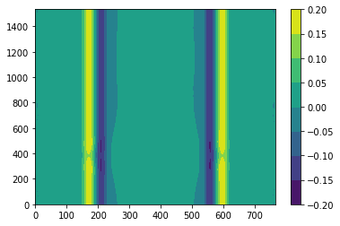
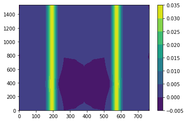
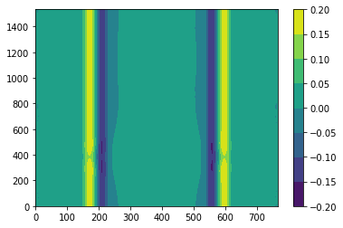
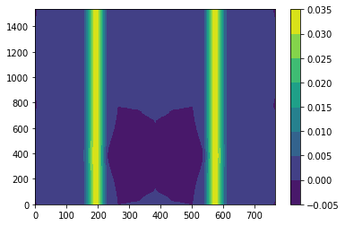

Contents
# Step 1: Install FFTW
!apt-get install libfftw3-dev
!apt-get install libfftw3-mpi-dev
# Step 2: Set paths for Dedalus installation
import os
os.environ['MPI_INCLUDE_PATH'] = "/usr/lib/x86_64-linux-gnu/openmpi/include"
os.environ['MPI_LIBRARY_PATH'] = "/usr/lib/x86_64-linux-gnu"
os.environ['FFTW_INCLUDE_PATH'] = "/usr/include"
os.environ['FFTW_LIBRARY_PATH'] = "/usr/lib/x86_64-linux-gnu"
# Step 3: Install Dedalus using pip
!pip3 install --no-cache http://github.com/dedalusproject/dedalus/zipball/d3/
/bin/bash: apt-get: command not found
/bin/bash: apt-get: command not found
Collecting http://github.com/dedalusproject/dedalus/zipball/d3/
Downloading http://github.com/dedalusproject/dedalus/zipball/d3/ (23.3MB)
?25l
0% | | 10kB 6.1MB/s eta 0:00:04
0% | | 20kB 424kB/s eta 0:00:55
0% | | 30kB 622kB/s eta 0:00:38
0% | | 40kB 446kB/s eta 0:00:53
0% | | 51kB 553kB/s eta 0:00:42
0% | | 61kB 623kB/s eta 0:00:38
0% | | 71kB 705kB/s eta 0:00:33
0% |▏ | 81kB 767kB/s eta 0:00:31
0% |▏ | 92kB 836kB/s eta 0:00:28
0% |▏ | 102kB 730kB/s eta 0:00:32
0% |▏ | 112kB 718kB/s eta 0:00:33
0% |▏ | 122kB 1.0MB/s eta 0:00:23
0% |▏ | 133kB 1.0MB/s eta 0:00:23
0% |▏ | 143kB 1.7MB/s eta 0:00:14
0% |▏ | 153kB 1.7MB/s eta 0:00:14
0% |▎ | 163kB 1.7MB/s eta 0:00:14
0% |▎ | 174kB 1.7MB/s eta 0:00:14
0% |▎ | 184kB 1.8MB/s eta 0:00:14
0% |▎ | 194kB 1.7MB/s eta 0:00:14
0% |▎ | 204kB 3.2MB/s eta 0:00:08
0% |▎ | 215kB 2.1MB/s eta 0:00:11
0% |▎ | 225kB 2.0MB/s eta 0:00:12
1% |▎ | 235kB 2.1MB/s eta 0:00:12
1% |▍ | 245kB 2.0MB/s eta 0:00:12
1% |▍ | 256kB 2.0MB/s eta 0:00:12
1% |▍ | 266kB 2.0MB/s eta 0:00:12
1% |▍ | 276kB 2.0MB/s eta 0:00:12
1% |▍ | 286kB 1.9MB/s eta 0:00:13
1% |▍ | 296kB 1.9MB/s eta 0:00:13
1% |▍ | 307kB 1.9MB/s eta 0:00:12
1% |▍ | 317kB 2.7MB/s eta 0:00:09
1% |▌ | 327kB 3.1MB/s eta 0:00:08
1% |▌ | 337kB 2.8MB/s eta 0:00:09
1% |▌ | 348kB 2.6MB/s eta 0:00:09
1% |▌ | 358kB 2.8MB/s eta 0:00:09
1% |▌ | 368kB 2.9MB/s eta 0:00:08
1% |▌ | 378kB 2.7MB/s eta 0:00:09
1% |▌ | 389kB 3.2MB/s eta 0:00:08
1% |▌ | 399kB 3.1MB/s eta 0:00:08
1% |▋ | 409kB 3.1MB/s eta 0:00:08
1% |▋ | 419kB 3.2MB/s eta 0:00:08
1% |▋ | 430kB 2.7MB/s eta 0:00:09
1% |▋ | 440kB 3.0MB/s eta 0:00:08
1% |▋ | 450kB 3.0MB/s eta 0:00:08
1% |▋ | 460kB 2.0MB/s eta 0:00:12
2% |▋ | 471kB 2.2MB/s eta 0:00:11
2% |▋ | 481kB 2.3MB/s eta 0:00:10
2% |▊ | 491kB 2.3MB/s eta 0:00:10
2% |▊ | 501kB 2.7MB/s eta 0:00:09
2% |▊ | 512kB 2.4MB/s eta 0:00:10
2% |▊ | 522kB 2.7MB/s eta 0:00:09
2% |▊ | 532kB 3.2MB/s eta 0:00:08
2% |▊ | 542kB 2.5MB/s eta 0:00:10
2% |▊ | 552kB 2.8MB/s eta 0:00:09
2% |▊ | 563kB 5.0MB/s eta 0:00:05
2% |▉ | 573kB 5.0MB/s eta 0:00:05
2% |▉ | 583kB 4.1MB/s eta 0:00:06
2% |▉ | 593kB 3.4MB/s eta 0:00:07
2% |▉ | 604kB 3.4MB/s eta 0:00:07
2% |▉ | 614kB 3.5MB/s eta 0:00:07
2% |▉ | 624kB 2.9MB/s eta 0:00:08
2% |▉ | 634kB 2.9MB/s eta 0:00:08
2% |▉ | 645kB 3.1MB/s eta 0:00:08
2% |█ | 655kB 2.8MB/s eta 0:00:08
2% |█ | 665kB 3.1MB/s eta 0:00:08
2% |█ | 675kB 2.7MB/s eta 0:00:09
2% |█ | 686kB 3.0MB/s eta 0:00:08
2% |█ | 696kB 3.1MB/s eta 0:00:08
3% |█ | 706kB 2.7MB/s eta 0:00:09
3% |█ | 716kB 2.9MB/s eta 0:00:08
3% |█ | 727kB 3.1MB/s eta 0:00:08
3% |█ | 737kB 2.5MB/s eta 0:00:09
3% |█ | 747kB 3.0MB/s eta 0:00:08
3% |█ | 757kB 2.3MB/s eta 0:00:10
3% |█ | 768kB 2.3MB/s eta 0:00:10
3% |█ | 778kB 2.6MB/s eta 0:00:09
3% |█ | 788kB 2.4MB/s eta 0:00:10
3% |█ | 798kB 2.7MB/s eta 0:00:09
3% |█▏ | 808kB 2.7MB/s eta 0:00:09
3% |█▏ | 819kB 2.4MB/s eta 0:00:10
3% |█▏ | 829kB 2.7MB/s eta 0:00:09
3% |█▏ | 839kB 3.1MB/s eta 0:00:08
3% |█▏ | 849kB 3.1MB/s eta 0:00:08
3% |█▏ | 860kB 4.4MB/s eta 0:00:06
3% |█▏ | 870kB 3.5MB/s eta 0:00:07
3% |█▏ | 880kB 3.5MB/s eta 0:00:07
3% |█▎ | 890kB 3.4MB/s eta 0:00:07
3% |█▎ | 901kB 2.8MB/s eta 0:00:08
3% |█▎ | 911kB 3.2MB/s eta 0:00:07
3% |█▎ | 921kB 3.2MB/s eta 0:00:07
4% |█▎ | 931kB 3.2MB/s eta 0:00:07
4% |█▎ | 942kB 3.0MB/s eta 0:00:08
4% |█▎ | 952kB 2.6MB/s eta 0:00:09
4% |█▎ | 962kB 2.9MB/s eta 0:00:08
4% |█▍ | 972kB 2.9MB/s eta 0:00:08
4% |█▍ | 983kB 2.6MB/s eta 0:00:09
4% |█▍ | 993kB 2.9MB/s eta 0:00:08
4% |█▍ | 1.0MB 3.0MB/s eta 0:00:08
4% |█▍ | 1.0MB 3.0MB/s eta 0:00:08
4% |█▍ | 1.0MB 3.0MB/s eta 0:00:08
4% |█▍ | 1.0MB 2.6MB/s eta 0:00:09
4% |█▍ | 1.0MB 3.1MB/s eta 0:00:08
4% |█▌ | 1.1MB 2.3MB/s eta 0:00:10
4% |█▌ | 1.1MB 2.3MB/s eta 0:00:10
4% |█▌ | 1.1MB 2.7MB/s eta 0:00:09
4% |█▌ | 1.1MB 2.9MB/s eta 0:00:08
4% |█▌ | 1.1MB 2.9MB/s eta 0:00:08
4% |█▌ | 1.1MB 3.0MB/s eta 0:00:08
4% |█▌ | 1.1MB 2.6MB/s eta 0:00:09
4% |█▌ | 1.1MB 3.0MB/s eta 0:00:08
4% |█▋ | 1.1MB 2.9MB/s eta 0:00:08
4% |█▋ | 1.1MB 2.4MB/s eta 0:00:10
4% |█▋ | 1.2MB 3.7MB/s eta 0:00:06
5% |█▋ | 1.2MB 3.5MB/s eta 0:00:07
5% |█▋ | 1.2MB 3.5MB/s eta 0:00:07
5% |█▋ | 1.2MB 2.9MB/s eta 0:00:08
5% |█▋ | 1.2MB 2.6MB/s eta 0:00:09
5% |█▋ | 1.2MB 3.0MB/s eta 0:00:08
5% |█▊ | 1.2MB 2.8MB/s eta 0:00:08
5% |█▊ | 1.2MB 2.6MB/s eta 0:00:09
5% |█▊ | 1.2MB 3.0MB/s eta 0:00:08
5% |█▊ | 1.2MB 3.3MB/s eta 0:00:07
5% |█▊ | 1.3MB 3.3MB/s eta 0:00:07
5% |█▊ | 1.3MB 3.1MB/s eta 0:00:08
5% |█▊ | 1.3MB 2.6MB/s eta 0:00:09
5% |█▊ | 1.3MB 3.1MB/s eta 0:00:08
5% |█▉ | 1.3MB 3.0MB/s eta 0:00:08
5% |█▉ | 1.3MB 2.4MB/s eta 0:00:09
5% |█▉ | 1.3MB 2.9MB/s eta 0:00:08
5% |█▉ | 1.3MB 3.1MB/s eta 0:00:08
5% |█▉ | 1.3MB 3.1MB/s eta 0:00:08
5% |█▉ | 1.4MB 2.3MB/s eta 0:00:10
5% |█▉ | 1.4MB 2.3MB/s eta 0:00:10
5% |█▉ | 1.4MB 2.5MB/s eta 0:00:09
5% |██ | 1.4MB 3.0MB/s eta 0:00:08
5% |██ | 1.4MB 2.6MB/s eta 0:00:09
6% |██ | 1.4MB 2.9MB/s eta 0:00:08
6% |██ | 1.4MB 3.1MB/s eta 0:00:07
6% |██ | 1.4MB 3.1MB/s eta 0:00:07
6% |██ | 1.4MB 2.9MB/s eta 0:00:08
6% |██ | 1.4MB 2.5MB/s eta 0:00:09
6% |██ | 1.5MB 3.9MB/s eta 0:00:06
6% |██ | 1.5MB 3.5MB/s eta 0:00:07
6% |██ | 1.5MB 3.0MB/s eta 0:00:08
6% |██ | 1.5MB 2.9MB/s eta 0:00:08
6% |██ | 1.5MB 2.9MB/s eta 0:00:08
6% |██ | 1.5MB 2.9MB/s eta 0:00:08
6% |██ | 1.5MB 3.0MB/s eta 0:00:08
6% |██ | 1.5MB 2.5MB/s eta 0:00:09
6% |██▏ | 1.5MB 2.8MB/s eta 0:00:08
6% |██▏ | 1.5MB 3.0MB/s eta 0:00:08
6% |██▏ | 1.6MB 2.5MB/s eta 0:00:09
6% |██▏ | 1.6MB 2.7MB/s eta 0:00:09
6% |██▏ | 1.6MB 2.9MB/s eta 0:00:08
6% |██▏ | 1.6MB 3.0MB/s eta 0:00:08
6% |██▏ | 1.6MB 3.1MB/s eta 0:00:07
6% |██▏ | 1.6MB 2.7MB/s eta 0:00:09
6% |██▎ | 1.6MB 3.0MB/s eta 0:00:08
6% |██▎ | 1.6MB 3.2MB/s eta 0:00:07
7% |██▎ | 1.6MB 2.2MB/s eta 0:00:11
7% |██▎ | 1.6MB 2.3MB/s eta 0:00:10
7% |██▎ | 1.7MB 2.8MB/s eta 0:00:08
7% |██▎ | 1.7MB 2.8MB/s eta 0:00:08
7% |██▎ | 1.7MB 3.0MB/s eta 0:00:08
7% |██▎ | 1.7MB 2.7MB/s eta 0:00:09
7% |██▍ | 1.7MB 2.9MB/s eta 0:00:08
7% |██▍ | 1.7MB 2.8MB/s eta 0:00:08
7% |██▍ | 1.7MB 2.6MB/s eta 0:00:09
7% |██▍ | 1.7MB 3.0MB/s eta 0:00:08
7% |██▍ | 1.7MB 4.3MB/s eta 0:00:06
7% |██▍ | 1.8MB 4.3MB/s eta 0:00:06
7% |██▍ | 1.8MB 3.2MB/s eta 0:00:07
7% |██▍ | 1.8MB 2.9MB/s eta 0:00:08
7% |██▌ | 1.8MB 2.9MB/s eta 0:00:08
7% |██▌ | 1.8MB 2.8MB/s eta 0:00:08
7% |██▌ | 1.8MB 2.6MB/s eta 0:00:09
7% |██▌ | 1.8MB 3.2MB/s eta 0:00:07
7% |██▌ | 1.8MB 2.9MB/s eta 0:00:08
7% |██▌ | 1.8MB 3.0MB/s eta 0:00:08
7% |██▌ | 1.8MB 3.0MB/s eta 0:00:08
7% |██▌ | 1.9MB 2.5MB/s eta 0:00:09
8% |██▋ | 1.9MB 3.1MB/s eta 0:00:07
8% |██▋ | 1.9MB 3.1MB/s eta 0:00:07
8% |██▋ | 1.9MB 2.6MB/s eta 0:00:09
8% |██▋ | 1.9MB 3.0MB/s eta 0:00:08
8% |██▋ | 1.9MB 3.0MB/s eta 0:00:08
8% |██▋ | 1.9MB 3.0MB/s eta 0:00:08
8% |██▋ | 1.9MB 2.9MB/s eta 0:00:08
8% |██▋ | 1.9MB 2.1MB/s eta 0:00:11
8% |██▊ | 1.9MB 2.4MB/s eta 0:00:10
8% |██▊ | 2.0MB 2.7MB/s eta 0:00:08
8% |██▊ | 2.0MB 2.6MB/s eta 0:00:09
8% |██▊ | 2.0MB 2.9MB/s eta 0:00:08
8% |██▊ | 2.0MB 3.1MB/s eta 0:00:07
8% |██▊ | 2.0MB 3.1MB/s eta 0:00:07
8% |██▊ | 2.0MB 2.9MB/s eta 0:00:08
8% |██▊ | 2.0MB 2.6MB/s eta 0:00:09
8% |██▉ | 2.0MB 3.1MB/s eta 0:00:07
8% |██▉ | 2.0MB 3.8MB/s eta 0:00:06
8% |██▉ | 2.0MB 3.4MB/s eta 0:00:07
8% |██▉ | 2.1MB 3.4MB/s eta 0:00:07
8% |██▉ | 2.1MB 3.0MB/s eta 0:00:08
8% |██▉ | 2.1MB 3.0MB/s eta 0:00:08
8% |██▉ | 2.1MB 2.8MB/s eta 0:00:08
9% |██▉ | 2.1MB 2.4MB/s eta 0:00:09
9% |███ | 2.1MB 2.8MB/s eta 0:00:08
9% |███ | 2.1MB 3.0MB/s eta 0:00:08
9% |███ | 2.1MB 2.6MB/s eta 0:00:09
9% |███ | 2.1MB 3.1MB/s eta 0:00:07
9% |███ | 2.2MB 2.9MB/s eta 0:00:08
9% |███ | 2.2MB 2.9MB/s eta 0:00:08
9% |███ | 2.2MB 3.1MB/s eta 0:00:07
9% |███ | 2.2MB 2.6MB/s eta 0:00:09
9% |███ | 2.2MB 3.2MB/s eta 0:00:07
9% |███ | 2.2MB 3.2MB/s eta 0:00:07
9% |███ | 2.2MB 2.7MB/s eta 0:00:08
9% |███ | 2.2MB 2.9MB/s eta 0:00:08
9% |███ | 2.2MB 2.4MB/s eta 0:00:09
9% |███ | 2.2MB 2.4MB/s eta 0:00:09
9% |███ | 2.3MB 2.8MB/s eta 0:00:08
9% |███▏ | 2.3MB 2.6MB/s eta 0:00:09
9% |███▏ | 2.3MB 2.9MB/s eta 0:00:08
9% |███▏ | 2.3MB 3.0MB/s eta 0:00:08
9% |███▏ | 2.3MB 2.6MB/s eta 0:00:08
9% |███▏ | 2.3MB 3.0MB/s eta 0:00:08
9% |███▏ | 2.3MB 3.0MB/s eta 0:00:07
9% |███▏ | 2.3MB 3.0MB/s eta 0:00:07
10% |███▏ | 2.3MB 4.0MB/s eta 0:00:06
10% |███▎ | 2.3MB 3.3MB/s eta 0:00:07
10% |███▎ | 2.4MB 3.4MB/s eta 0:00:07
10% |███▎ | 2.4MB 3.1MB/s eta 0:00:07
10% |███▎ | 2.4MB 2.6MB/s eta 0:00:08
10% |███▎ | 2.4MB 3.0MB/s eta 0:00:07
10% |███▎ | 2.4MB 2.6MB/s eta 0:00:09
10% |███▎ | 2.4MB 2.6MB/s eta 0:00:09
10% |███▎ | 2.4MB 2.8MB/s eta 0:00:08
10% |███▍ | 2.4MB 2.5MB/s eta 0:00:09
10% |███▍ | 2.4MB 2.8MB/s eta 0:00:08
10% |███▍ | 2.4MB 2.9MB/s eta 0:00:08
10% |███▍ | 2.5MB 2.3MB/s eta 0:00:09
10% |███▍ | 2.5MB 2.6MB/s eta 0:00:08
10% |███▍ | 2.5MB 3.0MB/s eta 0:00:07
10% |███▍ | 2.5MB 3.0MB/s eta 0:00:07
10% |███▍ | 2.5MB 3.2MB/s eta 0:00:07
10% |███▌ | 2.5MB 2.9MB/s eta 0:00:08
10% |███▌ | 2.5MB 3.1MB/s eta 0:00:07
10% |███▌ | 2.5MB 2.5MB/s eta 0:00:09
10% |███▌ | 2.5MB 2.5MB/s eta 0:00:09
10% |███▌ | 2.5MB 2.7MB/s eta 0:00:08
11% |███▌ | 2.6MB 3.2MB/s eta 0:00:07
11% |███▌ | 2.6MB 3.2MB/s eta 0:00:07
11% |███▌ | 2.6MB 2.9MB/s eta 0:00:08
11% |███▋ | 2.6MB 2.5MB/s eta 0:00:09
11% |███▋ | 2.6MB 3.1MB/s eta 0:00:07
11% |███▋ | 2.6MB 3.1MB/s eta 0:00:07
11% |███▋ | 2.6MB 2.6MB/s eta 0:00:08
11% |███▋ | 2.6MB 3.9MB/s eta 0:00:06
11% |███▋ | 2.6MB 3.4MB/s eta 0:00:07
11% |███▋ | 2.7MB 3.4MB/s eta 0:00:07
11% |███▋ | 2.7MB 2.9MB/s eta 0:00:08
11% |███▊ | 2.7MB 2.6MB/s eta 0:00:08
11% |███▊ | 2.7MB 2.8MB/s eta 0:00:08
11% |███▊ | 2.7MB 3.0MB/s eta 0:00:07
11% |███▊ | 2.7MB 2.6MB/s eta 0:00:08
11% |███▊ | 2.7MB 2.9MB/s eta 0:00:08
11% |███▊ | 2.7MB 3.0MB/s eta 0:00:07
11% |███▊ | 2.7MB 2.5MB/s eta 0:00:09
11% |███▊ | 2.7MB 2.8MB/s eta 0:00:08
11% |███▉ | 2.8MB 2.5MB/s eta 0:00:09
11% |███▉ | 2.8MB 3.1MB/s eta 0:00:07
11% |███▉ | 2.8MB 3.0MB/s eta 0:00:07
11% |███▉ | 2.8MB 2.7MB/s eta 0:00:08
12% |███▉ | 2.8MB 2.9MB/s eta 0:00:08
12% |███▉ | 2.8MB 3.0MB/s eta 0:00:07
12% |███▉ | 2.8MB 2.2MB/s eta 0:00:10
12% |███▉ | 2.8MB 2.4MB/s eta 0:00:09
12% |████ | 2.8MB 2.9MB/s eta 0:00:08
12% |████ | 2.8MB 2.9MB/s eta 0:00:08
12% |████ | 2.9MB 3.0MB/s eta 0:00:07
12% |████ | 2.9MB 2.6MB/s eta 0:00:08
12% |████ | 2.9MB 3.0MB/s eta 0:00:07
12% |████ | 2.9MB 3.1MB/s eta 0:00:07
12% |████ | 2.9MB 2.7MB/s eta 0:00:08
12% |████ | 2.9MB 3.0MB/s eta 0:00:07
12% |████ | 2.9MB 3.8MB/s eta 0:00:06
12% |████ | 2.9MB 3.8MB/s eta 0:00:06
12% |████ | 2.9MB 3.3MB/s eta 0:00:07
12% |████ | 2.9MB 2.8MB/s eta 0:00:08
12% |████ | 3.0MB 3.0MB/s eta 0:00:07
12% |████ | 3.0MB 2.9MB/s eta 0:00:08
12% |████ | 3.0MB 2.5MB/s eta 0:00:09
12% |████▏ | 3.0MB 2.8MB/s eta 0:00:08
12% |████▏ | 3.0MB 2.9MB/s eta 0:00:08
12% |████▏ | 3.0MB 2.8MB/s eta 0:00:08
12% |████▏ | 3.0MB 3.0MB/s eta 0:00:07
13% |████▏ | 3.0MB 2.5MB/s eta 0:00:09
13% |████▏ | 3.0MB 2.8MB/s eta 0:00:08
13% |████▏ | 3.1MB 2.6MB/s eta 0:00:08
13% |████▏ | 3.1MB 2.6MB/s eta 0:00:08
13% |████▎ | 3.1MB 3.1MB/s eta 0:00:07
13% |████▎ | 3.1MB 3.1MB/s eta 0:00:07
13% |████▎ | 3.1MB 3.1MB/s eta 0:00:07
13% |████▎ | 3.1MB 3.2MB/s eta 0:00:07
13% |████▎ | 3.1MB 2.3MB/s eta 0:00:09
13% |████▎ | 3.1MB 2.5MB/s eta 0:00:09
13% |████▎ | 3.1MB 2.9MB/s eta 0:00:07
13% |████▎ | 3.1MB 2.8MB/s eta 0:00:08
13% |████▍ | 3.2MB 3.4MB/s eta 0:00:06
13% |████▍ | 3.2MB 2.9MB/s eta 0:00:07
13% |████▍ | 3.2MB 2.9MB/s eta 0:00:07
13% |████▍ | 3.2MB 3.0MB/s eta 0:00:07
13% |████▍ | 3.2MB 2.5MB/s eta 0:00:09
13% |████▍ | 3.2MB 2.8MB/s eta 0:00:08
13% |████▍ | 3.2MB 3.4MB/s eta 0:00:06
13% |████▍ | 3.2MB 3.1MB/s eta 0:00:07
13% |████▌ | 3.2MB 3.2MB/s eta 0:00:07
13% |████▌ | 3.2MB 2.9MB/s eta 0:00:07
13% |████▌ | 3.3MB 2.9MB/s eta 0:00:07
14% |████▌ | 3.3MB 3.0MB/s eta 0:00:07
14% |████▌ | 3.3MB 2.4MB/s eta 0:00:09
14% |████▌ | 3.3MB 2.7MB/s eta 0:00:08
14% |████▌ | 3.3MB 3.2MB/s eta 0:00:07
14% |████▌ | 3.3MB 2.5MB/s eta 0:00:08
14% |████▋ | 3.3MB 3.0MB/s eta 0:00:07
14% |████▋ | 3.3MB 3.0MB/s eta 0:00:07
14% |████▋ | 3.3MB 3.0MB/s eta 0:00:07
14% |████▋ | 3.3MB 2.8MB/s eta 0:00:08
14% |████▋ | 3.4MB 2.7MB/s eta 0:00:08
14% |████▋ | 3.4MB 3.1MB/s eta 0:00:07
14% |████▋ | 3.4MB 3.3MB/s eta 0:00:07
14% |████▋ | 3.4MB 2.8MB/s eta 0:00:08
14% |████▊ | 3.4MB 3.0MB/s eta 0:00:07
14% |████▊ | 3.4MB 2.6MB/s eta 0:00:08
14% |████▊ | 3.4MB 2.6MB/s eta 0:00:08
14% |████▊ | 3.4MB 2.8MB/s eta 0:00:08
14% |████▊ | 3.4MB 2.6MB/s eta 0:00:08
14% |████▊ | 3.5MB 3.2MB/s eta 0:00:07
14% |████▊ | 3.5MB 3.0MB/s eta 0:00:07
14% |████▊ | 3.5MB 2.5MB/s eta 0:00:08
14% |████▉ | 3.5MB 2.9MB/s eta 0:00:07
15% |████▉ | 3.5MB 2.9MB/s eta 0:00:07
15% |████▉ | 3.5MB 2.9MB/s eta 0:00:07
15% |████▉ | 3.5MB 3.5MB/s eta 0:00:06
15% |████▉ | 3.5MB 3.0MB/s eta 0:00:07
15% |████▉ | 3.5MB 3.1MB/s eta 0:00:07
15% |████▉ | 3.5MB 3.0MB/s eta 0:00:07
15% |████▉ | 3.6MB 2.5MB/s eta 0:00:08
15% |█████ | 3.6MB 2.7MB/s eta 0:00:08
15% |█████ | 3.6MB 3.1MB/s eta 0:00:07
15% |█████ | 3.6MB 3.1MB/s eta 0:00:07
15% |█████ | 3.6MB 3.1MB/s eta 0:00:07
15% |█████ | 3.6MB 2.7MB/s eta 0:00:08
15% |█████ | 3.6MB 3.1MB/s eta 0:00:07
15% |█████ | 3.6MB 3.1MB/s eta 0:00:07
15% |█████ | 3.6MB 2.4MB/s eta 0:00:09
15% |█████ | 3.6MB 2.7MB/s eta 0:00:08
15% |█████ | 3.7MB 3.2MB/s eta 0:00:07
15% |█████ | 3.7MB 3.2MB/s eta 0:00:07
15% |█████ | 3.7MB 2.9MB/s eta 0:00:07
15% |█████ | 3.7MB 2.6MB/s eta 0:00:08
15% |█████ | 3.7MB 3.0MB/s eta 0:00:07
15% |█████ | 3.7MB 2.5MB/s eta 0:00:08
15% |█████▏ | 3.7MB 2.5MB/s eta 0:00:08
16% |█████▏ | 3.7MB 2.8MB/s eta 0:00:07
16% |█████▏ | 3.7MB 3.3MB/s eta 0:00:06
16% |█████▏ | 3.7MB 3.3MB/s eta 0:00:06
16% |█████▏ | 3.8MB 3.0MB/s eta 0:00:07
16% |█████▏ | 3.8MB 2.6MB/s eta 0:00:08
16% |█████▏ | 3.8MB 3.0MB/s eta 0:00:07
16% |█████▏ | 3.8MB 3.0MB/s eta 0:00:07
16% |█████▎ | 3.8MB 2.6MB/s eta 0:00:08
16% |█████▎ | 3.8MB 3.8MB/s eta 0:00:06
16% |█████▎ | 3.8MB 3.2MB/s eta 0:00:07
16% |█████▎ | 3.8MB 3.2MB/s eta 0:00:07
16% |█████▎ | 3.8MB 2.8MB/s eta 0:00:07
16% |█████▎ | 3.9MB 2.4MB/s eta 0:00:09
16% |█████▎ | 3.9MB 2.7MB/s eta 0:00:08
16% |█████▎ | 3.9MB 3.0MB/s eta 0:00:07
16% |█████▍ | 3.9MB 2.6MB/s eta 0:00:08
16% |█████▍ | 3.9MB 2.9MB/s eta 0:00:07
16% |█████▍ | 3.9MB 2.7MB/s eta 0:00:08
16% |█████▍ | 3.9MB 2.7MB/s eta 0:00:08
16% |█████▍ | 3.9MB 2.9MB/s eta 0:00:07
16% |█████▍ | 3.9MB 2.4MB/s eta 0:00:08
16% |█████▍ | 3.9MB 2.9MB/s eta 0:00:07
16% |█████▍ | 4.0MB 3.2MB/s eta 0:00:07
17% |█████▌ | 4.0MB 2.8MB/s eta 0:00:07
17% |█████▌ | 4.0MB 2.9MB/s eta 0:00:07
17% |█████▌ | 4.0MB 2.2MB/s eta 0:00:09
17% |█████▌ | 4.0MB 2.2MB/s eta 0:00:09
17% |█████▌ | 4.0MB 2.6MB/s eta 0:00:08
17% |█████▌ | 4.0MB 2.6MB/s eta 0:00:08
17% |█████▌ | 4.0MB 2.9MB/s eta 0:00:07
17% |█████▌ | 4.0MB 3.3MB/s eta 0:00:06
17% |█████▋ | 4.0MB 2.7MB/s eta 0:00:08
17% |█████▋ | 4.1MB 3.0MB/s eta 0:00:07
17% |█████▋ | 4.1MB 2.9MB/s eta 0:00:07
17% |█████▋ | 4.1MB 2.9MB/s eta 0:00:07
17% |█████▋ | 4.1MB 4.6MB/s eta 0:00:05
17% |█████▋ | 4.1MB 3.8MB/s eta 0:00:06
17% |█████▋ | 4.1MB 3.8MB/s eta 0:00:06
17% |█████▋ | 4.1MB 3.2MB/s eta 0:00:07
17% |█████▊ | 4.1MB 2.7MB/s eta 0:00:08
17% |█████▊ | 4.1MB 2.8MB/s eta 0:00:07
17% |█████▊ | 4.1MB 3.0MB/s eta 0:00:07
17% |█████▊ | 4.2MB 3.0MB/s eta 0:00:07
17% |█████▊ | 4.2MB 3.1MB/s eta 0:00:07
17% |█████▊ | 4.2MB 2.7MB/s eta 0:00:08
18% |█████▊ | 4.2MB 3.0MB/s eta 0:00:07
18% |█████▊ | 4.2MB 3.0MB/s eta 0:00:07
18% |█████▉ | 4.2MB 2.6MB/s eta 0:00:08
18% |█████▉ | 4.2MB 2.9MB/s eta 0:00:07
18% |█████▉ | 4.2MB 2.9MB/s eta 0:00:07
18% |█████▉ | 4.2MB 2.9MB/s eta 0:00:07
18% |█████▉ | 4.2MB 2.9MB/s eta 0:00:07
18% |█████▉ | 4.3MB 2.6MB/s eta 0:00:08
18% |█████▉ | 4.3MB 3.0MB/s eta 0:00:07
18% |█████▉ | 4.3MB 2.2MB/s eta 0:00:09
18% |██████ | 4.3MB 2.2MB/s eta 0:00:09
18% |██████ | 4.3MB 2.5MB/s eta 0:00:08
18% |██████ | 4.3MB 2.9MB/s eta 0:00:07
18% |██████ | 4.3MB 2.9MB/s eta 0:00:07
18% |██████ | 4.3MB 3.0MB/s eta 0:00:07
18% |██████ | 4.3MB 2.7MB/s eta 0:00:07
18% |██████ | 4.4MB 3.1MB/s eta 0:00:07
18% |██████ | 4.4MB 2.9MB/s eta 0:00:07
18% |██████ | 4.4MB 2.5MB/s eta 0:00:08
18% |██████ | 4.4MB 4.2MB/s eta 0:00:05
18% |██████ | 4.4MB 3.7MB/s eta 0:00:06
18% |██████ | 4.4MB 3.7MB/s eta 0:00:06
18% |██████ | 4.4MB 3.2MB/s eta 0:00:06
19% |██████ | 4.4MB 2.7MB/s eta 0:00:08
19% |██████ | 4.4MB 3.1MB/s eta 0:00:07
19% |██████▏ | 4.4MB 3.0MB/s eta 0:00:07
19% |██████▏ | 4.5MB 2.5MB/s eta 0:00:08
19% |██████▏ | 4.5MB 2.8MB/s eta 0:00:07
19% |██████▏ | 4.5MB 3.1MB/s eta 0:00:07
19% |██████▏ | 4.5MB 3.1MB/s eta 0:00:07
19% |██████▏ | 4.5MB 2.9MB/s eta 0:00:07
19% |██████▏ | 4.5MB 2.5MB/s eta 0:00:08
19% |██████▏ | 4.5MB 2.8MB/s eta 0:00:07
19% |██████▎ | 4.5MB 2.9MB/s eta 0:00:07
19% |██████▎ | 4.5MB 2.6MB/s eta 0:00:08
19% |██████▎ | 4.5MB 2.8MB/s eta 0:00:07
19% |██████▎ | 4.6MB 3.2MB/s eta 0:00:06
19% |██████▎ | 4.6MB 3.2MB/s eta 0:00:06
19% |██████▎ | 4.6MB 2.3MB/s eta 0:00:09
19% |██████▎ | 4.6MB 2.3MB/s eta 0:00:09
19% |██████▎ | 4.6MB 2.6MB/s eta 0:00:08
19% |██████▍ | 4.6MB 3.0MB/s eta 0:00:07
19% |██████▍ | 4.6MB 2.7MB/s eta 0:00:07
19% |██████▍ | 4.6MB 3.1MB/s eta 0:00:07
19% |██████▍ | 4.6MB 3.0MB/s eta 0:00:07
19% |██████▍ | 4.6MB 3.0MB/s eta 0:00:07
20% |██████▍ | 4.7MB 2.9MB/s eta 0:00:07
20% |██████▍ | 4.7MB 2.6MB/s eta 0:00:08
20% |██████▍ | 4.7MB 4.4MB/s eta 0:00:05
20% |██████▌ | 4.7MB 3.7MB/s eta 0:00:06
20% |██████▌ | 4.7MB 3.0MB/s eta 0:00:07
20% |██████▌ | 4.7MB 3.0MB/s eta 0:00:07
20% |██████▌ | 4.7MB 3.0MB/s eta 0:00:07
20% |██████▌ | 4.7MB 3.0MB/s eta 0:00:07
20% |██████▌ | 4.7MB 3.0MB/s eta 0:00:07
20% |██████▌ | 4.8MB 2.4MB/s eta 0:00:08
20% |██████▌ | 4.8MB 2.7MB/s eta 0:00:07
20% |██████▋ | 4.8MB 3.0MB/s eta 0:00:07
20% |██████▋ | 4.8MB 2.6MB/s eta 0:00:08
20% |██████▋ | 4.8MB 2.9MB/s eta 0:00:07
20% |██████▋ | 4.8MB 3.0MB/s eta 0:00:07
20% |██████▋ | 4.8MB 3.0MB/s eta 0:00:07
20% |██████▋ | 4.8MB 2.9MB/s eta 0:00:07
20% |██████▋ | 4.8MB 2.5MB/s eta 0:00:08
20% |██████▋ | 4.8MB 3.0MB/s eta 0:00:07
20% |██████▊ | 4.9MB 3.2MB/s eta 0:00:06
20% |██████▊ | 4.9MB 2.2MB/s eta 0:00:09
20% |██████▊ | 4.9MB 2.3MB/s eta 0:00:09
20% |██████▊ | 4.9MB 2.6MB/s eta 0:00:08
21% |██████▊ | 4.9MB 2.6MB/s eta 0:00:08
21% |██████▊ | 4.9MB 2.9MB/s eta 0:00:07
21% |██████▊ | 4.9MB 2.6MB/s eta 0:00:08
21% |██████▊ | 4.9MB 3.0MB/s eta 0:00:07
21% |██████▉ | 4.9MB 3.0MB/s eta 0:00:07
21% |██████▉ | 4.9MB 2.5MB/s eta 0:00:08
21% |██████▉ | 5.0MB 2.9MB/s eta 0:00:07
21% |██████▉ | 5.0MB 4.3MB/s eta 0:00:05
21% |██████▉ | 5.0MB 3.5MB/s eta 0:00:06
21% |██████▉ | 5.0MB 3.4MB/s eta 0:00:06
21% |██████▉ | 5.0MB 3.1MB/s eta 0:00:06
21% |██████▉ | 5.0MB 3.1MB/s eta 0:00:06
21% |███████ | 5.0MB 3.0MB/s eta 0:00:07
21% |███████ | 5.0MB 2.6MB/s eta 0:00:08
21% |███████ | 5.0MB 2.9MB/s eta 0:00:07
21% |███████ | 5.0MB 2.8MB/s eta 0:00:07
21% |███████ | 5.1MB 2.6MB/s eta 0:00:08
21% |███████ | 5.1MB 2.9MB/s eta 0:00:07
21% |███████ | 5.1MB 3.0MB/s eta 0:00:07
21% |███████ | 5.1MB 3.0MB/s eta 0:00:07
21% |███████ | 5.1MB 2.9MB/s eta 0:00:07
21% |███████ | 5.1MB 2.5MB/s eta 0:00:08
22% |███████ | 5.1MB 2.8MB/s eta 0:00:07
22% |███████ | 5.1MB 3.1MB/s eta 0:00:06
22% |███████ | 5.1MB 2.6MB/s eta 0:00:08
22% |███████ | 5.2MB 3.2MB/s eta 0:00:06
22% |███████ | 5.2MB 2.4MB/s eta 0:00:08
22% |███████▏ | 5.2MB 2.3MB/s eta 0:00:08
22% |███████▏ | 5.2MB 2.6MB/s eta 0:00:07
22% |███████▏ | 5.2MB 2.6MB/s eta 0:00:07
22% |███████▏ | 5.2MB 3.0MB/s eta 0:00:06
22% |███████▏ | 5.2MB 2.9MB/s eta 0:00:07
22% |███████▏ | 5.2MB 2.8MB/s eta 0:00:07
22% |███████▏ | 5.2MB 2.9MB/s eta 0:00:07
22% |███████▏ | 5.2MB 3.0MB/s eta 0:00:07
22% |███████▎ | 5.3MB 3.0MB/s eta 0:00:07
22% |███████▎ | 5.3MB 4.4MB/s eta 0:00:05
22% |███████▎ | 5.3MB 3.5MB/s eta 0:00:06
22% |███████▎ | 5.3MB 3.6MB/s eta 0:00:06
22% |███████▎ | 5.3MB 3.0MB/s eta 0:00:06
22% |███████▎ | 5.3MB 2.6MB/s eta 0:00:07
22% |███████▎ | 5.3MB 3.2MB/s eta 0:00:06
22% |███████▎ | 5.3MB 2.9MB/s eta 0:00:07
22% |███████▍ | 5.3MB 2.9MB/s eta 0:00:07
22% |███████▍ | 5.3MB 3.0MB/s eta 0:00:07
23% |███████▍ | 5.4MB 2.6MB/s eta 0:00:07
23% |███████▍ | 5.4MB 2.9MB/s eta 0:00:07
23% |███████▍ | 5.4MB 3.0MB/s eta 0:00:07
23% |███████▍ | 5.4MB 2.5MB/s eta 0:00:08
23% |███████▍ | 5.4MB 2.8MB/s eta 0:00:07
23% |███████▍ | 5.4MB 2.9MB/s eta 0:00:07
23% |███████▌ | 5.4MB 2.8MB/s eta 0:00:07
23% |███████▌ | 5.4MB 3.1MB/s eta 0:00:06
23% |███████▌ | 5.4MB 2.7MB/s eta 0:00:07
23% |███████▌ | 5.4MB 3.1MB/s eta 0:00:06
23% |███████▌ | 5.5MB 2.3MB/s eta 0:00:08
23% |███████▌ | 5.5MB 2.3MB/s eta 0:00:08
23% |███████▌ | 5.5MB 2.6MB/s eta 0:00:07
23% |███████▌ | 5.5MB 3.1MB/s eta 0:00:06
23% |███████▋ | 5.5MB 3.1MB/s eta 0:00:06
23% |███████▋ | 5.5MB 3.1MB/s eta 0:00:06
23% |███████▋ | 5.5MB 2.7MB/s eta 0:00:07
23% |███████▋ | 5.5MB 2.9MB/s eta 0:00:07
23% |███████▋ | 5.5MB 2.9MB/s eta 0:00:07
23% |███████▋ | 5.6MB 2.5MB/s eta 0:00:08
23% |███████▋ | 5.6MB 4.0MB/s eta 0:00:05
23% |███████▋ | 5.6MB 3.4MB/s eta 0:00:06
23% |███████▊ | 5.6MB 3.4MB/s eta 0:00:06
24% |███████▊ | 5.6MB 3.0MB/s eta 0:00:06
24% |███████▊ | 5.6MB 2.6MB/s eta 0:00:07
24% |███████▊ | 5.6MB 3.0MB/s eta 0:00:06
24% |███████▊ | 5.6MB 2.9MB/s eta 0:00:07
24% |███████▊ | 5.6MB 2.6MB/s eta 0:00:07
24% |███████▊ | 5.6MB 3.0MB/s eta 0:00:06
24% |███████▊ | 5.7MB 3.1MB/s eta 0:00:06
24% |███████▉ | 5.7MB 3.1MB/s eta 0:00:06
24% |███████▉ | 5.7MB 3.2MB/s eta 0:00:06
24% |███████▉ | 5.7MB 2.6MB/s eta 0:00:07
24% |███████▉ | 5.7MB 2.8MB/s eta 0:00:07
24% |███████▉ | 5.7MB 2.9MB/s eta 0:00:06
24% |███████▉ | 5.7MB 2.5MB/s eta 0:00:07
24% |███████▉ | 5.7MB 3.0MB/s eta 0:00:06
24% |███████▉ | 5.7MB 3.0MB/s eta 0:00:06
24% |████████ | 5.7MB 3.1MB/s eta 0:00:06
24% |████████ | 5.8MB 2.3MB/s eta 0:00:08
24% |████████ | 5.8MB 2.3MB/s eta 0:00:08
24% |████████ | 5.8MB 2.6MB/s eta 0:00:07
24% |████████ | 5.8MB 3.1MB/s eta 0:00:06
24% |████████ | 5.8MB 2.8MB/s eta 0:00:07
24% |████████ | 5.8MB 3.0MB/s eta 0:00:06
24% |████████ | 5.8MB 3.0MB/s eta 0:00:06
25% |████████ | 5.8MB 3.0MB/s eta 0:00:06
25% |████████ | 5.8MB 2.9MB/s eta 0:00:06
25% |████████ | 5.8MB 2.5MB/s eta 0:00:07
25% |████████ | 5.9MB 4.1MB/s eta 0:00:05
25% |████████ | 5.9MB 3.5MB/s eta 0:00:05
25% |████████ | 5.9MB 2.8MB/s eta 0:00:07
25% |████████ | 5.9MB 2.8MB/s eta 0:00:07
25% |████████▏ | 5.9MB 2.9MB/s eta 0:00:06
25% |████████▏ | 5.9MB 2.9MB/s eta 0:00:06
25% |████████▏ | 5.9MB 3.0MB/s eta 0:00:06
25% |████████▏ | 5.9MB 2.6MB/s eta 0:00:07
25% |████████▏ | 5.9MB 3.0MB/s eta 0:00:06
25% |████████▏ | 5.9MB 3.0MB/s eta 0:00:06
25% |████████▏ | 6.0MB 2.6MB/s eta 0:00:07
25% |████████▏ | 6.0MB 3.0MB/s eta 0:00:06
25% |████████▎ | 6.0MB 3.1MB/s eta 0:00:06
25% |████████▎ | 6.0MB 3.1MB/s eta 0:00:06
25% |████████▎ | 6.0MB 3.0MB/s eta 0:00:06
25% |████████▎ | 6.0MB 2.5MB/s eta 0:00:07
25% |████████▎ | 6.0MB 2.8MB/s eta 0:00:07
25% |████████▎ | 6.0MB 3.0MB/s eta 0:00:06
25% |████████▎ | 6.0MB 2.1MB/s eta 0:00:09
26% |████████▎ | 6.1MB 2.3MB/s eta 0:00:08
26% |████████▍ | 6.1MB 2.6MB/s eta 0:00:07
26% |████████▍ | 6.1MB 2.6MB/s eta 0:00:07
26% |████████▍ | 6.1MB 3.0MB/s eta 0:00:06
26% |████████▍ | 6.1MB 2.7MB/s eta 0:00:07
26% |████████▍ | 6.1MB 3.0MB/s eta 0:00:06
26% |████████▍ | 6.1MB 3.1MB/s eta 0:00:06
26% |████████▍ | 6.1MB 2.8MB/s eta 0:00:07
26% |████████▍ | 6.1MB 3.0MB/s eta 0:00:06
26% |████████▌ | 6.1MB 4.1MB/s eta 0:00:05
26% |████████▌ | 6.2MB 4.2MB/s eta 0:00:05
26% |████████▌ | 6.2MB 3.5MB/s eta 0:00:05
26% |████████▌ | 6.2MB 3.0MB/s eta 0:00:06
26% |████████▌ | 6.2MB 3.0MB/s eta 0:00:06
26% |████████▌ | 6.2MB 2.9MB/s eta 0:00:06
26% |████████▌ | 6.2MB 2.5MB/s eta 0:00:07
26% |████████▌ | 6.2MB 3.1MB/s eta 0:00:06
26% |████████▋ | 6.2MB 2.9MB/s eta 0:00:06
26% |████████▋ | 6.2MB 2.9MB/s eta 0:00:06
26% |████████▋ | 6.2MB 3.0MB/s eta 0:00:06
26% |████████▋ | 6.3MB 2.5MB/s eta 0:00:07
26% |████████▋ | 6.3MB 2.9MB/s eta 0:00:06
26% |████████▋ | 6.3MB 2.8MB/s eta 0:00:07
27% |████████▋ | 6.3MB 2.4MB/s eta 0:00:07
27% |████████▋ | 6.3MB 2.8MB/s eta 0:00:07
27% |████████▊ | 6.3MB 3.0MB/s eta 0:00:06
27% |████████▊ | 6.3MB 3.0MB/s eta 0:00:06
27% |████████▊ | 6.3MB 3.0MB/s eta 0:00:06
27% |████████▊ | 6.3MB 2.1MB/s eta 0:00:09
27% |████████▊ | 6.3MB 2.3MB/s eta 0:00:08
27% |████████▊ | 6.4MB 2.7MB/s eta 0:00:07
27% |████████▊ | 6.4MB 2.7MB/s eta 0:00:07
27% |████████▊ | 6.4MB 3.2MB/s eta 0:00:06
27% |████████▉ | 6.4MB 3.1MB/s eta 0:00:06
27% |████████▉ | 6.4MB 3.2MB/s eta 0:00:06
27% |████████▉ | 6.4MB 3.0MB/s eta 0:00:06
27% |████████▉ | 6.4MB 2.5MB/s eta 0:00:07
27% |████████▉ | 6.4MB 2.9MB/s eta 0:00:06
27% |████████▉ | 6.4MB 4.2MB/s eta 0:00:05
27% |████████▉ | 6.5MB 3.1MB/s eta 0:00:06
27% |████████▉ | 6.5MB 3.1MB/s eta 0:00:06
27% |█████████ | 6.5MB 2.9MB/s eta 0:00:06
27% |█████████ | 6.5MB 2.9MB/s eta 0:00:06
27% |█████████ | 6.5MB 3.0MB/s eta 0:00:06
27% |█████████ | 6.5MB 2.6MB/s eta 0:00:07
27% |█████████ | 6.5MB 2.9MB/s eta 0:00:06
28% |█████████ | 6.5MB 3.0MB/s eta 0:00:06
28% |█████████ | 6.5MB 2.6MB/s eta 0:00:07
28% |█████████ | 6.5MB 2.9MB/s eta 0:00:06
28% |█████████ | 6.6MB 3.1MB/s eta 0:00:06
28% |█████████ | 6.6MB 3.1MB/s eta 0:00:06
28% |█████████ | 6.6MB 3.0MB/s eta 0:00:06
28% |█████████ | 6.6MB 2.6MB/s eta 0:00:07
28% |█████████ | 6.6MB 3.0MB/s eta 0:00:06
28% |█████████ | 6.6MB 2.9MB/s eta 0:00:06
28% |█████████ | 6.6MB 2.6MB/s eta 0:00:07
28% |█████████▏ | 6.6MB 3.1MB/s eta 0:00:06
28% |█████████▏ | 6.6MB 2.4MB/s eta 0:00:07
28% |█████████▏ | 6.6MB 2.4MB/s eta 0:00:07
28% |█████████▏ | 6.7MB 2.8MB/s eta 0:00:06
28% |█████████▏ | 6.7MB 2.8MB/s eta 0:00:07
28% |█████████▏ | 6.7MB 3.0MB/s eta 0:00:06
28% |█████████▏ | 6.7MB 3.0MB/s eta 0:00:06
28% |█████████▏ | 6.7MB 2.6MB/s eta 0:00:07
28% |█████████▎ | 6.7MB 3.0MB/s eta 0:00:06
28% |█████████▎ | 6.7MB 2.9MB/s eta 0:00:06
28% |█████████▎ | 6.7MB 2.9MB/s eta 0:00:06
28% |█████████▎ | 6.7MB 3.8MB/s eta 0:00:05
29% |█████████▎ | 6.7MB 3.4MB/s eta 0:00:05
29% |█████████▎ | 6.8MB 3.4MB/s eta 0:00:05
29% |█████████▎ | 6.8MB 2.8MB/s eta 0:00:06
29% |█████████▎ | 6.8MB 2.5MB/s eta 0:00:07
29% |█████████▍ | 6.8MB 3.0MB/s eta 0:00:06
29% |█████████▍ | 6.8MB 3.0MB/s eta 0:00:06
29% |█████████▍ | 6.8MB 3.0MB/s eta 0:00:06
29% |█████████▍ | 6.8MB 3.0MB/s eta 0:00:06
29% |█████████▍ | 6.8MB 2.6MB/s eta 0:00:07
29% |█████████▍ | 6.8MB 3.0MB/s eta 0:00:06
29% |█████████▍ | 6.9MB 3.0MB/s eta 0:00:06
29% |█████████▍ | 6.9MB 2.5MB/s eta 0:00:07
29% |█████████▌ | 6.9MB 3.0MB/s eta 0:00:06
29% |█████████▌ | 6.9MB 3.0MB/s eta 0:00:06
29% |█████████▌ | 6.9MB 3.0MB/s eta 0:00:06
29% |█████████▌ | 6.9MB 3.0MB/s eta 0:00:06
29% |█████████▌ | 6.9MB 2.4MB/s eta 0:00:07
29% |█████████▌ | 6.9MB 2.8MB/s eta 0:00:06
29% |█████████▌ | 6.9MB 2.4MB/s eta 0:00:07
29% |█████████▌ | 6.9MB 2.4MB/s eta 0:00:07
29% |█████████▋ | 7.0MB 2.6MB/s eta 0:00:07
29% |█████████▋ | 7.0MB 3.2MB/s eta 0:00:06
29% |█████████▋ | 7.0MB 2.5MB/s eta 0:00:07
30% |█████████▋ | 7.0MB 2.8MB/s eta 0:00:06
30% |█████████▋ | 7.0MB 2.6MB/s eta 0:00:07
30% |█████████▋ | 7.0MB 3.0MB/s eta 0:00:06
30% |█████████▋ | 7.0MB 3.4MB/s eta 0:00:05
30% |█████████▋ | 7.0MB 2.9MB/s eta 0:00:06
30% |█████████▊ | 7.0MB 4.0MB/s eta 0:00:05
30% |█████████▊ | 7.0MB 3.4MB/s eta 0:00:05
30% |█████████▊ | 7.1MB 2.8MB/s eta 0:00:06
30% |█████████▊ | 7.1MB 2.9MB/s eta 0:00:06
30% |█████████▊ | 7.1MB 3.3MB/s eta 0:00:05
30% |█████████▊ | 7.1MB 3.4MB/s eta 0:00:05
30% |█████████▊ | 7.1MB 3.0MB/s eta 0:00:06
30% |█████████▊ | 7.1MB 2.6MB/s eta 0:00:07
30% |█████████▉ | 7.1MB 2.8MB/s eta 0:00:06
30% |█████████▉ | 7.1MB 3.0MB/s eta 0:00:06
30% |█████████▉ | 7.1MB 2.6MB/s eta 0:00:07
30% |█████████▉ | 7.1MB 3.0MB/s eta 0:00:06
30% |█████████▉ | 7.2MB 3.0MB/s eta 0:00:06
30% |█████████▉ | 7.2MB 3.0MB/s eta 0:00:06
30% |█████████▉ | 7.2MB 2.9MB/s eta 0:00:06
30% |█████████▉ | 7.2MB 2.5MB/s eta 0:00:07
30% |██████████ | 7.2MB 3.0MB/s eta 0:00:06
30% |██████████ | 7.2MB 3.0MB/s eta 0:00:06
31% |██████████ | 7.2MB 2.1MB/s eta 0:00:08
31% |██████████ | 7.2MB 2.3MB/s eta 0:00:07
31% |██████████ | 7.2MB 2.6MB/s eta 0:00:07
31% |██████████ | 7.2MB 2.6MB/s eta 0:00:07
31% |██████████ | 7.3MB 3.1MB/s eta 0:00:06
31% |██████████ | 7.3MB 2.6MB/s eta 0:00:07
31% |██████████ | 7.3MB 3.0MB/s eta 0:00:06
31% |██████████ | 7.3MB 2.9MB/s eta 0:00:06
31% |██████████ | 7.3MB 2.5MB/s eta 0:00:07
31% |██████████ | 7.3MB 2.9MB/s eta 0:00:06
31% |██████████ | 7.3MB 3.8MB/s eta 0:00:05
31% |██████████ | 7.3MB 3.9MB/s eta 0:00:05
31% |██████████ | 7.3MB 3.3MB/s eta 0:00:05
31% |██████████▏ | 7.4MB 2.9MB/s eta 0:00:06
31% |██████████▏ | 7.4MB 2.9MB/s eta 0:00:06
31% |██████████▏ | 7.4MB 2.9MB/s eta 0:00:06
31% |██████████▏ | 7.4MB 2.5MB/s eta 0:00:07
31% |██████████▏ | 7.4MB 3.0MB/s eta 0:00:06
31% |██████████▏ | 7.4MB 3.0MB/s eta 0:00:06
31% |██████████▏ | 7.4MB 3.0MB/s eta 0:00:06
31% |██████████▏ | 7.4MB 3.1MB/s eta 0:00:06
31% |██████████▎ | 7.4MB 2.6MB/s eta 0:00:07
31% |██████████▎ | 7.4MB 2.9MB/s eta 0:00:06
32% |██████████▎ | 7.5MB 3.0MB/s eta 0:00:06
32% |██████████▎ | 7.5MB 2.5MB/s eta 0:00:07
32% |██████████▎ | 7.5MB 2.9MB/s eta 0:00:06
32% |██████████▎ | 7.5MB 3.1MB/s eta 0:00:06
32% |██████████▎ | 7.5MB 3.1MB/s eta 0:00:06
32% |██████████▎ | 7.5MB 3.1MB/s eta 0:00:06
32% |██████████▍ | 7.5MB 2.2MB/s eta 0:00:08
32% |██████████▍ | 7.5MB 2.3MB/s eta 0:00:07
32% |██████████▍ | 7.5MB 2.7MB/s eta 0:00:06
32% |██████████▍ | 7.5MB 2.7MB/s eta 0:00:06
32% |██████████▍ | 7.6MB 3.0MB/s eta 0:00:06
32% |██████████▍ | 7.6MB 3.1MB/s eta 0:00:06
32% |██████████▍ | 7.6MB 3.1MB/s eta 0:00:06
32% |██████████▍ | 7.6MB 3.0MB/s eta 0:00:06
32% |██████████▌ | 7.6MB 2.6MB/s eta 0:00:07
32% |██████████▌ | 7.6MB 2.9MB/s eta 0:00:06
32% |██████████▌ | 7.6MB 4.0MB/s eta 0:00:04
32% |██████████▌ | 7.6MB 3.3MB/s eta 0:00:05
32% |██████████▌ | 7.6MB 3.3MB/s eta 0:00:05
32% |██████████▌ | 7.6MB 2.9MB/s eta 0:00:06
32% |██████████▌ | 7.7MB 2.9MB/s eta 0:00:06
32% |██████████▌ | 7.7MB 2.4MB/s eta 0:00:07
33% |██████████▋ | 7.7MB 2.3MB/s eta 0:00:07
33% |██████████▋ | 7.7MB 2.6MB/s eta 0:00:06
33% |██████████▋ | 7.7MB 1.9MB/s eta 0:00:09
33% |██████████▋ | 7.7MB 1.8MB/s eta 0:00:09
33% |██████████▋ | 7.7MB 2.0MB/s eta 0:00:08
33% |██████████▋ | 7.7MB 2.2MB/s eta 0:00:08
33% |██████████▋ | 7.7MB 2.2MB/s eta 0:00:07
33% |██████████▋ | 7.8MB 2.5MB/s eta 0:00:07
33% |██████████▊ | 7.8MB 2.5MB/s eta 0:00:07
33% |██████████▊ | 7.8MB 3.6MB/s eta 0:00:05
33% |██████████▊ | 7.8MB 3.3MB/s eta 0:00:05
33% |██████████▊ | 7.8MB 2.1MB/s eta 0:00:08
33% |██████████▊ | 7.8MB 3.4MB/s eta 0:00:05
33% |██████████▊ | 7.8MB 3.8MB/s eta 0:00:05
33% |██████████▊ | 7.8MB 3.8MB/s eta 0:00:05
33% |██████████▊ | 7.8MB 3.8MB/s eta 0:00:05
33% |██████████▉ | 7.8MB 3.8MB/s eta 0:00:05
33% |██████████▉ | 7.9MB 3.8MB/s eta 0:00:05
33% |██████████▉ | 7.9MB 3.3MB/s eta 0:00:05
33% |██████████▉ | 7.9MB 2.7MB/s eta 0:00:06
33% |██████████▉ | 7.9MB 3.0MB/s eta 0:00:06
33% |██████████▉ | 7.9MB 5.1MB/s eta 0:00:04
33% |██████████▉ | 7.9MB 5.5MB/s eta 0:00:03
34% |██████████▉ | 7.9MB 4.3MB/s eta 0:00:04
34% |███████████ | 7.9MB 3.5MB/s eta 0:00:05
34% |███████████ | 7.9MB 3.5MB/s eta 0:00:05
34% |███████████ | 7.9MB 3.0MB/s eta 0:00:06
34% |███████████ | 8.0MB 2.5MB/s eta 0:00:07
34% |███████████ | 8.0MB 2.8MB/s eta 0:00:06
34% |███████████ | 8.0MB 3.0MB/s eta 0:00:06
34% |███████████ | 8.0MB 3.0MB/s eta 0:00:06
34% |███████████ | 8.0MB 3.0MB/s eta 0:00:06
34% |███████████ | 8.0MB 2.4MB/s eta 0:00:07
34% |███████████ | 8.0MB 2.8MB/s eta 0:00:06
34% |███████████ | 8.0MB 2.9MB/s eta 0:00:06
34% |███████████ | 8.0MB 2.6MB/s eta 0:00:06
34% |███████████ | 8.0MB 2.9MB/s eta 0:00:06
34% |███████████ | 8.1MB 2.9MB/s eta 0:00:06
34% |███████████ | 8.1MB 2.9MB/s eta 0:00:06
34% |███████████▏ | 8.1MB 2.9MB/s eta 0:00:06
34% |███████████▏ | 8.1MB 2.6MB/s eta 0:00:06
34% |███████████▏ | 8.1MB 2.9MB/s eta 0:00:06
34% |███████████▏ | 8.1MB 2.6MB/s eta 0:00:06
34% |███████████▏ | 8.1MB 2.6MB/s eta 0:00:06
34% |███████████▏ | 8.1MB 2.8MB/s eta 0:00:06
34% |███████████▏ | 8.1MB 3.0MB/s eta 0:00:06
35% |███████████▏ | 8.2MB 3.0MB/s eta 0:00:06
35% |███████████▎ | 8.2MB 3.2MB/s eta 0:00:05
35% |███████████▎ | 8.2MB 2.8MB/s eta 0:00:06
35% |███████████▎ | 8.2MB 3.1MB/s eta 0:00:05
35% |███████████▎ | 8.2MB 3.1MB/s eta 0:00:05
35% |███████████▎ | 8.2MB 2.6MB/s eta 0:00:06
35% |███████████▎ | 8.2MB 3.8MB/s eta 0:00:05
35% |███████████▎ | 8.2MB 3.2MB/s eta 0:00:05
35% |███████████▎ | 8.2MB 3.2MB/s eta 0:00:05
35% |███████████▍ | 8.2MB 2.8MB/s eta 0:00:06
35% |███████████▍ | 8.3MB 2.6MB/s eta 0:00:06
35% |███████████▍ | 8.3MB 3.0MB/s eta 0:00:05
35% |███████████▍ | 8.3MB 2.9MB/s eta 0:00:06
35% |███████████▍ | 8.3MB 2.6MB/s eta 0:00:06
35% |███████████▍ | 8.3MB 2.9MB/s eta 0:00:06
35% |███████████▍ | 8.3MB 3.0MB/s eta 0:00:06
35% |███████████▍ | 8.3MB 3.0MB/s eta 0:00:06
35% |███████████▌ | 8.3MB 3.0MB/s eta 0:00:05
35% |███████████▌ | 8.3MB 2.5MB/s eta 0:00:06
35% |███████████▌ | 8.3MB 3.0MB/s eta 0:00:05
35% |███████████▌ | 8.4MB 2.8MB/s eta 0:00:06
35% |███████████▌ | 8.4MB 2.6MB/s eta 0:00:06
36% |███████████▌ | 8.4MB 3.0MB/s eta 0:00:05
36% |███████████▌ | 8.4MB 2.8MB/s eta 0:00:06
36% |███████████▌ | 8.4MB 2.8MB/s eta 0:00:06
36% |███████████▋ | 8.4MB 2.5MB/s eta 0:00:06
36% |███████████▋ | 8.4MB 2.5MB/s eta 0:00:07
36% |███████████▋ | 8.4MB 2.8MB/s eta 0:00:06
36% |███████████▋ | 8.4MB 2.9MB/s eta 0:00:06
36% |███████████▋ | 8.4MB 2.7MB/s eta 0:00:06
36% |███████████▋ | 8.5MB 3.0MB/s eta 0:00:05
36% |███████████▋ | 8.5MB 2.9MB/s eta 0:00:06
36% |███████████▋ | 8.5MB 2.9MB/s eta 0:00:06
36% |███████████▊ | 8.5MB 3.1MB/s eta 0:00:05
36% |███████████▊ | 8.5MB 2.7MB/s eta 0:00:06
36% |███████████▊ | 8.5MB 3.6MB/s eta 0:00:05
36% |███████████▊ | 8.5MB 3.2MB/s eta 0:00:05
36% |███████████▊ | 8.5MB 2.8MB/s eta 0:00:06
36% |███████████▊ | 8.5MB 3.2MB/s eta 0:00:05
36% |███████████▊ | 8.6MB 3.1MB/s eta 0:00:05
36% |███████████▊ | 8.6MB 3.1MB/s eta 0:00:05
36% |███████████▉ | 8.6MB 3.0MB/s eta 0:00:05
36% |███████████▉ | 8.6MB 2.5MB/s eta 0:00:06
36% |███████████▉ | 8.6MB 2.8MB/s eta 0:00:06
36% |███████████▉ | 8.6MB 3.1MB/s eta 0:00:05
37% |███████████▉ | 8.6MB 2.6MB/s eta 0:00:06
37% |███████████▉ | 8.6MB 3.0MB/s eta 0:00:05
37% |███████████▉ | 8.6MB 2.8MB/s eta 0:00:06
37% |███████████▉ | 8.6MB 2.8MB/s eta 0:00:06
37% |████████████ | 8.7MB 2.9MB/s eta 0:00:05
37% |████████████ | 8.7MB 2.6MB/s eta 0:00:06
37% |████████████ | 8.7MB 3.0MB/s eta 0:00:05
37% |████████████ | 8.7MB 3.2MB/s eta 0:00:05
37% |████████████ | 8.7MB 2.3MB/s eta 0:00:07
37% |████████████ | 8.7MB 2.5MB/s eta 0:00:06
37% |████████████ | 8.7MB 2.8MB/s eta 0:00:06
37% |████████████ | 8.7MB 2.8MB/s eta 0:00:06
37% |████████████ | 8.7MB 3.2MB/s eta 0:00:05
37% |████████████ | 8.7MB 2.8MB/s eta 0:00:06
37% |████████████ | 8.8MB 3.0MB/s eta 0:00:05
37% |████████████ | 8.8MB 3.0MB/s eta 0:00:05
37% |████████████ | 8.8MB 2.5MB/s eta 0:00:06
37% |████████████ | 8.8MB 2.9MB/s eta 0:00:05
37% |████████████ | 8.8MB 3.7MB/s eta 0:00:04
37% |████████████▏ | 8.8MB 3.8MB/s eta 0:00:04
37% |████████████▏ | 8.8MB 3.1MB/s eta 0:00:05
37% |████████████▏ | 8.8MB 2.7MB/s eta 0:00:06
37% |████████████▏ | 8.8MB 3.0MB/s eta 0:00:05
38% |████████████▏ | 8.8MB 3.0MB/s eta 0:00:05
38% |████████████▏ | 8.9MB 2.5MB/s eta 0:00:06
38% |████████████▏ | 8.9MB 2.8MB/s eta 0:00:06
38% |████████████▏ | 8.9MB 3.0MB/s eta 0:00:05
38% |████████████▎ | 8.9MB 3.0MB/s eta 0:00:05
38% |████████████▎ | 8.9MB 2.9MB/s eta 0:00:05
38% |████████████▎ | 8.9MB 2.5MB/s eta 0:00:06
38% |████████████▎ | 8.9MB 2.9MB/s eta 0:00:05
38% |████████████▎ | 8.9MB 2.8MB/s eta 0:00:06
38% |████████████▎ | 8.9MB 2.6MB/s eta 0:00:06
38% |████████████▎ | 8.9MB 2.9MB/s eta 0:00:05
38% |████████████▎ | 9.0MB 3.1MB/s eta 0:00:05
38% |████████████▍ | 9.0MB 3.1MB/s eta 0:00:05
38% |████████████▍ | 9.0MB 3.0MB/s eta 0:00:05
38% |████████████▍ | 9.0MB 2.2MB/s eta 0:00:07
38% |████████████▍ | 9.0MB 2.5MB/s eta 0:00:06
38% |████████████▍ | 9.0MB 2.9MB/s eta 0:00:05
38% |████████████▍ | 9.0MB 2.6MB/s eta 0:00:06
38% |████████████▍ | 9.0MB 3.1MB/s eta 0:00:05
38% |████████████▍ | 9.0MB 3.0MB/s eta 0:00:05
38% |████████████▌ | 9.1MB 2.5MB/s eta 0:00:06
38% |████████████▌ | 9.1MB 2.9MB/s eta 0:00:05
38% |████████████▌ | 9.1MB 2.6MB/s eta 0:00:06
39% |████████████▌ | 9.1MB 2.9MB/s eta 0:00:05
39% |████████████▌ | 9.1MB 3.6MB/s eta 0:00:04
39% |████████████▌ | 9.1MB 3.0MB/s eta 0:00:05
39% |████████████▌ | 9.1MB 3.0MB/s eta 0:00:05
39% |████████████▌ | 9.1MB 3.0MB/s eta 0:00:05
39% |████████████▋ | 9.1MB 2.6MB/s eta 0:00:06
39% |████████████▋ | 9.1MB 3.0MB/s eta 0:00:05
39% |████████████▋ | 9.2MB 3.1MB/s eta 0:00:05
39% |████████████▋ | 9.2MB 3.1MB/s eta 0:00:05
39% |████████████▋ | 9.2MB 2.9MB/s eta 0:00:05
39% |████████████▋ | 9.2MB 2.4MB/s eta 0:00:06
39% |████████████▋ | 9.2MB 2.7MB/s eta 0:00:06
39% |████████████▋ | 9.2MB 2.8MB/s eta 0:00:05
39% |████████████▊ | 9.2MB 2.5MB/s eta 0:00:06
39% |████████████▊ | 9.2MB 2.8MB/s eta 0:00:06
39% |████████████▊ | 9.2MB 2.6MB/s eta 0:00:06
39% |████████████▊ | 9.2MB 2.6MB/s eta 0:00:06
39% |████████████▊ | 9.3MB 2.6MB/s eta 0:00:06
39% |████████████▊ | 9.3MB 2.0MB/s eta 0:00:07
39% |████████████▊ | 9.3MB 2.3MB/s eta 0:00:07
39% |████████████▊ | 9.3MB 2.7MB/s eta 0:00:06
39% |████████████▉ | 9.3MB 2.5MB/s eta 0:00:06
40% |████████████▉ | 9.3MB 2.8MB/s eta 0:00:05
40% |████████████▉ | 9.3MB 2.9MB/s eta 0:00:05
40% |████████████▉ | 9.3MB 2.9MB/s eta 0:00:05
40% |████████████▉ | 9.3MB 2.9MB/s eta 0:00:05
40% |████████████▉ | 9.3MB 2.6MB/s eta 0:00:06
40% |████████████▉ | 9.4MB 3.0MB/s eta 0:00:05
40% |████████████▉ | 9.4MB 3.8MB/s eta 0:00:04
40% |█████████████ | 9.4MB 3.1MB/s eta 0:00:05
40% |█████████████ | 9.4MB 3.2MB/s eta 0:00:05
40% |█████████████ | 9.4MB 3.0MB/s eta 0:00:05
40% |█████████████ | 9.4MB 3.1MB/s eta 0:00:05
40% |█████████████ | 9.4MB 3.0MB/s eta 0:00:05
40% |█████████████ | 9.4MB 2.6MB/s eta 0:00:06
40% |█████████████ | 9.4MB 3.0MB/s eta 0:00:05
40% |█████████████ | 9.5MB 3.1MB/s eta 0:00:05
40% |█████████████ | 9.5MB 2.6MB/s eta 0:00:06
40% |█████████████ | 9.5MB 2.9MB/s eta 0:00:05
40% |█████████████ | 9.5MB 3.0MB/s eta 0:00:05
40% |█████████████ | 9.5MB 3.0MB/s eta 0:00:05
40% |█████████████ | 9.5MB 2.8MB/s eta 0:00:05
40% |█████████████ | 9.5MB 2.6MB/s eta 0:00:06
40% |█████████████ | 9.5MB 3.0MB/s eta 0:00:05
40% |█████████████▏ | 9.5MB 3.0MB/s eta 0:00:05
41% |█████████████▏ | 9.5MB 2.6MB/s eta 0:00:06
41% |█████████████▏ | 9.6MB 2.9MB/s eta 0:00:05
41% |█████████████▏ | 9.6MB 2.6MB/s eta 0:00:06
41% |█████████████▏ | 9.6MB 2.6MB/s eta 0:00:06
41% |█████████████▏ | 9.6MB 2.9MB/s eta 0:00:05
41% |█████████████▏ | 9.6MB 2.6MB/s eta 0:00:06
41% |█████████████▏ | 9.6MB 3.2MB/s eta 0:00:05
41% |█████████████▎ | 9.6MB 3.0MB/s eta 0:00:05
41% |█████████████▎ | 9.6MB 2.5MB/s eta 0:00:06
41% |█████████████▎ | 9.6MB 2.9MB/s eta 0:00:05
41% |█████████████▎ | 9.6MB 2.9MB/s eta 0:00:05
41% |█████████████▎ | 9.7MB 2.9MB/s eta 0:00:05
41% |█████████████▎ | 9.7MB 3.4MB/s eta 0:00:05
41% |█████████████▎ | 9.7MB 3.1MB/s eta 0:00:05
41% |█████████████▎ | 9.7MB 3.1MB/s eta 0:00:05
41% |█████████████▍ | 9.7MB 3.0MB/s eta 0:00:05
41% |█████████████▍ | 9.7MB 2.6MB/s eta 0:00:06
41% |█████████████▍ | 9.7MB 3.0MB/s eta 0:00:05
41% |█████████████▍ | 9.7MB 3.0MB/s eta 0:00:05
41% |█████████████▍ | 9.7MB 3.0MB/s eta 0:00:05
41% |█████████████▍ | 9.7MB 2.9MB/s eta 0:00:05
41% |█████████████▍ | 9.8MB 2.4MB/s eta 0:00:06
41% |█████████████▍ | 9.8MB 2.8MB/s eta 0:00:05
42% |█████████████▌ | 9.8MB 2.8MB/s eta 0:00:05
42% |█████████████▌ | 9.8MB 2.4MB/s eta 0:00:06
42% |█████████████▌ | 9.8MB 2.8MB/s eta 0:00:05
42% |█████████████▌ | 9.8MB 2.7MB/s eta 0:00:06
42% |█████████████▌ | 9.8MB 2.7MB/s eta 0:00:05
42% |█████████████▌ | 9.8MB 2.7MB/s eta 0:00:05
42% |█████████████▌ | 9.8MB 2.0MB/s eta 0:00:07
42% |█████████████▌ | 9.9MB 2.3MB/s eta 0:00:06
42% |█████████████▋ | 9.9MB 2.7MB/s eta 0:00:05
42% |█████████████▋ | 9.9MB 2.7MB/s eta 0:00:05
42% |█████████████▋ | 9.9MB 2.9MB/s eta 0:00:05
42% |█████████████▋ | 9.9MB 3.0MB/s eta 0:00:05
42% |█████████████▋ | 9.9MB 3.0MB/s eta 0:00:05
42% |█████████████▋ | 9.9MB 3.1MB/s eta 0:00:05
42% |█████████████▋ | 9.9MB 2.6MB/s eta 0:00:06
42% |█████████████▋ | 9.9MB 3.0MB/s eta 0:00:05
42% |█████████████▊ | 9.9MB 4.0MB/s eta 0:00:04
42% |█████████████▊ | 10.0MB 3.3MB/s eta 0:00:04
42% |█████████████▊ | 10.0MB 3.4MB/s eta 0:00:04
42% |█████████████▊ | 10.0MB 2.9MB/s eta 0:00:05
42% |█████████████▊ | 10.0MB 2.9MB/s eta 0:00:05
42% |█████████████▊ | 10.0MB 2.9MB/s eta 0:00:05
43% |█████████████▊ | 10.0MB 2.5MB/s eta 0:00:06
43% |█████████████▊ | 10.0MB 2.8MB/s eta 0:00:05
43% |█████████████▉ | 10.0MB 2.9MB/s eta 0:00:05
43% |█████████████▉ | 10.0MB 2.5MB/s eta 0:00:06
43% |█████████████▉ | 10.0MB 2.9MB/s eta 0:00:05
43% |█████████████▉ | 10.1MB 2.9MB/s eta 0:00:05
43% |█████████████▉ | 10.1MB 2.9MB/s eta 0:00:05
43% |█████████████▉ | 10.1MB 3.0MB/s eta 0:00:05
43% |█████████████▉ | 10.1MB 2.4MB/s eta 0:00:06
43% |█████████████▉ | 10.1MB 2.7MB/s eta 0:00:05
43% |██████████████ | 10.1MB 2.9MB/s eta 0:00:05
43% |██████████████ | 10.1MB 2.6MB/s eta 0:00:06
43% |██████████████ | 10.1MB 2.9MB/s eta 0:00:05
43% |██████████████ | 10.1MB 2.5MB/s eta 0:00:06
43% |██████████████ | 10.1MB 2.5MB/s eta 0:00:06
43% |██████████████ | 10.2MB 2.6MB/s eta 0:00:05
43% |██████████████ | 10.2MB 2.6MB/s eta 0:00:06
43% |██████████████ | 10.2MB 2.9MB/s eta 0:00:05
43% |██████████████ | 10.2MB 3.0MB/s eta 0:00:05
43% |██████████████ | 10.2MB 2.7MB/s eta 0:00:05
43% |██████████████ | 10.2MB 3.0MB/s eta 0:00:05
43% |██████████████ | 10.2MB 2.9MB/s eta 0:00:05
43% |██████████████ | 10.2MB 2.9MB/s eta 0:00:05
44% |██████████████ | 10.2MB 3.5MB/s eta 0:00:04
44% |██████████████ | 10.3MB 3.0MB/s eta 0:00:05
44% |██████████████▏ | 10.3MB 3.2MB/s eta 0:00:05
44% |██████████████▏ | 10.3MB 3.0MB/s eta 0:00:05
44% |██████████████▏ | 10.3MB 2.6MB/s eta 0:00:06
44% |██████████████▏ | 10.3MB 3.1MB/s eta 0:00:05
44% |██████████████▏ | 10.3MB 3.1MB/s eta 0:00:05
44% |██████████████▏ | 10.3MB 3.1MB/s eta 0:00:05
44% |██████████████▏ | 10.3MB 2.5MB/s eta 0:00:06
44% |██████████████▏ | 10.3MB 2.3MB/s eta 0:00:06
44% |██████████████▎ | 10.3MB 2.6MB/s eta 0:00:05
44% |██████████████▎ | 10.4MB 2.5MB/s eta 0:00:06
44% |██████████████▎ | 10.4MB 2.2MB/s eta 0:00:06
44% |██████████████▎ | 10.4MB 2.3MB/s eta 0:00:06
44% |██████████████▎ | 10.4MB 2.5MB/s eta 0:00:06
44% |██████████████▎ | 10.4MB 2.5MB/s eta 0:00:06
44% |██████████████▎ | 10.4MB 1.9MB/s eta 0:00:07
44% |██████████████▎ | 10.4MB 1.9MB/s eta 0:00:07
44% |██████████████▍ | 10.4MB 2.6MB/s eta 0:00:05
44% |██████████████▍ | 10.4MB 2.9MB/s eta 0:00:05
44% |██████████████▍ | 10.4MB 2.5MB/s eta 0:00:06
44% |██████████████▍ | 10.5MB 3.1MB/s eta 0:00:05
44% |██████████████▍ | 10.5MB 3.3MB/s eta 0:00:04
45% |██████████████▍ | 10.5MB 3.3MB/s eta 0:00:04
45% |██████████████▍ | 10.5MB 3.1MB/s eta 0:00:05
45% |██████████████▍ | 10.5MB 2.6MB/s eta 0:00:05
45% |██████████████▌ | 10.5MB 4.5MB/s eta 0:00:03
45% |██████████████▌ | 10.5MB 3.4MB/s eta 0:00:04
45% |██████████████▌ | 10.5MB 3.1MB/s eta 0:00:05
45% |██████████████▌ | 10.5MB 3.0MB/s eta 0:00:05
45% |██████████████▌ | 10.5MB 2.9MB/s eta 0:00:05
45% |██████████████▌ | 10.6MB 2.9MB/s eta 0:00:05
45% |██████████████▌ | 10.6MB 2.8MB/s eta 0:00:05
45% |██████████████▌ | 10.6MB 2.6MB/s eta 0:00:05
45% |██████████████▋ | 10.6MB 2.8MB/s eta 0:00:05
45% |██████████████▋ | 10.6MB 3.0MB/s eta 0:00:05
45% |██████████████▋ | 10.6MB 2.6MB/s eta 0:00:05
45% |██████████████▋ | 10.6MB 3.2MB/s eta 0:00:04
45% |██████████████▋ | 10.6MB 3.0MB/s eta 0:00:05
45% |██████████████▋ | 10.6MB 2.9MB/s eta 0:00:05
45% |██████████████▋ | 10.6MB 2.9MB/s eta 0:00:05
45% |██████████████▋ | 10.7MB 2.7MB/s eta 0:00:05
45% |██████████████▊ | 10.7MB 3.2MB/s eta 0:00:04
45% |██████████████▊ | 10.7MB 3.0MB/s eta 0:00:05
45% |██████████████▊ | 10.7MB 2.0MB/s eta 0:00:07
45% |██████████████▊ | 10.7MB 2.2MB/s eta 0:00:06
46% |██████████████▊ | 10.7MB 2.5MB/s eta 0:00:05
46% |██████████████▊ | 10.7MB 2.5MB/s eta 0:00:05
46% |██████████████▊ | 10.7MB 2.9MB/s eta 0:00:05
46% |██████████████▊ | 10.7MB 2.6MB/s eta 0:00:05
46% |██████████████▉ | 10.8MB 3.0MB/s eta 0:00:05
46% |██████████████▉ | 10.8MB 2.8MB/s eta 0:00:05
46% |██████████████▉ | 10.8MB 2.5MB/s eta 0:00:06
46% |██████████████▉ | 10.8MB 2.9MB/s eta 0:00:05
46% |██████████████▉ | 10.8MB 4.4MB/s eta 0:00:03
46% |██████████████▉ | 10.8MB 4.4MB/s eta 0:00:03
46% |██████████████▉ | 10.8MB 3.7MB/s eta 0:00:04
46% |██████████████▉ | 10.8MB 3.1MB/s eta 0:00:04
46% |███████████████ | 10.8MB 3.1MB/s eta 0:00:04
46% |███████████████ | 10.8MB 3.1MB/s eta 0:00:05
46% |███████████████ | 10.9MB 2.7MB/s eta 0:00:05
46% |███████████████ | 10.9MB 3.2MB/s eta 0:00:04
46% |███████████████ | 10.9MB 3.1MB/s eta 0:00:05
46% |███████████████ | 10.9MB 3.1MB/s eta 0:00:05
46% |███████████████ | 10.9MB 3.0MB/s eta 0:00:05
46% |███████████████ | 10.9MB 2.6MB/s eta 0:00:05
46% |███████████████ | 10.9MB 3.0MB/s eta 0:00:05
46% |███████████████ | 10.9MB 2.6MB/s eta 0:00:05
47% |███████████████ | 10.9MB 2.5MB/s eta 0:00:05
47% |███████████████ | 10.9MB 2.9MB/s eta 0:00:05
47% |███████████████ | 11.0MB 2.8MB/s eta 0:00:05
47% |███████████████ | 11.0MB 2.8MB/s eta 0:00:05
47% |███████████████ | 11.0MB 3.0MB/s eta 0:00:05
47% |███████████████▏ | 11.0MB 2.0MB/s eta 0:00:07
47% |███████████████▏ | 11.0MB 2.3MB/s eta 0:00:06
47% |███████████████▏ | 11.0MB 2.5MB/s eta 0:00:05
47% |███████████████▏ | 11.0MB 2.5MB/s eta 0:00:05
47% |███████████████▏ | 11.0MB 3.4MB/s eta 0:00:04
47% |███████████████▏ | 11.0MB 2.9MB/s eta 0:00:05
47% |███████████████▏ | 11.0MB 2.9MB/s eta 0:00:05
47% |███████████████▏ | 11.1MB 3.1MB/s eta 0:00:04
47% |███████████████▎ | 11.1MB 2.6MB/s eta 0:00:05
47% |███████████████▎ | 11.1MB 2.9MB/s eta 0:00:05
47% |███████████████▎ | 11.1MB 4.3MB/s eta 0:00:03
47% |███████████████▎ | 11.1MB 3.6MB/s eta 0:00:04
47% |███████████████▎ | 11.1MB 3.6MB/s eta 0:00:04
47% |███████████████▎ | 11.1MB 3.1MB/s eta 0:00:04
47% |███████████████▎ | 11.1MB 2.5MB/s eta 0:00:05
47% |███████████████▎ | 11.1MB 3.0MB/s eta 0:00:04
47% |███████████████▍ | 11.2MB 2.6MB/s eta 0:00:05
47% |███████████████▍ | 11.2MB 2.8MB/s eta 0:00:05
48% |███████████████▍ | 11.2MB 3.0MB/s eta 0:00:04
48% |███████████████▍ | 11.2MB 2.6MB/s eta 0:00:05
48% |███████████████▍ | 11.2MB 2.8MB/s eta 0:00:05
48% |███████████████▍ | 11.2MB 2.8MB/s eta 0:00:05
48% |███████████████▍ | 11.2MB 2.6MB/s eta 0:00:05
48% |███████████████▍ | 11.2MB 2.9MB/s eta 0:00:05
48% |███████████████▌ | 11.2MB 2.9MB/s eta 0:00:05
48% |███████████████▌ | 11.2MB 2.9MB/s eta 0:00:05
48% |███████████████▌ | 11.3MB 3.1MB/s eta 0:00:04
48% |███████████████▌ | 11.3MB 2.7MB/s eta 0:00:05
48% |███████████████▌ | 11.3MB 2.9MB/s eta 0:00:05
48% |███████████████▌ | 11.3MB 2.3MB/s eta 0:00:06
48% |███████████████▌ | 11.3MB 2.3MB/s eta 0:00:06
48% |███████████████▌ | 11.3MB 2.6MB/s eta 0:00:05
48% |███████████████▋ | 11.3MB 2.9MB/s eta 0:00:05
48% |███████████████▋ | 11.3MB 2.9MB/s eta 0:00:05
48% |███████████████▋ | 11.3MB 2.9MB/s eta 0:00:05
48% |███████████████▋ | 11.3MB 2.5MB/s eta 0:00:05
48% |███████████████▋ | 11.4MB 2.8MB/s eta 0:00:05
48% |███████████████▋ | 11.4MB 3.0MB/s eta 0:00:05
48% |███████████████▋ | 11.4MB 2.6MB/s eta 0:00:05
48% |███████████████▋ | 11.4MB 4.1MB/s eta 0:00:03
48% |███████████████▊ | 11.4MB 3.6MB/s eta 0:00:04
49% |███████████████▊ | 11.4MB 3.7MB/s eta 0:00:04
49% |███████████████▊ | 11.4MB 3.1MB/s eta 0:00:04
49% |███████████████▊ | 11.4MB 2.7MB/s eta 0:00:05
49% |███████████████▊ | 11.4MB 3.2MB/s eta 0:00:04
49% |███████████████▊ | 11.4MB 3.3MB/s eta 0:00:04
49% |███████████████▊ | 11.5MB 2.9MB/s eta 0:00:05
49% |███████████████▊ | 11.5MB 3.1MB/s eta 0:00:04
49% |███████████████▉ | 11.5MB 3.1MB/s eta 0:00:04
49% |███████████████▉ | 11.5MB 3.1MB/s eta 0:00:04
49% |███████████████▉ | 11.5MB 3.0MB/s eta 0:00:04
49% |███████████████▉ | 11.5MB 2.6MB/s eta 0:00:05
49% |███████████████▉ | 11.5MB 3.0MB/s eta 0:00:04
49% |███████████████▉ | 11.5MB 3.0MB/s eta 0:00:04
49% |███████████████▉ | 11.5MB 2.6MB/s eta 0:00:05
49% |███████████████▉ | 11.6MB 2.9MB/s eta 0:00:04
49% |████████████████ | 11.6MB 2.9MB/s eta 0:00:05
49% |████████████████ | 11.6MB 2.9MB/s eta 0:00:05
49% |████████████████ | 11.6MB 2.3MB/s eta 0:00:06
49% |████████████████ | 11.6MB 2.3MB/s eta 0:00:06
49% |████████████████ | 11.6MB 2.6MB/s eta 0:00:05
49% |████████████████ | 11.6MB 2.9MB/s eta 0:00:04
49% |████████████████ | 11.6MB 2.5MB/s eta 0:00:05
49% |████████████████ | 11.6MB 2.9MB/s eta 0:00:05
50% |████████████████ | 11.6MB 2.9MB/s eta 0:00:04
50% |████████████████ | 11.7MB 2.9MB/s eta 0:00:04
50% |████████████████ | 11.7MB 2.9MB/s eta 0:00:05
50% |████████████████ | 11.7MB 2.5MB/s eta 0:00:05
50% |████████████████ | 11.7MB 3.9MB/s eta 0:00:03
50% |████████████████ | 11.7MB 3.3MB/s eta 0:00:04
50% |████████████████ | 11.7MB 3.0MB/s eta 0:00:04
50% |████████████████▏ | 11.7MB 3.0MB/s eta 0:00:04
50% |████████████████▏ | 11.7MB 3.0MB/s eta 0:00:04
50% |████████████████▏ | 11.7MB 3.0MB/s eta 0:00:04
50% |████████████████▏ | 11.7MB 2.8MB/s eta 0:00:05
50% |████████████████▏ | 11.8MB 2.6MB/s eta 0:00:05
50% |████████████████▏ | 11.8MB 3.2MB/s eta 0:00:04
50% |████████████████▏ | 11.8MB 3.1MB/s eta 0:00:04
50% |████████████████▏ | 11.8MB 2.5MB/s eta 0:00:05
50% |████████████████▎ | 11.8MB 2.9MB/s eta 0:00:04
50% |████████████████▎ | 11.8MB 3.0MB/s eta 0:00:04
50% |████████████████▎ | 11.8MB 3.0MB/s eta 0:00:04
50% |████████████████▎ | 11.8MB 3.0MB/s eta 0:00:04
50% |████████████████▎ | 11.8MB 2.6MB/s eta 0:00:05
50% |████████████████▎ | 11.8MB 3.3MB/s eta 0:00:04
50% |████████████████▎ | 11.9MB 2.9MB/s eta 0:00:04
51% |████████████████▎ | 11.9MB 2.1MB/s eta 0:00:06
51% |████████████████▍ | 11.9MB 2.3MB/s eta 0:00:05
51% |████████████████▍ | 11.9MB 2.8MB/s eta 0:00:05
51% |████████████████▍ | 11.9MB 2.8MB/s eta 0:00:05
51% |████████████████▍ | 11.9MB 3.0MB/s eta 0:00:04
51% |████████████████▍ | 11.9MB 2.6MB/s eta 0:00:05
51% |████████████████▍ | 11.9MB 2.9MB/s eta 0:00:04
51% |████████████████▍ | 11.9MB 2.8MB/s eta 0:00:05
51% |████████████████▍ | 12.0MB 2.5MB/s eta 0:00:05
51% |████████████████▌ | 12.0MB 3.0MB/s eta 0:00:04
51% |████████████████▌ | 12.0MB 4.1MB/s eta 0:00:03
51% |████████████████▌ | 12.0MB 4.1MB/s eta 0:00:03
51% |████████████████▌ | 12.0MB 3.4MB/s eta 0:00:04
51% |████████████████▌ | 12.0MB 2.9MB/s eta 0:00:04
51% |████████████████▌ | 12.0MB 2.9MB/s eta 0:00:04
51% |████████████████▌ | 12.0MB 2.9MB/s eta 0:00:04
51% |████████████████▌ | 12.0MB 2.6MB/s eta 0:00:05
51% |████████████████▋ | 12.0MB 3.2MB/s eta 0:00:04
51% |████████████████▋ | 12.1MB 3.0MB/s eta 0:00:04
51% |████████████████▋ | 12.1MB 3.0MB/s eta 0:00:04
51% |████████████████▋ | 12.1MB 3.1MB/s eta 0:00:04
51% |████████████████▋ | 12.1MB 2.6MB/s eta 0:00:05
51% |████████████████▋ | 12.1MB 3.0MB/s eta 0:00:04
52% |████████████████▋ | 12.1MB 2.9MB/s eta 0:00:04
52% |████████████████▋ | 12.1MB 2.6MB/s eta 0:00:05
52% |████████████████▊ | 12.1MB 3.0MB/s eta 0:00:04
52% |████████████████▊ | 12.1MB 3.0MB/s eta 0:00:04
52% |████████████████▊ | 12.1MB 3.0MB/s eta 0:00:04
52% |████████████████▊ | 12.2MB 3.0MB/s eta 0:00:04
52% |████████████████▊ | 12.2MB 2.1MB/s eta 0:00:06
52% |████████████████▊ | 12.2MB 2.3MB/s eta 0:00:05
52% |████████████████▊ | 12.2MB 2.7MB/s eta 0:00:05
52% |████████████████▊ | 12.2MB 2.5MB/s eta 0:00:05
52% |████████████████▉ | 12.2MB 3.0MB/s eta 0:00:04
52% |████████████████▉ | 12.2MB 3.1MB/s eta 0:00:04
52% |████████████████▉ | 12.2MB 3.1MB/s eta 0:00:04
52% |████████████████▉ | 12.2MB 2.9MB/s eta 0:00:04
52% |████████████████▉ | 12.2MB 2.5MB/s eta 0:00:05
52% |████████████████▉ | 12.3MB 3.0MB/s eta 0:00:04
52% |████████████████▉ | 12.3MB 3.7MB/s eta 0:00:03
52% |████████████████▉ | 12.3MB 3.1MB/s eta 0:00:04
52% |█████████████████ | 12.3MB 3.1MB/s eta 0:00:04
52% |█████████████████ | 12.3MB 2.9MB/s eta 0:00:04
52% |█████████████████ | 12.3MB 2.9MB/s eta 0:00:04
52% |█████████████████ | 12.3MB 2.8MB/s eta 0:00:04
52% |█████████████████ | 12.3MB 2.5MB/s eta 0:00:05
53% |█████████████████ | 12.3MB 3.0MB/s eta 0:00:04
53% |█████████████████ | 12.3MB 3.0MB/s eta 0:00:04
53% |█████████████████ | 12.4MB 2.6MB/s eta 0:00:05
53% |█████████████████ | 12.4MB 3.1MB/s eta 0:00:04
53% |█████████████████ | 12.4MB 3.1MB/s eta 0:00:04
53% |█████████████████ | 12.4MB 3.1MB/s eta 0:00:04
53% |█████████████████ | 12.4MB 3.1MB/s eta 0:00:04
53% |█████████████████ | 12.4MB 2.4MB/s eta 0:00:05
53% |█████████████████ | 12.4MB 2.7MB/s eta 0:00:04
53% |█████████████████ | 12.4MB 3.0MB/s eta 0:00:04
53% |█████████████████▏ | 12.4MB 2.6MB/s eta 0:00:05
53% |█████████████████▏ | 12.5MB 2.9MB/s eta 0:00:04
53% |█████████████████▏ | 12.5MB 2.3MB/s eta 0:00:05
53% |█████████████████▏ | 12.5MB 2.3MB/s eta 0:00:05
53% |█████████████████▏ | 12.5MB 2.6MB/s eta 0:00:05
53% |█████████████████▏ | 12.5MB 2.4MB/s eta 0:00:05
53% |█████████████████▏ | 12.5MB 2.7MB/s eta 0:00:04
53% |█████████████████▏ | 12.5MB 3.1MB/s eta 0:00:04
53% |█████████████████▎ | 12.5MB 2.7MB/s eta 0:00:05
53% |█████████████████▎ | 12.5MB 2.8MB/s eta 0:00:04
53% |█████████████████▎ | 12.5MB 2.7MB/s eta 0:00:04
53% |█████████████████▎ | 12.6MB 2.7MB/s eta 0:00:04
54% |█████████████████▎ | 12.6MB 3.8MB/s eta 0:00:03
54% |█████████████████▎ | 12.6MB 3.3MB/s eta 0:00:04
54% |█████████████████▎ | 12.6MB 3.3MB/s eta 0:00:04
54% |█████████████████▎ | 12.6MB 3.1MB/s eta 0:00:04
54% |█████████████████▍ | 12.6MB 2.7MB/s eta 0:00:04
54% |█████████████████▍ | 12.6MB 3.1MB/s eta 0:00:04
54% |█████████████████▍ | 12.6MB 3.0MB/s eta 0:00:04
54% |█████████████████▍ | 12.6MB 3.0MB/s eta 0:00:04
54% |█████████████████▍ | 12.6MB 3.1MB/s eta 0:00:04
54% |█████████████████▍ | 12.7MB 2.7MB/s eta 0:00:04
54% |█████████████████▍ | 12.7MB 3.0MB/s eta 0:00:04
54% |█████████████████▍ | 12.7MB 3.0MB/s eta 0:00:04
54% |█████████████████▌ | 12.7MB 2.5MB/s eta 0:00:05
54% |█████████████████▌ | 12.7MB 2.8MB/s eta 0:00:04
54% |█████████████████▌ | 12.7MB 3.0MB/s eta 0:00:04
54% |█████████████████▌ | 12.7MB 3.0MB/s eta 0:00:04
54% |█████████████████▌ | 12.7MB 3.0MB/s eta 0:00:04
54% |█████████████████▌ | 12.7MB 2.0MB/s eta 0:00:06
54% |█████████████████▌ | 12.7MB 2.2MB/s eta 0:00:05
54% |█████████████████▌ | 12.8MB 2.5MB/s eta 0:00:05
54% |█████████████████▋ | 12.8MB 2.5MB/s eta 0:00:05
54% |█████████████████▋ | 12.8MB 2.9MB/s eta 0:00:04
54% |█████████████████▋ | 12.8MB 3.1MB/s eta 0:00:04
55% |█████████████████▋ | 12.8MB 3.1MB/s eta 0:00:04
55% |█████████████████▋ | 12.8MB 3.0MB/s eta 0:00:04
55% |█████████████████▋ | 12.8MB 2.6MB/s eta 0:00:05
55% |█████████████████▋ | 12.8MB 3.0MB/s eta 0:00:04
55% |█████████████████▋ | 12.8MB 3.9MB/s eta 0:00:03
55% |█████████████████▊ | 12.9MB 3.3MB/s eta 0:00:04
55% |█████████████████▊ | 12.9MB 3.3MB/s eta 0:00:04
55% |█████████████████▊ | 12.9MB 3.0MB/s eta 0:00:04
55% |█████████████████▊ | 12.9MB 3.0MB/s eta 0:00:04
55% |█████████████████▊ | 12.9MB 2.8MB/s eta 0:00:04
55% |█████████████████▊ | 12.9MB 2.5MB/s eta 0:00:05
55% |█████████████████▊ | 12.9MB 2.8MB/s eta 0:00:04
55% |█████████████████▊ | 12.9MB 2.9MB/s eta 0:00:04
55% |█████████████████▉ | 12.9MB 2.5MB/s eta 0:00:05
55% |█████████████████▉ | 12.9MB 3.0MB/s eta 0:00:04
55% |█████████████████▉ | 13.0MB 3.1MB/s eta 0:00:04
55% |█████████████████▉ | 13.0MB 3.1MB/s eta 0:00:04
55% |█████████████████▉ | 13.0MB 2.9MB/s eta 0:00:04
55% |█████████████████▉ | 13.0MB 2.6MB/s eta 0:00:04
55% |█████████████████▉ | 13.0MB 3.1MB/s eta 0:00:04
55% |█████████████████▉ | 13.0MB 3.0MB/s eta 0:00:04
55% |██████████████████ | 13.0MB 2.7MB/s eta 0:00:04
55% |██████████████████ | 13.0MB 3.0MB/s eta 0:00:04
56% |██████████████████ | 13.0MB 2.4MB/s eta 0:00:05
56% |██████████████████ | 13.0MB 2.4MB/s eta 0:00:05
56% |██████████████████ | 13.1MB 2.6MB/s eta 0:00:04
56% |██████████████████ | 13.1MB 2.6MB/s eta 0:00:04
56% |██████████████████ | 13.1MB 3.1MB/s eta 0:00:04
56% |██████████████████ | 13.1MB 3.0MB/s eta 0:00:04
56% |██████████████████ | 13.1MB 2.6MB/s eta 0:00:04
56% |██████████████████ | 13.1MB 2.9MB/s eta 0:00:04
56% |██████████████████ | 13.1MB 3.0MB/s eta 0:00:04
56% |██████████████████ | 13.1MB 3.0MB/s eta 0:00:04
56% |██████████████████ | 13.1MB 4.0MB/s eta 0:00:03
56% |██████████████████ | 13.1MB 3.4MB/s eta 0:00:03
56% |██████████████████ | 13.2MB 3.5MB/s eta 0:00:03
56% |██████████████████▏ | 13.2MB 2.9MB/s eta 0:00:04
56% |██████████████████▏ | 13.2MB 2.5MB/s eta 0:00:05
56% |██████████████████▏ | 13.2MB 2.9MB/s eta 0:00:04
56% |██████████████████▏ | 13.2MB 2.9MB/s eta 0:00:04
56% |██████████████████▏ | 13.2MB 2.9MB/s eta 0:00:04
56% |██████████████████▏ | 13.2MB 3.0MB/s eta 0:00:04
56% |██████████████████▏ | 13.2MB 2.6MB/s eta 0:00:04
56% |██████████████████▏ | 13.2MB 3.0MB/s eta 0:00:04
56% |██████████████████▎ | 13.3MB 3.0MB/s eta 0:00:04
56% |██████████████████▎ | 13.3MB 2.5MB/s eta 0:00:04
57% |██████████████████▎ | 13.3MB 2.9MB/s eta 0:00:04
57% |██████████████████▎ | 13.3MB 3.1MB/s eta 0:00:04
57% |██████████████████▎ | 13.3MB 2.6MB/s eta 0:00:04
57% |██████████████████▎ | 13.3MB 2.9MB/s eta 0:00:04
57% |██████████████████▎ | 13.3MB 2.5MB/s eta 0:00:04
57% |██████████████████▎ | 13.3MB 2.7MB/s eta 0:00:04
57% |██████████████████▍ | 13.3MB 2.4MB/s eta 0:00:05
57% |██████████████████▍ | 13.3MB 2.3MB/s eta 0:00:05
57% |██████████████████▍ | 13.4MB 2.6MB/s eta 0:00:04
57% |██████████████████▍ | 13.4MB 3.1MB/s eta 0:00:04
57% |██████████████████▍ | 13.4MB 2.5MB/s eta 0:00:04
57% |██████████████████▍ | 13.4MB 2.9MB/s eta 0:00:04
57% |██████████████████▍ | 13.4MB 3.0MB/s eta 0:00:04
57% |██████████████████▍ | 13.4MB 3.0MB/s eta 0:00:04
57% |██████████████████▌ | 13.4MB 3.2MB/s eta 0:00:04
57% |██████████████████▌ | 13.4MB 2.7MB/s eta 0:00:04
57% |██████████████████▌ | 13.4MB 3.9MB/s eta 0:00:03
57% |██████████████████▌ | 13.4MB 3.4MB/s eta 0:00:03
57% |██████████████████▌ | 13.5MB 2.7MB/s eta 0:00:04
57% |██████████████████▌ | 13.5MB 2.8MB/s eta 0:00:04
57% |██████████████████▌ | 13.5MB 3.0MB/s eta 0:00:04
57% |██████████████████▌ | 13.5MB 3.0MB/s eta 0:00:04
58% |██████████████████▋ | 13.5MB 3.1MB/s eta 0:00:04
58% |██████████████████▋ | 13.5MB 2.6MB/s eta 0:00:04
58% |██████████████████▋ | 13.5MB 2.9MB/s eta 0:00:04
58% |██████████████████▋ | 13.5MB 3.0MB/s eta 0:00:04
58% |██████████████████▋ | 13.5MB 2.6MB/s eta 0:00:04
58% |██████████████████▋ | 13.5MB 3.0MB/s eta 0:00:04
58% |██████████████████▋ | 13.6MB 3.1MB/s eta 0:00:04
58% |██████████████████▋ | 13.6MB 3.1MB/s eta 0:00:04
58% |██████████████████▊ | 13.6MB 3.1MB/s eta 0:00:04
58% |██████████████████▊ | 13.6MB 2.7MB/s eta 0:00:04
58% |██████████████████▊ | 13.6MB 2.9MB/s eta 0:00:04
58% |██████████████████▊ | 13.6MB 2.9MB/s eta 0:00:04
58% |██████████████████▊ | 13.6MB 2.2MB/s eta 0:00:05
58% |██████████████████▊ | 13.6MB 2.4MB/s eta 0:00:05
58% |██████████████████▊ | 13.6MB 2.7MB/s eta 0:00:04
58% |██████████████████▊ | 13.6MB 2.7MB/s eta 0:00:04
58% |██████████████████▉ | 13.7MB 3.0MB/s eta 0:00:04
58% |██████████████████▉ | 13.7MB 2.6MB/s eta 0:00:04
58% |██████████████████▉ | 13.7MB 3.0MB/s eta 0:00:04
58% |██████████████████▉ | 13.7MB 3.0MB/s eta 0:00:04
58% |██████████████████▉ | 13.7MB 2.6MB/s eta 0:00:04
58% |██████████████████▉ | 13.7MB 3.1MB/s eta 0:00:04
58% |██████████████████▉ | 13.7MB 3.9MB/s eta 0:00:03
59% |██████████████████▉ | 13.7MB 3.9MB/s eta 0:00:03
59% |███████████████████ | 13.7MB 3.2MB/s eta 0:00:03
59% |███████████████████ | 13.8MB 2.8MB/s eta 0:00:04
59% |███████████████████ | 13.8MB 2.9MB/s eta 0:00:04
59% |███████████████████ | 13.8MB 2.9MB/s eta 0:00:04
59% |███████████████████ | 13.8MB 2.4MB/s eta 0:00:04
59% |███████████████████ | 13.8MB 2.8MB/s eta 0:00:04
59% |███████████████████ | 13.8MB 2.7MB/s eta 0:00:04
59% |███████████████████ | 13.8MB 2.7MB/s eta 0:00:04
59% |███████████████████ | 13.8MB 2.8MB/s eta 0:00:04
59% |███████████████████ | 13.8MB 2.6MB/s eta 0:00:04
59% |███████████████████ | 13.8MB 3.0MB/s eta 0:00:04
59% |███████████████████ | 13.9MB 2.5MB/s eta 0:00:04
59% |███████████████████ | 13.9MB 2.1MB/s eta 0:00:05
59% |███████████████████ | 13.9MB 2.3MB/s eta 0:00:05
59% |███████████████████ | 13.9MB 2.0MB/s eta 0:00:05
59% |███████████████████▏ | 13.9MB 2.0MB/s eta 0:00:05
59% |███████████████████▏ | 13.9MB 2.3MB/s eta 0:00:05
59% |███████████████████▏ | 13.9MB 2.3MB/s eta 0:00:05
59% |███████████████████▏ | 13.9MB 2.5MB/s eta 0:00:04
59% |███████████████████▏ | 13.9MB 2.2MB/s eta 0:00:05
59% |███████████████████▏ | 13.9MB 2.1MB/s eta 0:00:05
59% |███████████████████▏ | 14.0MB 2.8MB/s eta 0:00:04
60% |███████████████████▏ | 14.0MB 2.8MB/s eta 0:00:04
60% |███████████████████▎ | 14.0MB 2.8MB/s eta 0:00:04
60% |███████████████████▎ | 14.0MB 3.9MB/s eta 0:00:03
60% |███████████████████▎ | 14.0MB 3.4MB/s eta 0:00:03
60% |███████████████████▎ | 14.0MB 3.4MB/s eta 0:00:03
60% |███████████████████▎ | 14.0MB 2.9MB/s eta 0:00:04
60% |███████████████████▎ | 14.0MB 2.5MB/s eta 0:00:04
60% |███████████████████▎ | 14.0MB 3.1MB/s eta 0:00:03
60% |███████████████████▎ | 14.0MB 3.0MB/s eta 0:00:04
60% |███████████████████▍ | 14.1MB 3.0MB/s eta 0:00:04
60% |███████████████████▍ | 14.1MB 3.0MB/s eta 0:00:04
60% |███████████████████▍ | 14.1MB 2.5MB/s eta 0:00:04
60% |███████████████████▍ | 14.1MB 2.8MB/s eta 0:00:04
60% |███████████████████▍ | 14.1MB 2.9MB/s eta 0:00:04
60% |███████████████████▍ | 14.1MB 2.6MB/s eta 0:00:04
60% |███████████████████▍ | 14.1MB 3.0MB/s eta 0:00:04
60% |███████████████████▍ | 14.1MB 3.0MB/s eta 0:00:04
60% |███████████████████▌ | 14.1MB 3.0MB/s eta 0:00:04
60% |███████████████████▌ | 14.2MB 2.8MB/s eta 0:00:04
60% |███████████████████▌ | 14.2MB 2.5MB/s eta 0:00:04
60% |███████████████████▌ | 14.2MB 2.9MB/s eta 0:00:04
60% |███████████████████▌ | 14.2MB 2.5MB/s eta 0:00:04
61% |███████████████████▌ | 14.2MB 2.5MB/s eta 0:00:04
61% |███████████████████▌ | 14.2MB 2.7MB/s eta 0:00:04
61% |███████████████████▌ | 14.2MB 2.9MB/s eta 0:00:04
61% |███████████████████▋ | 14.2MB 2.9MB/s eta 0:00:04
61% |███████████████████▋ | 14.2MB 3.0MB/s eta 0:00:04
61% |███████████████████▋ | 14.2MB 2.5MB/s eta 0:00:04
61% |███████████████████▋ | 14.3MB 2.9MB/s eta 0:00:04
61% |███████████████████▋ | 14.3MB 3.0MB/s eta 0:00:04
61% |███████████████████▋ | 14.3MB 2.6MB/s eta 0:00:04
61% |███████████████████▋ | 14.3MB 3.7MB/s eta 0:00:03
61% |███████████████████▋ | 14.3MB 3.1MB/s eta 0:00:03
61% |███████████████████▊ | 14.3MB 3.1MB/s eta 0:00:03
61% |███████████████████▊ | 14.3MB 2.7MB/s eta 0:00:04
61% |███████████████████▊ | 14.3MB 2.4MB/s eta 0:00:04
61% |███████████████████▊ | 14.3MB 2.7MB/s eta 0:00:04
61% |███████████████████▊ | 14.3MB 2.9MB/s eta 0:00:04
61% |███████████████████▊ | 14.4MB 2.6MB/s eta 0:00:04
61% |███████████████████▊ | 14.4MB 3.0MB/s eta 0:00:03
61% |███████████████████▊ | 14.4MB 2.9MB/s eta 0:00:04
61% |███████████████████▉ | 14.4MB 3.0MB/s eta 0:00:04
61% |███████████████████▉ | 14.4MB 3.1MB/s eta 0:00:03
61% |███████████████████▉ | 14.4MB 2.5MB/s eta 0:00:04
61% |███████████████████▉ | 14.4MB 2.9MB/s eta 0:00:04
62% |███████████████████▉ | 14.4MB 3.2MB/s eta 0:00:03
62% |███████████████████▉ | 14.4MB 2.8MB/s eta 0:00:04
62% |███████████████████▉ | 14.4MB 3.2MB/s eta 0:00:03
62% |███████████████████▉ | 14.5MB 2.8MB/s eta 0:00:04
62% |████████████████████ | 14.5MB 2.8MB/s eta 0:00:04
62% |████████████████████ | 14.5MB 2.6MB/s eta 0:00:04
62% |████████████████████ | 14.5MB 2.4MB/s eta 0:00:04
62% |████████████████████ | 14.5MB 2.7MB/s eta 0:00:04
62% |████████████████████ | 14.5MB 3.0MB/s eta 0:00:03
62% |████████████████████ | 14.5MB 2.5MB/s eta 0:00:04
62% |████████████████████ | 14.5MB 2.7MB/s eta 0:00:04
62% |████████████████████ | 14.5MB 2.7MB/s eta 0:00:04
62% |████████████████████ | 14.6MB 2.7MB/s eta 0:00:04
62% |████████████████████ | 14.6MB 3.0MB/s eta 0:00:03
62% |████████████████████ | 14.6MB 2.5MB/s eta 0:00:04
62% |████████████████████ | 14.6MB 3.3MB/s eta 0:00:03
62% |████████████████████ | 14.6MB 3.1MB/s eta 0:00:03
62% |████████████████████ | 14.6MB 2.5MB/s eta 0:00:04
62% |████████████████████ | 14.6MB 2.6MB/s eta 0:00:04
62% |████████████████████▏ | 14.6MB 3.1MB/s eta 0:00:03
62% |████████████████████▏ | 14.6MB 3.1MB/s eta 0:00:03
62% |████████████████████▏ | 14.6MB 3.1MB/s eta 0:00:03
62% |████████████████████▏ | 14.7MB 2.7MB/s eta 0:00:04
63% |████████████████████▏ | 14.7MB 3.0MB/s eta 0:00:03
63% |████████████████████▏ | 14.7MB 3.1MB/s eta 0:00:03
63% |████████████████████▏ | 14.7MB 2.6MB/s eta 0:00:04
63% |████████████████████▏ | 14.7MB 2.9MB/s eta 0:00:03
63% |████████████████████▎ | 14.7MB 3.2MB/s eta 0:00:03
63% |████████████████████▎ | 14.7MB 3.3MB/s eta 0:00:03
63% |████████████████████▎ | 14.7MB 3.1MB/s eta 0:00:03
63% |████████████████████▎ | 14.7MB 2.7MB/s eta 0:00:04
63% |████████████████████▎ | 14.7MB 3.0MB/s eta 0:00:03
63% |████████████████████▎ | 14.8MB 2.3MB/s eta 0:00:04
63% |████████████████████▎ | 14.8MB 2.3MB/s eta 0:00:04
63% |████████████████████▎ | 14.8MB 2.6MB/s eta 0:00:04
63% |████████████████████▍ | 14.8MB 2.6MB/s eta 0:00:04
63% |████████████████████▍ | 14.8MB 2.6MB/s eta 0:00:04
63% |████████████████████▍ | 14.8MB 3.0MB/s eta 0:00:03
63% |████████████████████▍ | 14.8MB 2.6MB/s eta 0:00:04
63% |████████████████████▍ | 14.8MB 2.9MB/s eta 0:00:03
63% |████████████████████▍ | 14.8MB 2.3MB/s eta 0:00:04
63% |████████████████████▍ | 14.8MB 2.3MB/s eta 0:00:04
63% |████████████████████▍ | 14.9MB 3.6MB/s eta 0:00:03
63% |████████████████████▌ | 14.9MB 3.6MB/s eta 0:00:03
63% |████████████████████▌ | 14.9MB 3.6MB/s eta 0:00:03
63% |████████████████████▌ | 14.9MB 3.6MB/s eta 0:00:03
64% |████████████████████▌ | 14.9MB 2.8MB/s eta 0:00:03
64% |████████████████████▌ | 14.9MB 2.8MB/s eta 0:00:03
64% |████████████████████▌ | 14.9MB 2.8MB/s eta 0:00:03
64% |████████████████████▌ | 14.9MB 2.0MB/s eta 0:00:05
64% |████████████████████▌ | 14.9MB 2.6MB/s eta 0:00:04
64% |████████████████████▋ | 15.0MB 2.3MB/s eta 0:00:04
64% |████████████████████▋ | 15.0MB 2.3MB/s eta 0:00:04
64% |████████████████████▋ | 15.0MB 2.2MB/s eta 0:00:04
64% |████████████████████▋ | 15.0MB 2.0MB/s eta 0:00:05
64% |████████████████████▋ | 15.0MB 2.3MB/s eta 0:00:04
64% |████████████████████▋ | 15.0MB 2.5MB/s eta 0:00:04
64% |████████████████████▋ | 15.0MB 2.3MB/s eta 0:00:04
64% |████████████████████▋ | 15.0MB 2.6MB/s eta 0:00:04
64% |████████████████████▊ | 15.0MB 2.7MB/s eta 0:00:03
64% |████████████████████▊ | 15.0MB 2.7MB/s eta 0:00:04
64% |████████████████████▊ | 15.1MB 3.2MB/s eta 0:00:03
64% |████████████████████▊ | 15.1MB 3.0MB/s eta 0:00:03
64% |████████████████████▊ | 15.1MB 3.2MB/s eta 0:00:03
64% |████████████████████▊ | 15.1MB 3.2MB/s eta 0:00:03
64% |████████████████████▊ | 15.1MB 2.7MB/s eta 0:00:04
64% |████████████████████▊ | 15.1MB 3.0MB/s eta 0:00:03
64% |████████████████████▉ | 15.1MB 2.9MB/s eta 0:00:03
65% |████████████████████▉ | 15.1MB 2.9MB/s eta 0:00:03
65% |████████████████████▉ | 15.1MB 3.4MB/s eta 0:00:03
65% |████████████████████▉ | 15.1MB 3.2MB/s eta 0:00:03
65% |████████████████████▉ | 15.2MB 3.2MB/s eta 0:00:03
65% |████████████████████▉ | 15.2MB 3.1MB/s eta 0:00:03
65% |████████████████████▉ | 15.2MB 2.7MB/s eta 0:00:03
65% |████████████████████▉ | 15.2MB 3.1MB/s eta 0:00:03
65% |█████████████████████ | 15.2MB 3.1MB/s eta 0:00:03
65% |█████████████████████ | 15.2MB 3.1MB/s eta 0:00:03
65% |█████████████████████ | 15.2MB 3.1MB/s eta 0:00:03
65% |█████████████████████ | 15.2MB 2.6MB/s eta 0:00:04
65% |█████████████████████ | 15.2MB 3.1MB/s eta 0:00:03
65% |█████████████████████ | 15.2MB 3.1MB/s eta 0:00:03
65% |█████████████████████ | 15.3MB 2.6MB/s eta 0:00:04
65% |█████████████████████ | 15.3MB 2.9MB/s eta 0:00:03
65% |█████████████████████ | 15.3MB 2.9MB/s eta 0:00:03
65% |█████████████████████ | 15.3MB 2.9MB/s eta 0:00:03
65% |█████████████████████ | 15.3MB 3.1MB/s eta 0:00:03
65% |█████████████████████ | 15.3MB 2.7MB/s eta 0:00:03
65% |█████████████████████ | 15.3MB 3.1MB/s eta 0:00:03
65% |█████████████████████ | 15.3MB 2.5MB/s eta 0:00:04
65% |█████████████████████ | 15.3MB 2.5MB/s eta 0:00:04
65% |█████████████████████▏ | 15.3MB 2.7MB/s eta 0:00:03
66% |█████████████████████▏ | 15.4MB 3.1MB/s eta 0:00:03
66% |█████████████████████▏ | 15.4MB 2.6MB/s eta 0:00:04
66% |█████████████████████▏ | 15.4MB 3.0MB/s eta 0:00:03
66% |█████████████████████▏ | 15.4MB 2.5MB/s eta 0:00:04
66% |█████████████████████▏ | 15.4MB 2.8MB/s eta 0:00:03
66% |█████████████████████▏ | 15.4MB 2.8MB/s eta 0:00:03
66% |█████████████████████▏ | 15.4MB 2.5MB/s eta 0:00:04
66% |█████████████████████▎ | 15.4MB 3.7MB/s eta 0:00:03
66% |█████████████████████▎ | 15.4MB 3.2MB/s eta 0:00:03
66% |█████████████████████▎ | 15.5MB 2.7MB/s eta 0:00:03
66% |█████████████████████▎ | 15.5MB 2.8MB/s eta 0:00:03
66% |█████████████████████▎ | 15.5MB 2.9MB/s eta 0:00:03
66% |█████████████████████▎ | 15.5MB 2.9MB/s eta 0:00:03
66% |█████████████████████▎ | 15.5MB 3.1MB/s eta 0:00:03
66% |█████████████████████▎ | 15.5MB 2.5MB/s eta 0:00:04
66% |█████████████████████▍ | 15.5MB 2.8MB/s eta 0:00:03
66% |█████████████████████▍ | 15.5MB 3.0MB/s eta 0:00:03
66% |█████████████████████▍ | 15.5MB 2.6MB/s eta 0:00:03
66% |█████████████████████▍ | 15.5MB 2.9MB/s eta 0:00:03
66% |█████████████████████▍ | 15.6MB 2.8MB/s eta 0:00:03
66% |█████████████████████▍ | 15.6MB 2.8MB/s eta 0:00:03
66% |█████████████████████▍ | 15.6MB 3.0MB/s eta 0:00:03
66% |█████████████████████▍ | 15.6MB 2.6MB/s eta 0:00:03
67% |█████████████████████▌ | 15.6MB 2.9MB/s eta 0:00:03
67% |█████████████████████▌ | 15.6MB 3.2MB/s eta 0:00:03
67% |█████████████████████▌ | 15.6MB 2.2MB/s eta 0:00:04
67% |█████████████████████▌ | 15.6MB 2.4MB/s eta 0:00:04
67% |█████████████████████▌ | 15.6MB 2.7MB/s eta 0:00:03
67% |█████████████████████▌ | 15.6MB 2.7MB/s eta 0:00:03
67% |█████████████████████▌ | 15.7MB 3.3MB/s eta 0:00:03
67% |█████████████████████▌ | 15.7MB 2.7MB/s eta 0:00:03
67% |█████████████████████▋ | 15.7MB 2.9MB/s eta 0:00:03
67% |█████████████████████▋ | 15.7MB 2.9MB/s eta 0:00:03
67% |█████████████████████▋ | 15.7MB 2.4MB/s eta 0:00:04
67% |█████████████████████▋ | 15.7MB 2.7MB/s eta 0:00:03
67% |█████████████████████▋ | 15.7MB 3.9MB/s eta 0:00:02
67% |█████████████████████▋ | 15.7MB 3.9MB/s eta 0:00:02
67% |█████████████████████▋ | 15.7MB 3.3MB/s eta 0:00:03
67% |█████████████████████▋ | 15.7MB 2.9MB/s eta 0:00:03
67% |█████████████████████▊ | 15.8MB 2.9MB/s eta 0:00:03
67% |█████████████████████▊ | 15.8MB 3.0MB/s eta 0:00:03
67% |█████████████████████▊ | 15.8MB 2.6MB/s eta 0:00:03
67% |█████████████████████▊ | 15.8MB 2.9MB/s eta 0:00:03
67% |█████████████████████▊ | 15.8MB 3.1MB/s eta 0:00:03
67% |█████████████████████▊ | 15.8MB 3.1MB/s eta 0:00:03
67% |█████████████████████▊ | 15.8MB 3.1MB/s eta 0:00:03
68% |█████████████████████▊ | 15.8MB 2.6MB/s eta 0:00:03
68% |█████████████████████▉ | 15.8MB 2.9MB/s eta 0:00:03
68% |█████████████████████▉ | 15.9MB 2.9MB/s eta 0:00:03
68% |█████████████████████▉ | 15.9MB 2.6MB/s eta 0:00:03
68% |█████████████████████▉ | 15.9MB 3.0MB/s eta 0:00:03
68% |█████████████████████▉ | 15.9MB 3.0MB/s eta 0:00:03
68% |█████████████████████▉ | 15.9MB 3.0MB/s eta 0:00:03
68% |█████████████████████▉ | 15.9MB 3.1MB/s eta 0:00:03
68% |█████████████████████▉ | 15.9MB 2.3MB/s eta 0:00:04
68% |██████████████████████ | 15.9MB 2.5MB/s eta 0:00:03
68% |██████████████████████ | 15.9MB 2.9MB/s eta 0:00:03
68% |██████████████████████ | 15.9MB 2.6MB/s eta 0:00:03
68% |██████████████████████ | 16.0MB 3.0MB/s eta 0:00:03
68% |██████████████████████ | 16.0MB 3.0MB/s eta 0:00:03
68% |██████████████████████ | 16.0MB 3.0MB/s eta 0:00:03
68% |██████████████████████ | 16.0MB 3.0MB/s eta 0:00:03
68% |██████████████████████ | 16.0MB 2.7MB/s eta 0:00:03
68% |██████████████████████ | 16.0MB 3.0MB/s eta 0:00:03
68% |██████████████████████ | 16.0MB 3.6MB/s eta 0:00:03
68% |██████████████████████ | 16.0MB 2.9MB/s eta 0:00:03
68% |██████████████████████ | 16.0MB 2.9MB/s eta 0:00:03
68% |██████████████████████ | 16.0MB 3.0MB/s eta 0:00:03
69% |██████████████████████ | 16.1MB 3.0MB/s eta 0:00:03
69% |██████████████████████ | 16.1MB 3.0MB/s eta 0:00:03
69% |██████████████████████▏ | 16.1MB 2.6MB/s eta 0:00:03
69% |██████████████████████▏ | 16.1MB 3.0MB/s eta 0:00:03
69% |██████████████████████▏ | 16.1MB 3.0MB/s eta 0:00:03
69% |██████████████████████▏ | 16.1MB 2.5MB/s eta 0:00:03
69% |██████████████████████▏ | 16.1MB 2.9MB/s eta 0:00:03
69% |██████████████████████▏ | 16.1MB 3.0MB/s eta 0:00:03
69% |██████████████████████▏ | 16.1MB 3.0MB/s eta 0:00:03
69% |██████████████████████▏ | 16.1MB 2.9MB/s eta 0:00:03
69% |██████████████████████▎ | 16.2MB 2.5MB/s eta 0:00:03
69% |██████████████████████▎ | 16.2MB 2.8MB/s eta 0:00:03
69% |██████████████████████▎ | 16.2MB 2.8MB/s eta 0:00:03
69% |██████████████████████▎ | 16.2MB 2.0MB/s eta 0:00:04
69% |██████████████████████▎ | 16.2MB 2.2MB/s eta 0:00:04
69% |██████████████████████▎ | 16.2MB 2.6MB/s eta 0:00:03
69% |██████████████████████▎ | 16.2MB 2.6MB/s eta 0:00:03
69% |██████████████████████▎ | 16.2MB 3.0MB/s eta 0:00:03
69% |██████████████████████▍ | 16.2MB 2.6MB/s eta 0:00:03
69% |██████████████████████▍ | 16.3MB 3.0MB/s eta 0:00:03
69% |██████████████████████▍ | 16.3MB 2.9MB/s eta 0:00:03
69% |██████████████████████▍ | 16.3MB 2.6MB/s eta 0:00:03
69% |██████████████████████▍ | 16.3MB 3.0MB/s eta 0:00:03
70% |██████████████████████▍ | 16.3MB 4.1MB/s eta 0:00:02
70% |██████████████████████▍ | 16.3MB 4.1MB/s eta 0:00:02
70% |██████████████████████▍ | 16.3MB 3.5MB/s eta 0:00:03
70% |██████████████████████▌ | 16.3MB 3.0MB/s eta 0:00:03
70% |██████████████████████▌ | 16.3MB 3.0MB/s eta 0:00:03
70% |██████████████████████▌ | 16.3MB 3.0MB/s eta 0:00:03
70% |██████████████████████▌ | 16.4MB 2.5MB/s eta 0:00:03
70% |██████████████████████▌ | 16.4MB 3.0MB/s eta 0:00:03
70% |██████████████████████▌ | 16.4MB 2.9MB/s eta 0:00:03
70% |██████████████████████▌ | 16.4MB 2.9MB/s eta 0:00:03
70% |██████████████████████▌ | 16.4MB 3.1MB/s eta 0:00:03
70% |██████████████████████▋ | 16.4MB 2.6MB/s eta 0:00:03
70% |██████████████████████▋ | 16.4MB 2.9MB/s eta 0:00:03
70% |██████████████████████▋ | 16.4MB 2.5MB/s eta 0:00:03
70% |██████████████████████▋ | 16.4MB 2.5MB/s eta 0:00:03
70% |██████████████████████▋ | 16.4MB 2.9MB/s eta 0:00:03
70% |██████████████████████▋ | 16.5MB 3.0MB/s eta 0:00:03
70% |██████████████████████▋ | 16.5MB 3.0MB/s eta 0:00:03
70% |██████████████████████▋ | 16.5MB 3.1MB/s eta 0:00:03
70% |██████████████████████▊ | 16.5MB 2.2MB/s eta 0:00:04
70% |██████████████████████▊ | 16.5MB 2.3MB/s eta 0:00:03
70% |██████████████████████▊ | 16.5MB 2.7MB/s eta 0:00:03
70% |██████████████████████▊ | 16.5MB 2.3MB/s eta 0:00:03
71% |██████████████████████▊ | 16.5MB 3.0MB/s eta 0:00:03
71% |██████████████████████▊ | 16.5MB 2.9MB/s eta 0:00:03
71% |██████████████████████▊ | 16.5MB 2.9MB/s eta 0:00:03
71% |██████████████████████▊ | 16.6MB 2.9MB/s eta 0:00:03
71% |██████████████████████▉ | 16.6MB 2.5MB/s eta 0:00:03
71% |██████████████████████▉ | 16.6MB 2.8MB/s eta 0:00:03
71% |██████████████████████▉ | 16.6MB 3.7MB/s eta 0:00:02
71% |██████████████████████▉ | 16.6MB 3.0MB/s eta 0:00:03
71% |██████████████████████▉ | 16.6MB 3.0MB/s eta 0:00:03
71% |██████████████████████▉ | 16.6MB 3.3MB/s eta 0:00:03
71% |██████████████████████▉ | 16.6MB 3.3MB/s eta 0:00:03
71% |██████████████████████▉ | 16.6MB 3.0MB/s eta 0:00:03
71% |███████████████████████ | 16.7MB 2.3MB/s eta 0:00:03
71% |███████████████████████ | 16.7MB 2.6MB/s eta 0:00:03
71% |███████████████████████ | 16.7MB 2.8MB/s eta 0:00:03
71% |███████████████████████ | 16.7MB 2.6MB/s eta 0:00:03
71% |███████████████████████ | 16.7MB 3.0MB/s eta 0:00:03
71% |███████████████████████ | 16.7MB 2.4MB/s eta 0:00:03
71% |███████████████████████ | 16.7MB 2.4MB/s eta 0:00:03
71% |███████████████████████ | 16.7MB 2.6MB/s eta 0:00:03
71% |███████████████████████ | 16.7MB 2.6MB/s eta 0:00:03
71% |███████████████████████ | 16.7MB 3.0MB/s eta 0:00:03
72% |███████████████████████ | 16.8MB 3.3MB/s eta 0:00:02
72% |███████████████████████ | 16.8MB 2.9MB/s eta 0:00:03
72% |███████████████████████ | 16.8MB 3.1MB/s eta 0:00:03
72% |███████████████████████ | 16.8MB 2.4MB/s eta 0:00:03
72% |███████████████████████ | 16.8MB 2.4MB/s eta 0:00:03
72% |███████████████████████▏ | 16.8MB 3.8MB/s eta 0:00:02
72% |███████████████████████▏ | 16.8MB 3.3MB/s eta 0:00:02
72% |███████████████████████▏ | 16.8MB 3.3MB/s eta 0:00:02
72% |███████████████████████▏ | 16.8MB 3.0MB/s eta 0:00:03
72% |███████████████████████▏ | 16.8MB 2.4MB/s eta 0:00:03
72% |███████████████████████▏ | 16.9MB 2.8MB/s eta 0:00:03
72% |███████████████████████▏ | 16.9MB 2.7MB/s eta 0:00:03
72% |███████████████████████▏ | 16.9MB 2.7MB/s eta 0:00:03
72% |███████████████████████▎ | 16.9MB 3.7MB/s eta 0:00:02
72% |███████████████████████▎ | 16.9MB 3.1MB/s eta 0:00:03
72% |███████████████████████▎ | 16.9MB 3.1MB/s eta 0:00:03
72% |███████████████████████▎ | 16.9MB 3.1MB/s eta 0:00:03
72% |███████████████████████▎ | 16.9MB 2.6MB/s eta 0:00:03
72% |███████████████████████▎ | 16.9MB 2.9MB/s eta 0:00:03
72% |███████████████████████▎ | 16.9MB 3.2MB/s eta 0:00:02
72% |███████████████████████▎ | 17.0MB 3.2MB/s eta 0:00:02
72% |███████████████████████▍ | 17.0MB 3.2MB/s eta 0:00:02
72% |███████████████████████▍ | 17.0MB 2.7MB/s eta 0:00:03
73% |███████████████████████▍ | 17.0MB 2.8MB/s eta 0:00:03
73% |███████████████████████▍ | 17.0MB 2.9MB/s eta 0:00:03
73% |███████████████████████▍ | 17.0MB 2.5MB/s eta 0:00:03
73% |███████████████████████▍ | 17.0MB 2.7MB/s eta 0:00:03
73% |███████████████████████▍ | 17.0MB 3.1MB/s eta 0:00:03
73% |███████████████████████▍ | 17.0MB 3.1MB/s eta 0:00:03
73% |███████████████████████▌ | 17.0MB 3.0MB/s eta 0:00:03
73% |███████████████████████▌ | 17.1MB 2.0MB/s eta 0:00:04
73% |███████████████████████▌ | 17.1MB 2.2MB/s eta 0:00:03
73% |███████████████████████▌ | 17.1MB 2.5MB/s eta 0:00:03
73% |███████████████████████▌ | 17.1MB 2.5MB/s eta 0:00:03
73% |███████████████████████▌ | 17.1MB 2.8MB/s eta 0:00:03
73% |███████████████████████▌ | 17.1MB 3.1MB/s eta 0:00:02
73% |███████████████████████▌ | 17.1MB 3.1MB/s eta 0:00:02
73% |███████████████████████▋ | 17.1MB 3.0MB/s eta 0:00:03
73% |███████████████████████▋ | 17.1MB 2.5MB/s eta 0:00:03
73% |███████████████████████▋ | 17.2MB 2.9MB/s eta 0:00:03
73% |███████████████████████▋ | 17.2MB 4.3MB/s eta 0:00:02
73% |███████████████████████▋ | 17.2MB 3.9MB/s eta 0:00:02
73% |███████████████████████▋ | 17.2MB 3.9MB/s eta 0:00:02
73% |███████████████████████▋ | 17.2MB 3.0MB/s eta 0:00:03
73% |███████████████████████▋ | 17.2MB 3.0MB/s eta 0:00:03
73% |███████████████████████▊ | 17.2MB 2.9MB/s eta 0:00:03
74% |███████████████████████▊ | 17.2MB 2.5MB/s eta 0:00:03
74% |███████████████████████▊ | 17.2MB 2.8MB/s eta 0:00:03
74% |███████████████████████▊ | 17.2MB 2.9MB/s eta 0:00:03
74% |███████████████████████▊ | 17.3MB 2.6MB/s eta 0:00:03
74% |███████████████████████▊ | 17.3MB 3.1MB/s eta 0:00:02
74% |███████████████████████▊ | 17.3MB 2.9MB/s eta 0:00:03
74% |███████████████████████▊ | 17.3MB 2.9MB/s eta 0:00:03
74% |███████████████████████▉ | 17.3MB 3.0MB/s eta 0:00:02
74% |███████████████████████▉ | 17.3MB 2.7MB/s eta 0:00:03
74% |███████████████████████▉ | 17.3MB 3.0MB/s eta 0:00:02
74% |███████████████████████▉ | 17.3MB 3.1MB/s eta 0:00:02
74% |███████████████████████▉ | 17.3MB 2.7MB/s eta 0:00:03
74% |███████████████████████▉ | 17.3MB 3.2MB/s eta 0:00:02
74% |███████████████████████▉ | 17.4MB 2.3MB/s eta 0:00:03
74% |███████████████████████▉ | 17.4MB 2.3MB/s eta 0:00:03
74% |████████████████████████ | 17.4MB 2.6MB/s eta 0:00:03
74% |████████████████████████ | 17.4MB 2.4MB/s eta 0:00:03
74% |████████████████████████ | 17.4MB 2.8MB/s eta 0:00:03
74% |████████████████████████ | 17.4MB 2.9MB/s eta 0:00:03
74% |████████████████████████ | 17.4MB 2.5MB/s eta 0:00:03
74% |████████████████████████ | 17.4MB 2.7MB/s eta 0:00:03
74% |████████████████████████ | 17.4MB 2.9MB/s eta 0:00:03
74% |████████████████████████ | 17.4MB 2.6MB/s eta 0:00:03
75% |████████████████████████ | 17.5MB 4.2MB/s eta 0:00:02
75% |████████████████████████ | 17.5MB 3.5MB/s eta 0:00:02
75% |████████████████████████ | 17.5MB 3.6MB/s eta 0:00:02
75% |████████████████████████ | 17.5MB 3.2MB/s eta 0:00:02
75% |████████████████████████ | 17.5MB 2.6MB/s eta 0:00:03
75% |████████████████████████ | 17.5MB 2.9MB/s eta 0:00:03
75% |████████████████████████ | 17.5MB 3.3MB/s eta 0:00:02
75% |████████████████████████▏ | 17.5MB 2.7MB/s eta 0:00:03
75% |████████████████████████▏ | 17.5MB 2.9MB/s eta 0:00:02
75% |████████████████████████▏ | 17.6MB 2.9MB/s eta 0:00:02
75% |████████████████████████▏ | 17.6MB 2.9MB/s eta 0:00:02
75% |████████████████████████▏ | 17.6MB 2.7MB/s eta 0:00:03
75% |████████████████████████▏ | 17.6MB 2.2MB/s eta 0:00:03
75% |████████████████████████▏ | 17.6MB 2.5MB/s eta 0:00:03
75% |████████████████████████▏ | 17.6MB 2.9MB/s eta 0:00:02
75% |████████████████████████▎ | 17.6MB 2.4MB/s eta 0:00:03
75% |████████████████████████▎ | 17.6MB 2.5MB/s eta 0:00:03
75% |████████████████████████▎ | 17.6MB 2.1MB/s eta 0:00:03
75% |████████████████████████▎ | 17.6MB 2.1MB/s eta 0:00:03
75% |████████████████████████▎ | 17.7MB 2.3MB/s eta 0:00:03
75% |████████████████████████▎ | 17.7MB 2.3MB/s eta 0:00:03
75% |████████████████████████▎ | 17.7MB 2.9MB/s eta 0:00:02
76% |████████████████████████▎ | 17.7MB 3.6MB/s eta 0:00:02
76% |████████████████████████▍ | 17.7MB 3.0MB/s eta 0:00:02
76% |████████████████████████▍ | 17.7MB 3.2MB/s eta 0:00:02
76% |████████████████████████▍ | 17.7MB 3.1MB/s eta 0:00:02
76% |████████████████████████▍ | 17.7MB 3.1MB/s eta 0:00:02
76% |████████████████████████▍ | 17.7MB 4.6MB/s eta 0:00:02
76% |████████████████████████▍ | 17.7MB 3.7MB/s eta 0:00:02
76% |████████████████████████▍ | 17.8MB 3.7MB/s eta 0:00:02
76% |████████████████████████▍ | 17.8MB 3.2MB/s eta 0:00:02
76% |████████████████████████▌ | 17.8MB 2.7MB/s eta 0:00:03
76% |████████████████████████▌ | 17.8MB 2.7MB/s eta 0:00:03
76% |████████████████████████▌ | 17.8MB 2.8MB/s eta 0:00:02
76% |████████████████████████▌ | 17.8MB 2.8MB/s eta 0:00:02
76% |████████████████████████▌ | 17.8MB 3.0MB/s eta 0:00:02
76% |████████████████████████▌ | 17.8MB 2.6MB/s eta 0:00:03
76% |████████████████████████▌ | 17.8MB 3.0MB/s eta 0:00:02
76% |████████████████████████▌ | 17.8MB 2.8MB/s eta 0:00:02
76% |████████████████████████▋ | 17.9MB 2.7MB/s eta 0:00:02
76% |████████████████████████▋ | 17.9MB 3.1MB/s eta 0:00:02
76% |████████████████████████▋ | 17.9MB 2.9MB/s eta 0:00:02
76% |████████████████████████▋ | 17.9MB 2.9MB/s eta 0:00:02
76% |████████████████████████▋ | 17.9MB 3.1MB/s eta 0:00:02
76% |████████████████████████▋ | 17.9MB 2.7MB/s eta 0:00:03
77% |████████████████████████▋ | 17.9MB 3.1MB/s eta 0:00:02
77% |████████████████████████▋ | 17.9MB 3.2MB/s eta 0:00:02
77% |████████████████████████▊ | 17.9MB 2.3MB/s eta 0:00:03
77% |████████████████████████▊ | 18.0MB 2.7MB/s eta 0:00:02
77% |████████████████████████▊ | 18.0MB 2.5MB/s eta 0:00:03
77% |████████████████████████▊ | 18.0MB 2.5MB/s eta 0:00:03
77% |████████████████████████▊ | 18.0MB 3.2MB/s eta 0:00:02
77% |████████████████████████▊ | 18.0MB 2.7MB/s eta 0:00:02
77% |████████████████████████▊ | 18.0MB 2.9MB/s eta 0:00:02
77% |████████████████████████▊ | 18.0MB 2.9MB/s eta 0:00:02
77% |████████████████████████▉ | 18.0MB 2.5MB/s eta 0:00:03
77% |████████████████████████▉ | 18.0MB 2.7MB/s eta 0:00:02
77% |████████████████████████▉ | 18.0MB 3.8MB/s eta 0:00:02
77% |████████████████████████▉ | 18.1MB 3.9MB/s eta 0:00:02
77% |████████████████████████▉ | 18.1MB 3.5MB/s eta 0:00:02
77% |████████████████████████▉ | 18.1MB 3.0MB/s eta 0:00:02
77% |████████████████████████▉ | 18.1MB 3.0MB/s eta 0:00:02
77% |████████████████████████▉ | 18.1MB 3.0MB/s eta 0:00:02
77% |█████████████████████████ | 18.1MB 2.5MB/s eta 0:00:03
77% |█████████████████████████ | 18.1MB 2.8MB/s eta 0:00:02
77% |█████████████████████████ | 18.1MB 2.9MB/s eta 0:00:02
77% |█████████████████████████ | 18.1MB 2.9MB/s eta 0:00:02
77% |█████████████████████████ | 18.1MB 2.9MB/s eta 0:00:02
78% |█████████████████████████ | 18.2MB 2.4MB/s eta 0:00:03
78% |█████████████████████████ | 18.2MB 2.7MB/s eta 0:00:02
78% |█████████████████████████ | 18.2MB 2.7MB/s eta 0:00:02
78% |█████████████████████████ | 18.2MB 2.6MB/s eta 0:00:02
78% |█████████████████████████ | 18.2MB 3.1MB/s eta 0:00:02
78% |█████████████████████████ | 18.2MB 3.0MB/s eta 0:00:02
78% |█████████████████████████ | 18.2MB 3.0MB/s eta 0:00:02
78% |█████████████████████████ | 18.2MB 2.4MB/s eta 0:00:03
78% |█████████████████████████ | 18.2MB 2.4MB/s eta 0:00:03
78% |█████████████████████████ | 18.2MB 2.5MB/s eta 0:00:02
78% |█████████████████████████▏ | 18.3MB 3.1MB/s eta 0:00:02
78% |█████████████████████████▏ | 18.3MB 2.8MB/s eta 0:00:02
78% |█████████████████████████▏ | 18.3MB 3.2MB/s eta 0:00:02
78% |█████████████████████████▏ | 18.3MB 2.8MB/s eta 0:00:02
78% |█████████████████████████▏ | 18.3MB 2.8MB/s eta 0:00:02
78% |█████████████████████████▏ | 18.3MB 3.0MB/s eta 0:00:02
78% |█████████████████████████▏ | 18.3MB 2.7MB/s eta 0:00:02
78% |█████████████████████████▏ | 18.3MB 4.4MB/s eta 0:00:02
78% |█████████████████████████▎ | 18.3MB 3.6MB/s eta 0:00:02
78% |█████████████████████████▎ | 18.4MB 3.1MB/s eta 0:00:02
78% |█████████████████████████▎ | 18.4MB 3.1MB/s eta 0:00:02
78% |█████████████████████████▎ | 18.4MB 3.0MB/s eta 0:00:02
79% |█████████████████████████▎ | 18.4MB 3.0MB/s eta 0:00:02
79% |█████████████████████████▎ | 18.4MB 3.0MB/s eta 0:00:02
79% |█████████████████████████▎ | 18.4MB 2.7MB/s eta 0:00:02
79% |█████████████████████████▎ | 18.4MB 3.0MB/s eta 0:00:02
79% |█████████████████████████▍ | 18.4MB 3.0MB/s eta 0:00:02
79% |█████████████████████████▍ | 18.4MB 2.6MB/s eta 0:00:02
79% |█████████████████████████▍ | 18.4MB 3.0MB/s eta 0:00:02
79% |█████████████████████████▍ | 18.5MB 3.0MB/s eta 0:00:02
79% |█████████████████████████▍ | 18.5MB 3.0MB/s eta 0:00:02
79% |█████████████████████████▍ | 18.5MB 2.9MB/s eta 0:00:02
79% |█████████████████████████▍ | 18.5MB 2.6MB/s eta 0:00:02
79% |█████████████████████████▍ | 18.5MB 3.1MB/s eta 0:00:02
79% |█████████████████████████▌ | 18.5MB 3.0MB/s eta 0:00:02
79% |█████████████████████████▌ | 18.5MB 2.0MB/s eta 0:00:03
79% |█████████████████████████▌ | 18.5MB 2.2MB/s eta 0:00:03
79% |█████████████████████████▌ | 18.5MB 2.5MB/s eta 0:00:02
79% |█████████████████████████▌ | 18.5MB 2.5MB/s eta 0:00:02
79% |█████████████████████████▌ | 18.6MB 2.8MB/s eta 0:00:02
79% |█████████████████████████▌ | 18.6MB 2.5MB/s eta 0:00:02
79% |█████████████████████████▌ | 18.6MB 2.9MB/s eta 0:00:02
79% |█████████████████████████▋ | 18.6MB 3.0MB/s eta 0:00:02
79% |█████████████████████████▋ | 18.6MB 2.6MB/s eta 0:00:02
79% |█████████████████████████▋ | 18.6MB 3.0MB/s eta 0:00:02
80% |█████████████████████████▋ | 18.6MB 4.5MB/s eta 0:00:02
80% |█████████████████████████▋ | 18.6MB 4.6MB/s eta 0:00:02
80% |█████████████████████████▋ | 18.6MB 3.6MB/s eta 0:00:02
80% |█████████████████████████▋ | 18.6MB 3.1MB/s eta 0:00:02
80% |█████████████████████████▋ | 18.7MB 3.1MB/s eta 0:00:02
80% |█████████████████████████▊ | 18.7MB 3.2MB/s eta 0:00:02
80% |█████████████████████████▊ | 18.7MB 2.6MB/s eta 0:00:02
80% |█████████████████████████▊ | 18.7MB 2.9MB/s eta 0:00:02
80% |█████████████████████████▊ | 18.7MB 3.0MB/s eta 0:00:02
80% |█████████████████████████▊ | 18.7MB 3.0MB/s eta 0:00:02
80% |█████████████████████████▊ | 18.7MB 2.7MB/s eta 0:00:02
80% |█████████████████████████▊ | 18.7MB 2.5MB/s eta 0:00:02
80% |█████████████████████████▊ | 18.7MB 2.9MB/s eta 0:00:02
80% |█████████████████████████▉ | 18.7MB 3.0MB/s eta 0:00:02
80% |█████████████████████████▉ | 18.8MB 2.4MB/s eta 0:00:02
80% |█████████████████████████▉ | 18.8MB 2.7MB/s eta 0:00:02
80% |█████████████████████████▉ | 18.8MB 3.0MB/s eta 0:00:02
80% |█████████████████████████▉ | 18.8MB 3.0MB/s eta 0:00:02
80% |█████████████████████████▉ | 18.8MB 2.9MB/s eta 0:00:02
80% |█████████████████████████▉ | 18.8MB 2.0MB/s eta 0:00:03
80% |█████████████████████████▉ | 18.8MB 2.4MB/s eta 0:00:02
80% |██████████████████████████ | 18.8MB 2.6MB/s eta 0:00:02
80% |██████████████████████████ | 18.8MB 2.6MB/s eta 0:00:02
81% |██████████████████████████ | 18.9MB 2.8MB/s eta 0:00:02
81% |██████████████████████████ | 18.9MB 3.2MB/s eta 0:00:02
81% |██████████████████████████ | 18.9MB 3.2MB/s eta 0:00:02
81% |██████████████████████████ | 18.9MB 2.7MB/s eta 0:00:02
81% |██████████████████████████ | 18.9MB 2.6MB/s eta 0:00:02
81% |██████████████████████████ | 18.9MB 3.0MB/s eta 0:00:02
81% |██████████████████████████ | 18.9MB 4.1MB/s eta 0:00:02
81% |██████████████████████████ | 18.9MB 3.4MB/s eta 0:00:02
81% |██████████████████████████ | 18.9MB 3.4MB/s eta 0:00:02
81% |██████████████████████████ | 18.9MB 3.1MB/s eta 0:00:02
81% |██████████████████████████ | 19.0MB 3.1MB/s eta 0:00:02
81% |██████████████████████████ | 19.0MB 2.9MB/s eta 0:00:02
81% |██████████████████████████ | 19.0MB 2.6MB/s eta 0:00:02
81% |██████████████████████████▏ | 19.0MB 3.2MB/s eta 0:00:02
81% |██████████████████████████▏ | 19.0MB 3.0MB/s eta 0:00:02
81% |██████████████████████████▏ | 19.0MB 2.5MB/s eta 0:00:02
81% |██████████████████████████▏ | 19.0MB 3.0MB/s eta 0:00:02
81% |██████████████████████████▏ | 19.0MB 3.0MB/s eta 0:00:02
81% |██████████████████████████▏ | 19.0MB 3.0MB/s eta 0:00:02
81% |██████████████████████████▏ | 19.0MB 2.9MB/s eta 0:00:02
81% |██████████████████████████▏ | 19.1MB 2.6MB/s eta 0:00:02
81% |██████████████████████████▎ | 19.1MB 3.1MB/s eta 0:00:02
81% |██████████████████████████▎ | 19.1MB 2.8MB/s eta 0:00:02
82% |██████████████████████████▎ | 19.1MB 2.5MB/s eta 0:00:02
82% |██████████████████████████▎ | 19.1MB 2.9MB/s eta 0:00:02
82% |██████████████████████████▎ | 19.1MB 2.3MB/s eta 0:00:02
82% |██████████████████████████▎ | 19.1MB 2.3MB/s eta 0:00:02
82% |██████████████████████████▎ | 19.1MB 2.6MB/s eta 0:00:02
82% |██████████████████████████▎ | 19.1MB 2.4MB/s eta 0:00:02
82% |██████████████████████████▍ | 19.1MB 2.8MB/s eta 0:00:02
82% |██████████████████████████▍ | 19.2MB 2.9MB/s eta 0:00:02
82% |██████████████████████████▍ | 19.2MB 2.5MB/s eta 0:00:02
82% |██████████████████████████▍ | 19.2MB 3.1MB/s eta 0:00:02
82% |██████████████████████████▍ | 19.2MB 3.0MB/s eta 0:00:02
82% |██████████████████████████▍ | 19.2MB 3.0MB/s eta 0:00:02
82% |██████████████████████████▍ | 19.2MB 4.2MB/s eta 0:00:01
82% |██████████████████████████▍ | 19.2MB 3.5MB/s eta 0:00:02
82% |██████████████████████████▌ | 19.2MB 3.5MB/s eta 0:00:02
82% |██████████████████████████▌ | 19.2MB 3.3MB/s eta 0:00:02
82% |██████████████████████████▌ | 19.3MB 2.7MB/s eta 0:00:02
82% |██████████████████████████▌ | 19.3MB 2.9MB/s eta 0:00:02
82% |██████████████████████████▌ | 19.3MB 3.0MB/s eta 0:00:02
82% |██████████████████████████▌ | 19.3MB 3.0MB/s eta 0:00:02
82% |██████████████████████████▌ | 19.3MB 2.8MB/s eta 0:00:02
82% |██████████████████████████▌ | 19.3MB 2.5MB/s eta 0:00:02
83% |██████████████████████████▋ | 19.3MB 2.8MB/s eta 0:00:02
83% |██████████████████████████▋ | 19.3MB 2.8MB/s eta 0:00:02
83% |██████████████████████████▋ | 19.3MB 2.3MB/s eta 0:00:02
83% |██████████████████████████▋ | 19.3MB 2.6MB/s eta 0:00:02
83% |██████████████████████████▋ | 19.4MB 3.0MB/s eta 0:00:02
83% |██████████████████████████▋ | 19.4MB 3.0MB/s eta 0:00:02
83% |██████████████████████████▋ | 19.4MB 3.0MB/s eta 0:00:02
83% |██████████████████████████▋ | 19.4MB 2.6MB/s eta 0:00:02
83% |██████████████████████████▊ | 19.4MB 3.0MB/s eta 0:00:02
83% |██████████████████████████▊ | 19.4MB 2.5MB/s eta 0:00:02
83% |██████████████████████████▊ | 19.4MB 2.5MB/s eta 0:00:02
83% |██████████████████████████▊ | 19.4MB 2.8MB/s eta 0:00:02
83% |██████████████████████████▊ | 19.4MB 3.4MB/s eta 0:00:02
83% |██████████████████████████▊ | 19.4MB 3.3MB/s eta 0:00:02
83% |██████████████████████████▊ | 19.5MB 3.0MB/s eta 0:00:02
83% |██████████████████████████▊ | 19.5MB 2.6MB/s eta 0:00:02
83% |██████████████████████████▉ | 19.5MB 2.9MB/s eta 0:00:02
83% |██████████████████████████▉ | 19.5MB 2.8MB/s eta 0:00:02
83% |██████████████████████████▉ | 19.5MB 2.6MB/s eta 0:00:02
83% |██████████████████████████▉ | 19.5MB 3.9MB/s eta 0:00:01
83% |██████████████████████████▉ | 19.5MB 3.3MB/s eta 0:00:02
83% |██████████████████████████▉ | 19.5MB 3.3MB/s eta 0:00:02
83% |██████████████████████████▉ | 19.5MB 2.9MB/s eta 0:00:02
84% |██████████████████████████▉ | 19.5MB 2.5MB/s eta 0:00:02
84% |███████████████████████████ | 19.6MB 2.8MB/s eta 0:00:02
84% |███████████████████████████ | 19.6MB 3.0MB/s eta 0:00:02
84% |███████████████████████████ | 19.6MB 2.5MB/s eta 0:00:02
84% |███████████████████████████ | 19.6MB 3.1MB/s eta 0:00:02
84% |███████████████████████████ | 19.6MB 2.9MB/s eta 0:00:02
84% |███████████████████████████ | 19.6MB 2.5MB/s eta 0:00:02
84% |███████████████████████████ | 19.6MB 2.9MB/s eta 0:00:02
84% |███████████████████████████ | 19.6MB 2.5MB/s eta 0:00:02
84% |███████████████████████████ | 19.6MB 3.0MB/s eta 0:00:02
84% |███████████████████████████ | 19.7MB 3.2MB/s eta 0:00:02
84% |███████████████████████████ | 19.7MB 2.8MB/s eta 0:00:02
84% |███████████████████████████ | 19.7MB 2.9MB/s eta 0:00:02
84% |███████████████████████████ | 19.7MB 2.9MB/s eta 0:00:02
84% |███████████████████████████ | 19.7MB 2.2MB/s eta 0:00:02
84% |███████████████████████████ | 19.7MB 2.4MB/s eta 0:00:02
84% |███████████████████████████▏ | 19.7MB 2.7MB/s eta 0:00:02
84% |███████████████████████████▏ | 19.7MB 2.7MB/s eta 0:00:02
84% |███████████████████████████▏ | 19.7MB 3.0MB/s eta 0:00:02
84% |███████████████████████████▏ | 19.7MB 2.7MB/s eta 0:00:02
84% |███████████████████████████▏ | 19.8MB 3.0MB/s eta 0:00:02
84% |███████████████████████████▏ | 19.8MB 3.0MB/s eta 0:00:02
84% |███████████████████████████▏ | 19.8MB 2.6MB/s eta 0:00:02
85% |███████████████████████████▏ | 19.8MB 3.1MB/s eta 0:00:02
85% |███████████████████████████▎ | 19.8MB 3.7MB/s eta 0:00:01
85% |███████████████████████████▎ | 19.8MB 3.7MB/s eta 0:00:01
85% |███████████████████████████▎ | 19.8MB 3.2MB/s eta 0:00:02
85% |███████████████████████████▎ | 19.8MB 2.9MB/s eta 0:00:02
85% |███████████████████████████▎ | 19.8MB 3.1MB/s eta 0:00:02
85% |███████████████████████████▎ | 19.8MB 3.0MB/s eta 0:00:02
85% |███████████████████████████▎ | 19.9MB 2.6MB/s eta 0:00:02
85% |███████████████████████████▎ | 19.9MB 3.0MB/s eta 0:00:02
85% |███████████████████████████▍ | 19.9MB 3.0MB/s eta 0:00:02
85% |███████████████████████████▍ | 19.9MB 2.9MB/s eta 0:00:02
85% |███████████████████████████▍ | 19.9MB 3.1MB/s eta 0:00:02
85% |███████████████████████████▍ | 19.9MB 2.6MB/s eta 0:00:02
85% |███████████████████████████▍ | 19.9MB 2.9MB/s eta 0:00:02
85% |███████████████████████████▍ | 19.9MB 2.9MB/s eta 0:00:02
85% |███████████████████████████▍ | 19.9MB 2.6MB/s eta 0:00:02
85% |███████████████████████████▍ | 19.9MB 2.9MB/s eta 0:00:02
85% |███████████████████████████▌ | 20.0MB 2.9MB/s eta 0:00:02
85% |███████████████████████████▌ | 20.0MB 2.9MB/s eta 0:00:02
85% |███████████████████████████▌ | 20.0MB 206kB/s eta 0:00:16
85% |███████████████████████████▌ | 20.0MB 206kB/s eta 0:00:16
85% |███████████████████████████▌ | 20.0MB 208kB/s eta 0:00:16
86% |███████████████████████████▌ | 20.0MB 211kB/s eta 0:00:16
86% |███████████████████████████▌ | 20.0MB 211kB/s eta 0:00:16
86% |███████████████████████████▌ | 20.0MB 213kB/s eta 0:00:16
86% |███████████████████████████▋ | 20.0MB 215kB/s eta 0:00:15
86% |███████████████████████████▋ | 20.0MB 215kB/s eta 0:00:15
86% |███████████████████████████▋ | 20.1MB 213kB/s eta 0:00:16
86% |███████████████████████████▋ | 20.1MB 212kB/s eta 0:00:16
86% |███████████████████████████▋ | 20.1MB 6.7MB/s eta 0:00:01
86% |███████████████████████████▋ | 20.1MB 6.8MB/s eta 0:00:01
86% |███████████████████████████▋ | 20.1MB 2.5MB/s eta 0:00:02
86% |███████████████████████████▋ | 20.1MB 2.4MB/s eta 0:00:02
86% |███████████████████████████▊ | 20.1MB 2.3MB/s eta 0:00:02
86% |███████████████████████████▊ | 20.1MB 2.3MB/s eta 0:00:02
86% |███████████████████████████▊ | 20.1MB 2.1MB/s eta 0:00:02
86% |███████████████████████████▊ | 20.2MB 1.4MB/s eta 0:00:03
86% |███████████████████████████▊ | 20.2MB 1.7MB/s eta 0:00:02
86% |███████████████████████████▊ | 20.2MB 1.7MB/s eta 0:00:02
86% |███████████████████████████▊ | 20.2MB 1.7MB/s eta 0:00:02
86% |███████████████████████████▊ | 20.2MB 1.7MB/s eta 0:00:02
86% |███████████████████████████▉ | 20.2MB 3.1MB/s eta 0:00:01
86% |███████████████████████████▉ | 20.2MB 3.1MB/s eta 0:00:01
86% |███████████████████████████▉ | 20.2MB 3.5MB/s eta 0:00:01
86% |███████████████████████████▉ | 20.2MB 3.6MB/s eta 0:00:01
87% |███████████████████████████▉ | 20.2MB 4.1MB/s eta 0:00:01
87% |███████████████████████████▉ | 20.3MB 31.4MB/s eta 0:00:01
87% |███████████████████████████▉ | 20.3MB 37.1MB/s eta 0:00:01
87% |███████████████████████████▉ | 20.3MB 41.2MB/s eta 0:00:01
87% |████████████████████████████ | 20.3MB 45.5MB/s eta 0:00:01
87% |████████████████████████████ | 20.3MB 49.3MB/s eta 0:00:01
87% |████████████████████████████ | 20.3MB 54.7MB/s eta 0:00:01
87% |████████████████████████████ | 20.3MB 58.9MB/s eta 0:00:01
87% |████████████████████████████ | 20.3MB 60.6MB/s eta 0:00:01
87% |████████████████████████████ | 20.3MB 61.5MB/s eta 0:00:01
87% |████████████████████████████ | 20.3MB 60.0MB/s eta 0:00:01
87% |████████████████████████████ | 20.4MB 63.4MB/s eta 0:00:01
87% |████████████████████████████ | 20.4MB 65.6MB/s eta 0:00:01
87% |████████████████████████████ | 20.4MB 60.9MB/s eta 0:00:01
87% |████████████████████████████ | 20.4MB 60.1MB/s eta 0:00:01
87% |████████████████████████████ | 20.4MB 58.8MB/s eta 0:00:01
87% |████████████████████████████ | 20.4MB 59.7MB/s eta 0:00:01
87% |████████████████████████████ | 20.4MB 58.9MB/s eta 0:00:01
87% |████████████████████████████ | 20.4MB 55.9MB/s eta 0:00:01
87% |████████████████████████████▏ | 20.4MB 49.7MB/s eta 0:00:01
87% |████████████████████████████▏ | 20.4MB 44.2MB/s eta 0:00:01
87% |████████████████████████████▏ | 20.5MB 36.2MB/s eta 0:00:01
87% |████████████████████████████▏ | 20.5MB 31.8MB/s eta 0:00:01
88% |████████████████████████████▏ | 20.5MB 30.5MB/s eta 0:00:01
88% |████████████████████████████▏ | 20.5MB 27.6MB/s eta 0:00:01
88% |████████████████████████████▏ | 20.5MB 25.5MB/s eta 0:00:01
88% |████████████████████████████▏ | 20.5MB 23.7MB/s eta 0:00:01
88% |████████████████████████████▎ | 20.5MB 23.0MB/s eta 0:00:01
88% |████████████████████████████▎ | 20.5MB 22.7MB/s eta 0:00:01
88% |████████████████████████████▎ | 20.5MB 23.0MB/s eta 0:00:01
88% |████████████████████████████▎ | 20.6MB 18.7MB/s eta 0:00:01
88% |████████████████████████████▎ | 20.6MB 19.8MB/s eta 0:00:01
88% |████████████████████████████▎ | 20.6MB 21.1MB/s eta 0:00:01
88% |████████████████████████████▎ | 20.6MB 21.8MB/s eta 0:00:01
88% |████████████████████████████▎ | 20.6MB 23.2MB/s eta 0:00:01
88% |████████████████████████████▍ | 20.6MB 24.8MB/s eta 0:00:01
88% |████████████████████████████▍ | 20.6MB 25.6MB/s eta 0:00:01
88% |████████████████████████████▍ | 20.6MB 25.8MB/s eta 0:00:01
88% |████████████████████████████▍ | 20.6MB 25.7MB/s eta 0:00:01
88% |████████████████████████████▍ | 20.6MB 26.0MB/s eta 0:00:01
88% |████████████████████████████▍ | 20.7MB 38.2MB/s eta 0:00:01
88% |████████████████████████████▍ | 20.7MB 39.7MB/s eta 0:00:01
88% |████████████████████████████▍ | 20.7MB 1.3MB/s eta 0:00:03
88% |████████████████████████████▌ | 20.7MB 1.3MB/s eta 0:00:03
88% |████████████████████████████▌ | 20.7MB 1.3MB/s eta 0:00:03
88% |████████████████████████████▌ | 20.7MB 1.3MB/s eta 0:00:03
89% |████████████████████████████▌ | 20.7MB 1.3MB/s eta 0:00:03
89% |████████████████████████████▌ | 20.7MB 1.3MB/s eta 0:00:03
89% |████████████████████████████▌ | 20.7MB 1.3MB/s eta 0:00:02
89% |████████████████████████████▌ | 20.7MB 1.3MB/s eta 0:00:02
89% |████████████████████████████▌ | 20.8MB 1.3MB/s eta 0:00:02
89% |████████████████████████████▋ | 20.8MB 1.3MB/s eta 0:00:02
89% |████████████████████████████▋ | 20.8MB 29.1MB/s eta 0:00:01
89% |████████████████████████████▋ | 20.8MB 33.2MB/s eta 0:00:01
89% |████████████████████████████▋ | 20.8MB 33.5MB/s eta 0:00:01
89% |████████████████████████████▋ | 20.8MB 32.8MB/s eta 0:00:01
89% |████████████████████████████▋ | 20.8MB 31.6MB/s eta 0:00:01
89% |████████████████████████████▋ | 20.8MB 30.8MB/s eta 0:00:01
89% |████████████████████████████▋ | 20.8MB 29.5MB/s eta 0:00:01
89% |████████████████████████████▊ | 20.8MB 29.6MB/s eta 0:00:01
89% |████████████████████████████▊ | 20.9MB 29.3MB/s eta 0:00:01
89% |████████████████████████████▊ | 20.9MB 28.9MB/s eta 0:00:01
89% |████████████████████████████▊ | 20.9MB 2.6MB/s eta 0:00:01
89% |████████████████████████████▊ | 20.9MB 2.3MB/s eta 0:00:02
89% |████████████████████████████▊ | 20.9MB 2.2MB/s eta 0:00:02
89% |████████████████████████████▊ | 20.9MB 2.2MB/s eta 0:00:02
89% |████████████████████████████▊ | 20.9MB 2.2MB/s eta 0:00:02
89% |████████████████████████████▉ | 20.9MB 2.2MB/s eta 0:00:02
90% |████████████████████████████▉ | 20.9MB 2.3MB/s eta 0:00:02
90% |████████████████████████████▉ | 21.0MB 2.3MB/s eta 0:00:02
90% |████████████████████████████▉ | 21.0MB 2.0MB/s eta 0:00:02
90% |████████████████████████████▉ | 21.0MB 1.9MB/s eta 0:00:02
90% |████████████████████████████▉ | 21.0MB 6.0MB/s eta 0:00:01
90% |████████████████████████████▉ | 21.0MB 9.1MB/s eta 0:00:01
90% |████████████████████████████▉ | 21.0MB 9.4MB/s eta 0:00:01
90% |█████████████████████████████ | 21.0MB 9.6MB/s eta 0:00:01
90% |█████████████████████████████ | 21.0MB 9.8MB/s eta 0:00:01
90% |█████████████████████████████ | 21.0MB 9.8MB/s eta 0:00:01
90% |█████████████████████████████ | 21.0MB 9.9MB/s eta 0:00:01
90% |█████████████████████████████ | 21.1MB 9.9MB/s eta 0:00:01
90% |█████████████████████████████ | 21.1MB 32.8MB/s eta 0:00:01
90% |█████████████████████████████ | 21.1MB 42.8MB/s eta 0:00:01
90% |█████████████████████████████ | 21.1MB 44.3MB/s eta 0:00:01
90% |█████████████████████████████ | 21.1MB 46.7MB/s eta 0:00:01
90% |█████████████████████████████ | 21.1MB 48.0MB/s eta 0:00:01
90% |█████████████████████████████ | 21.1MB 49.7MB/s eta 0:00:01
90% |█████████████████████████████ | 21.1MB 51.4MB/s eta 0:00:01
90% |█████████████████████████████ | 21.1MB 52.0MB/s eta 0:00:01
90% |█████████████████████████████ | 21.1MB 55.1MB/s eta 0:00:01
90% |█████████████████████████████ | 21.2MB 54.6MB/s eta 0:00:01
90% |█████████████████████████████▏ | 21.2MB 2.1MB/s eta 0:00:01
91% |█████████████████████████████▏ | 21.2MB 2.1MB/s eta 0:00:01
91% |█████████████████████████████▏ | 21.2MB 2.1MB/s eta 0:00:01
91% |█████████████████████████████▏ | 21.2MB 2.1MB/s eta 0:00:01
91% |█████████████████████████████▏ | 21.2MB 2.1MB/s eta 0:00:01
91% |█████████████████████████████▏ | 21.2MB 2.1MB/s eta 0:00:01
91% |█████████████████████████████▏ | 21.2MB 2.1MB/s eta 0:00:01
91% |█████████████████████████████▏ | 21.2MB 2.1MB/s eta 0:00:01
91% |█████████████████████████████▎ | 21.2MB 1.6MB/s eta 0:00:02
91% |█████████████████████████████▎ | 21.3MB 1.6MB/s eta 0:00:02
91% |█████████████████████████████▎ | 21.3MB 5.2MB/s eta 0:00:01
91% |█████████████████████████████▎ | 21.3MB 5.3MB/s eta 0:00:01
91% |█████████████████████████████▎ | 21.3MB 5.1MB/s eta 0:00:01
91% |█████████████████████████████▎ | 21.3MB 5.0MB/s eta 0:00:01
91% |█████████████████████████████▎ | 21.3MB 5.0MB/s eta 0:00:01
91% |█████████████████████████████▎ | 21.3MB 5.0MB/s eta 0:00:01
91% |█████████████████████████████▍ | 21.3MB 4.9MB/s eta 0:00:01
91% |█████████████████████████████▍ | 21.3MB 4.9MB/s eta 0:00:01
91% |█████████████████████████████▍ | 21.4MB 18.3MB/s eta 0:00:01
91% |█████████████████████████████▍ | 21.4MB 19.3MB/s eta 0:00:01
91% |█████████████████████████████▍ | 21.4MB 19.0MB/s eta 0:00:01
91% |█████████████████████████████▍ | 21.4MB 18.1MB/s eta 0:00:01
91% |█████████████████████████████▍ | 21.4MB 16.2MB/s eta 0:00:01
91% |█████████████████████████████▍ | 21.4MB 16.9MB/s eta 0:00:01
92% |█████████████████████████████▌ | 21.4MB 17.9MB/s eta 0:00:01
92% |█████████████████████████████▌ | 21.4MB 18.3MB/s eta 0:00:01
92% |█████████████████████████████▌ | 21.4MB 18.4MB/s eta 0:00:01
92% |█████████████████████████████▌ | 21.4MB 18.9MB/s eta 0:00:01
92% |█████████████████████████████▌ | 21.5MB 19.6MB/s eta 0:00:01
92% |█████████████████████████████▌ | 21.5MB 19.8MB/s eta 0:00:01
92% |█████████████████████████████▌ | 21.5MB 22.0MB/s eta 0:00:01
92% |█████████████████████████████▌ | 21.5MB 24.3MB/s eta 0:00:01
92% |█████████████████████████████▋ | 21.5MB 37.8MB/s eta 0:00:01
92% |█████████████████████████████▋ | 21.5MB 41.8MB/s eta 0:00:01
92% |█████████████████████████████▋ | 21.5MB 43.4MB/s eta 0:00:01
92% |█████████████████████████████▋ | 21.5MB 44.7MB/s eta 0:00:01
92% |█████████████████████████████▋ | 21.5MB 46.6MB/s eta 0:00:01
92% |█████████████████████████████▋ | 21.5MB 46.9MB/s eta 0:00:01
92% |█████████████████████████████▋ | 21.6MB 49.7MB/s eta 0:00:01
92% |█████████████████████████████▋ | 21.6MB 52.5MB/s eta 0:00:01
92% |█████████████████████████████▊ | 21.6MB 51.2MB/s eta 0:00:01
92% |█████████████████████████████▊ | 21.6MB 52.1MB/s eta 0:00:01
92% |█████████████████████████████▊ | 21.6MB 51.6MB/s eta 0:00:01
92% |█████████████████████████████▊ | 21.6MB 52.0MB/s eta 0:00:01
92% |█████████████████████████████▊ | 21.6MB 51.8MB/s eta 0:00:01
92% |█████████████████████████████▊ | 21.6MB 50.7MB/s eta 0:00:01
92% |█████████████████████████████▊ | 21.6MB 52.0MB/s eta 0:00:01
93% |█████████████████████████████▊ | 21.6MB 51.9MB/s eta 0:00:01
93% |█████████████████████████████▉ | 21.7MB 50.5MB/s eta 0:00:01
93% |█████████████████████████████▉ | 21.7MB 51.4MB/s eta 0:00:01
93% |█████████████████████████████▉ | 21.7MB 52.4MB/s eta 0:00:01
93% |█████████████████████████████▉ | 21.7MB 51.1MB/s eta 0:00:01
93% |█████████████████████████████▉ | 21.7MB 52.4MB/s eta 0:00:01
93% |█████████████████████████████▉ | 21.7MB 50.5MB/s eta 0:00:01
93% |█████████████████████████████▉ | 21.7MB 47.3MB/s eta 0:00:01
93% |█████████████████████████████▉ | 21.7MB 45.9MB/s eta 0:00:01
93% |██████████████████████████████ | 21.7MB 44.9MB/s eta 0:00:01
93% |██████████████████████████████ | 21.7MB 45.5MB/s eta 0:00:01
93% |██████████████████████████████ | 21.8MB 45.5MB/s eta 0:00:01
93% |██████████████████████████████ | 21.8MB 44.4MB/s eta 0:00:01
93% |██████████████████████████████ | 21.8MB 45.2MB/s eta 0:00:01
93% |██████████████████████████████ | 21.8MB 45.6MB/s eta 0:00:01
93% |██████████████████████████████ | 21.8MB 45.4MB/s eta 0:00:01
93% |██████████████████████████████ | 21.8MB 45.9MB/s eta 0:00:01
93% |██████████████████████████████ | 21.8MB 48.8MB/s eta 0:00:01
93% |██████████████████████████████ | 21.8MB 51.4MB/s eta 0:00:01
93% |██████████████████████████████ | 21.8MB 51.8MB/s eta 0:00:01
93% |██████████████████████████████ | 21.9MB 50.9MB/s eta 0:00:01
93% |██████████████████████████████ | 21.9MB 52.1MB/s eta 0:00:01
94% |██████████████████████████████ | 21.9MB 52.7MB/s eta 0:00:01
94% |██████████████████████████████ | 21.9MB 52.6MB/s eta 0:00:01
94% |██████████████████████████████▏ | 21.9MB 52.3MB/s eta 0:00:01
94% |██████████████████████████████▏ | 21.9MB 51.4MB/s eta 0:00:01
94% |██████████████████████████████▏ | 21.9MB 52.3MB/s eta 0:00:01
94% |██████████████████████████████▏ | 21.9MB 52.5MB/s eta 0:00:01
94% |██████████████████████████████▏ | 21.9MB 51.3MB/s eta 0:00:01
94% |██████████████████████████████▏ | 21.9MB 51.9MB/s eta 0:00:01
94% |██████████████████████████████▏ | 22.0MB 52.4MB/s eta 0:00:01
94% |██████████████████████████████▏ | 22.0MB 52.5MB/s eta 0:00:01
94% |██████████████████████████████▎ | 22.0MB 52.1MB/s eta 0:00:01
94% |██████████████████████████████▎ | 22.0MB 50.8MB/s eta 0:00:01
94% |██████████████████████████████▎ | 22.0MB 51.9MB/s eta 0:00:01
94% |██████████████████████████████▎ | 22.0MB 52.1MB/s eta 0:00:01
94% |██████████████████████████████▎ | 22.0MB 51.1MB/s eta 0:00:01
94% |██████████████████████████████▎ | 22.0MB 52.0MB/s eta 0:00:01
94% |██████████████████████████████▎ | 22.0MB 51.3MB/s eta 0:00:01
94% |██████████████████████████████▎ | 22.0MB 48.6MB/s eta 0:00:01
94% |██████████████████████████████▍ | 22.1MB 50.6MB/s eta 0:00:01
94% |██████████████████████████████▍ | 22.1MB 53.2MB/s eta 0:00:01
94% |██████████████████████████████▍ | 22.1MB 58.3MB/s eta 0:00:01
94% |██████████████████████████████▍ | 22.1MB 64.1MB/s eta 0:00:01
94% |██████████████████████████████▍ | 22.1MB 68.4MB/s eta 0:00:01
95% |██████████████████████████████▍ | 22.1MB 76.7MB/s eta 0:00:01
95% |██████████████████████████████▍ | 22.1MB 86.9MB/s eta 0:00:01
95% |██████████████████████████████▍ | 22.1MB 97.5MB/s eta 0:00:01
95% |██████████████████████████████▌ | 22.1MB 119.5MB/s eta 0:00:01
95% |██████████████████████████████▌ | 22.1MB 163.3MB/s eta 0:00:01
95% |██████████████████████████████▌ | 22.2MB 183.2MB/s eta 0:00:01
95% |██████████████████████████████▌ | 22.2MB 187.9MB/s eta 0:00:01
95% |██████████████████████████████▌ | 22.2MB 189.0MB/s eta 0:00:01
95% |██████████████████████████████▌ | 22.2MB 192.8MB/s eta 0:00:01
95% |██████████████████████████████▌ | 22.2MB 152.6MB/s eta 0:00:01
95% |██████████████████████████████▌ | 22.2MB 151.7MB/s eta 0:00:01
95% |██████████████████████████████▋ | 22.2MB 21.1MB/s eta 0:00:01
95% |██████████████████████████████▋ | 22.2MB 8.8MB/s eta 0:00:01
95% |██████████████████████████████▋ | 22.2MB 8.7MB/s eta 0:00:01
95% |██████████████████████████████▋ | 22.3MB 6.4MB/s eta 0:00:01
95% |██████████████████████████████▋ | 22.3MB 4.5MB/s eta 0:00:01
95% |██████████████████████████████▋ | 22.3MB 4.5MB/s eta 0:00:01
95% |██████████████████████████████▋ | 22.3MB 3.5MB/s eta 0:00:01
95% |██████████████████████████████▋ | 22.3MB 3.4MB/s eta 0:00:01
95% |██████████████████████████████▊ | 22.3MB 3.2MB/s eta 0:00:01
95% |██████████████████████████████▊ | 22.3MB 2.0MB/s eta 0:00:01
95% |██████████████████████████████▊ | 22.3MB 2.1MB/s eta 0:00:01
95% |██████████████████████████████▊ | 22.3MB 2.5MB/s eta 0:00:01
96% |██████████████████████████████▊ | 22.3MB 2.4MB/s eta 0:00:01
96% |██████████████████████████████▊ | 22.4MB 2.7MB/s eta 0:00:01
96% |██████████████████████████████▊ | 22.4MB 3.0MB/s eta 0:00:01
96% |██████████████████████████████▊ | 22.4MB 3.0MB/s eta 0:00:01
96% |██████████████████████████████▉ | 22.4MB 3.2MB/s eta 0:00:01
96% |██████████████████████████████▉ | 22.4MB 2.7MB/s eta 0:00:01
96% |██████████████████████████████▉ | 22.4MB 2.9MB/s eta 0:00:01
96% |██████████████████████████████▉ | 22.4MB 4.8MB/s eta 0:00:01
96% |██████████████████████████████▉ | 22.4MB 4.0MB/s eta 0:00:01
96% |██████████████████████████████▉ | 22.4MB 4.0MB/s eta 0:00:01
96% |██████████████████████████████▉ | 22.4MB 3.2MB/s eta 0:00:01
96% |██████████████████████████████▉ | 22.5MB 3.2MB/s eta 0:00:01
96% |███████████████████████████████ | 22.5MB 3.0MB/s eta 0:00:01
96% |███████████████████████████████ | 22.5MB 2.6MB/s eta 0:00:01
96% |███████████████████████████████ | 22.5MB 2.9MB/s eta 0:00:01
96% |███████████████████████████████ | 22.5MB 2.9MB/s eta 0:00:01
96% |███████████████████████████████ | 22.5MB 2.7MB/s eta 0:00:01
96% |███████████████████████████████ | 22.5MB 3.1MB/s eta 0:00:01
96% |███████████████████████████████ | 22.5MB 3.0MB/s eta 0:00:01
96% |███████████████████████████████ | 22.5MB 3.0MB/s eta 0:00:01
96% |███████████████████████████████ | 22.5MB 3.2MB/s eta 0:00:01
96% |███████████████████████████████ | 22.6MB 2.7MB/s eta 0:00:01
97% |███████████████████████████████ | 22.6MB 3.1MB/s eta 0:00:01
97% |███████████████████████████████ | 22.6MB 3.0MB/s eta 0:00:01
97% |███████████████████████████████ | 22.6MB 2.6MB/s eta 0:00:01
97% |███████████████████████████████ | 22.6MB 3.1MB/s eta 0:00:01
97% |███████████████████████████████ | 22.6MB 2.9MB/s eta 0:00:01
97% |███████████████████████████████▏| 22.6MB 2.9MB/s eta 0:00:01
97% |███████████████████████████████▏| 22.6MB 2.4MB/s eta 0:00:01
97% |███████████████████████████████▏| 22.6MB 2.4MB/s eta 0:00:01
97% |███████████████████████████████▏| 22.7MB 2.7MB/s eta 0:00:01
97% |███████████████████████████████▏| 22.7MB 2.9MB/s eta 0:00:01
97% |███████████████████████████████▏| 22.7MB 2.6MB/s eta 0:00:01
97% |███████████████████████████████▏| 22.7MB 3.0MB/s eta 0:00:01
97% |███████████████████████████████▏| 22.7MB 2.7MB/s eta 0:00:01
97% |███████████████████████████████▎| 22.7MB 2.7MB/s eta 0:00:01
97% |███████████████████████████████▎| 22.7MB 2.9MB/s eta 0:00:01
97% |███████████████████████████████▎| 22.7MB 2.5MB/s eta 0:00:01
97% |███████████████████████████████▎| 22.7MB 3.7MB/s eta 0:00:01
97% |███████████████████████████████▎| 22.7MB 3.4MB/s eta 0:00:01
97% |███████████████████████████████▎| 22.8MB 2.7MB/s eta 0:00:01
97% |███████████████████████████████▎| 22.8MB 2.8MB/s eta 0:00:01
97% |███████████████████████████████▎| 22.8MB 2.9MB/s eta 0:00:01
97% |███████████████████████████████▍| 22.8MB 2.9MB/s eta 0:00:01
97% |███████████████████████████████▍| 22.8MB 3.2MB/s eta 0:00:01
98% |███████████████████████████████▍| 22.8MB 2.8MB/s eta 0:00:01
98% |███████████████████████████████▍| 22.8MB 3.0MB/s eta 0:00:01
98% |███████████████████████████████▍| 22.8MB 3.0MB/s eta 0:00:01
98% |███████████████████████████████▍| 22.8MB 2.7MB/s eta 0:00:01
98% |███████████████████████████████▍| 22.8MB 2.9MB/s eta 0:00:01
98% |███████████████████████████████▍| 22.9MB 3.1MB/s eta 0:00:01
98% |███████████████████████████████▌| 22.9MB 3.1MB/s eta 0:00:01
98% |███████████████████████████████▌| 22.9MB 3.1MB/s eta 0:00:01
98% |███████████████████████████████▌| 22.9MB 2.7MB/s eta 0:00:01
98% |███████████████████████████████▌| 22.9MB 3.0MB/s eta 0:00:01
98% |███████████████████████████████▌| 22.9MB 3.1MB/s eta 0:00:01
98% |███████████████████████████████▌| 22.9MB 2.2MB/s eta 0:00:01
98% |███████████████████████████████▌| 22.9MB 2.5MB/s eta 0:00:01
98% |███████████████████████████████▌| 22.9MB 2.8MB/s eta 0:00:01
98% |███████████████████████████████▋| 22.9MB 2.8MB/s eta 0:00:01
98% |███████████████████████████████▋| 23.0MB 3.1MB/s eta 0:00:01
98% |███████████████████████████████▋| 23.0MB 2.5MB/s eta 0:00:01
98% |███████████████████████████████▋| 23.0MB 2.8MB/s eta 0:00:01
98% |███████████████████████████████▋| 23.0MB 3.0MB/s eta 0:00:01
98% |███████████████████████████████▋| 23.0MB 2.6MB/s eta 0:00:01
98% |███████████████████████████████▋| 23.0MB 3.0MB/s eta 0:00:01
98% |███████████████████████████████▋| 23.0MB 3.8MB/s eta 0:00:01
98% |███████████████████████████████▊| 23.0MB 3.8MB/s eta 0:00:01
99% |███████████████████████████████▊| 23.0MB 3.3MB/s eta 0:00:01
99% |███████████████████████████████▊| 23.1MB 2.7MB/s eta 0:00:01
99% |███████████████████████████████▊| 23.1MB 2.9MB/s eta 0:00:01
99% |███████████████████████████████▊| 23.1MB 3.2MB/s eta 0:00:01
99% |███████████████████████████████▊| 23.1MB 2.8MB/s eta 0:00:01
99% |███████████████████████████████▊| 23.1MB 2.9MB/s eta 0:00:01
99% |███████████████████████████████▊| 23.1MB 3.0MB/s eta 0:00:01
99% |███████████████████████████████▉| 23.1MB 3.0MB/s eta 0:00:01
99% |███████████████████████████████▉| 23.1MB 3.0MB/s eta 0:00:01
99% |███████████████████████████████▉| 23.1MB 2.6MB/s eta 0:00:01
99% |███████████████████████████████▉| 23.1MB 2.9MB/s eta 0:00:01
99% |███████████████████████████████▉| 23.2MB 2.8MB/s eta 0:00:01
99% |███████████████████████████████▉| 23.2MB 2.7MB/s eta 0:00:01
99% |███████████████████████████████▉| 23.2MB 3.0MB/s eta 0:00:01
99% |███████████████████████████████▉| 23.2MB 3.0MB/s eta 0:00:01
99% |████████████████████████████████| 23.2MB 3.0MB/s eta 0:00:01
99% |████████████████████████████████| 23.2MB 3.0MB/s eta 0:00:01
99% |████████████████████████████████| 23.2MB 2.2MB/s eta 0:00:01
99% |████████████████████████████████| 23.2MB 2.4MB/s eta 0:00:01
99% |████████████████████████████████| 23.2MB 2.8MB/s eta 0:00:01
99% |████████████████████████████████| 23.2MB 2.5MB/s eta 0:00:01
99% |████████████████████████████████| 23.3MB 3.2MB/s eta 0:00:01
99% |████████████████████████████████| 23.3MB 3.3MB/s eta 0:00:01
100% |████████████████████████████████| 23.3MB 3.3MB/s
?25h Complete output from command python setup.py egg_info:
Traceback (most recent call last):
File "<string>", line 1, in <module>
File "/private/var/folders/qf/dfz088fn4_g4gpgm95zbg7x8000219/T/pip-_ckvgrcg-build/setup.py", line 17, in <module>
from Cython.Build import cythonize
ModuleNotFoundError: No module named 'Cython'
----------------------------------------
Command "python setup.py egg_info" failed with error code 1 in /private/var/folders/qf/dfz088fn4_g4gpgm95zbg7x8000219/T/pip-_ckvgrcg-build/
You are using pip version 9.0.1, however version 22.2.2 is available.
You should consider upgrading via the 'pip install --upgrade pip' command.
"""
Dedalus script simulating the viscous shallow water equations on a sphere. This
script demonstrates solving an initial value problem on the sphere. It can be
ran serially or in parallel, and uses the built-in analysis framework to save
data snapshots to HDF5 files. The `plot_sphere.py` script can be used to produce
plots from the saved data. The simulation should a few cpu-minutes to run.
The script implements the test case of a barotropically unstable mid-latitude
jet from Galewsky et al. 2004 (https://doi.org/10.3402/tellusa.v56i5.14436).
The initial height field balanced the imposed jet is solved with an LBVP.
A perturbation is then added and the solution is evolved as an IVP.
To run and plot using e.g. 4 processes:
$ mpiexec -n 4 python3 shallow_water.py
$ mpiexec -n 4 python3 plot_sphere.py snapshots/*.h5
"""
import numpy as np
import dedalus.public as d3
import logging
logger = logging.getLogger(__name__)
# Simulation units
meter = 1 / 6.37122e6
hour = 1
second = hour / 3600
# Parameters
Nphi = 256*4
Ntheta = 128*4
dealias = 3/2
R = 6.37122e6 * meter
Omega = 7.292e-5 / second
nu = 1e5 * meter**2 / second / 32**2 # Hyperdiffusion matched at ell=32
g = 9.80616 * meter / second**2
H = 1e4 * meter
timestep = 600 * second
stop_sim_time = 360 * hour
dtype = np.float64
# Bases
coords = d3.S2Coordinates('phi', 'theta')
dist = d3.Distributor(coords, dtype=dtype)
basis = d3.SphereBasis(coords, (Nphi, Ntheta), radius=R, dealias=dealias, dtype=dtype)
# Fields
u = dist.VectorField(coords, name='u', bases=basis)
du_dt = dist.VectorField(coords, name='du_dt', bases=basis)
u_init = dist.VectorField(coords, name='u_init', bases=basis)
h_init = dist.Field(name='h_init', bases=basis)
h = dist.Field(name='h', bases=basis)
vor = dist.Field(name='vor', bases=basis)
sin_theta = dist.Field(name='sin_theta', bases=basis)
# Substitutions
zcross = lambda A: d3.MulCosine(d3.skew(A))
# Initial conditions: zonal jet
phi, theta = dist.local_grids(basis)
lat = np.pi / 2 - theta + 0*phi
umax = 80 * meter / second
lat0 = np.pi / 7
lat1 = np.pi / 2 - lat0
en = np.exp(-4 / (lat1 - lat0)**2)
jet = (lat0 <= lat) * (lat <= lat1)
jet2 = (-lat0 >= lat) * (lat >= -lat1)
u_jet = umax / en * np.exp(1 / (lat[jet] - lat0) / (lat[jet] - lat1))
u_jet2 = umax / en * np.exp(1 / (lat[jet2] + lat0) / (lat[jet2] + lat1))
u['g'][0][jet] = u_jet
u['g'][0][jet2] = u_jet2
u_init['g'][0][jet] = u_jet
u_init['g'][0][jet2] = u_jet2
sin_theta['g'] = np.sin(lat)
# Initial conditions: balanced height
c = dist.Field(name='c')
problem = d3.LBVP([h, c], namespace=locals())
problem.add_equation("g*lap(h) + c = - div( 2*Omega*zcross(u))")
problem.add_equation("ave(h) = 0")
solver = problem.build_solver()
solver.solve()
c = dist.Field(name='c')
problem = d3.LBVP([h_init, c], namespace=locals())
problem.add_equation("g*lap(h_init) + c = - div(2*Omega*zcross(u_init))")
problem.add_equation("ave(h_init) = 0")
solver = problem.build_solver()
solver.solve()
#
# Initial conditions: perturbation
lat2 = np.pi / 4
lon2 = np.pi / 2
hpert = 120 * meter
alpha = 1 / 3
beta = 1 / 5
h['g'] += hpert * np.cos(lat) * np.exp(-((phi-lon2)/alpha)**2) * np.exp(-((lat2-lat)/beta)**2)
h['g'] += hpert * np.cos(lat) * np.exp(-((phi-lon2)/alpha)**2) * np.exp(-((-lat2-lat)/beta)**2)
#h_init['g'] += hpert * np.cos(lat) * np.exp(-(phi/alpha)**2) * np.exp(-((lat2-lat)/beta)**2)
tan_theta = dist.Field(name='tan_theta', bases=basis)
cos_theta = dist.Field(name='cos_theta', bases=basis)
zonal_unit = dist.VectorField(coords, name='zonal_unit', bases=basis) # zonal direction unit vector
meridional_unit = dist.VectorField(coords, name='zonal_unit', bases=basis) # zonal direction unit vector
tan_theta['g'] = np.tan(lat)
cos_theta['g'] = np.cos(lat)
zonal_unit['g'][0] = 1
zonal_unit['g'][1] = 0
meridional_unit['g'][0] = 0
meridional_unit['g'][1] = 1
u['g'] = g*d3.skew(d3.grad(h)/(2*Omega*sin_theta)).evaluate()['g']
#u_init['g'] = g*d3.skew(d3.grad(h_init)/(2*Omega*sin_theta)).evaluate()['g']
# vorticity initial condition
#vor['g'] = g*d3.lap(h).evaluate()['g']
# Problem
#c = dist.Field(name='c')
problem = d3.IVP([h, c, u, u_init, h_init], namespace=locals())
problem.add_equation("dt(u) + nu*lap(lap(u)) + g*grad(h) + 2*Omega*zcross(u) = - dot(u, grad(u)) -(u-u_init)/(24*hour*200)")
problem.add_equation("g*lap(h) + c = - div(dot(u, grad(u))+2*Omega*zcross(u))")
problem.add_equation("ave(h) = 0")
problem.add_equation("u_init = u_init + 0")
problem.add_equation("h_init = h_init + 0")
#problem = d3.IVP([h, u, c], namespace=locals())
#c = dist.Field(name='c')
#problem.add_equation("dt(u) = - dot(u, grad(u)) - nu*lap(lap(u)) - g*grad(h) - 2*Omega*zcross(u) ")
#problem.add_equation("dt(vor) = 2*Omega*cos_theta/R*dot(meridional_unit,u) + div(skew(du_dt)) ")
#problem.add_equation("g*lap(h) +c = - div(2*Omega*zcross(u))")
#problem.add_equation("ave(h) = 0")
#problem.add_equation("u = g*skew(grad(h)/(2*Omega*sin_theta))")
#problem.add_equation("u_init = u_init + 0")
#problem.add_equation("h_init = h_init + 0")
---------------------------------------------------------------------------
ModuleNotFoundError Traceback (most recent call last)
Input In [2], in <module>
1 """
2 Dedalus script simulating the viscous shallow water equations on a sphere. This
3 script demonstrates solving an initial value problem on the sphere. It can be
(...)
15 $ mpiexec -n 4 python3 plot_sphere.py snapshots/*.h5
16 """
18 import numpy as np
---> 19 import dedalus.public as d3
20 import logging
21 logger = logging.getLogger(__name__)
ModuleNotFoundError: No module named 'dedalus'
import matplotlib.pyplot as plt
plt.figure()
cs=plt.contourf(g*d3.grad(h).evaluate()['g'][0])
plt.colorbar(cs)
plt.figure()
field = (u-u_init)/(24*hour*40)
cs=plt.contourf(field.evaluate()['g'][0])
plt.colorbar(cs)
<matplotlib.colorbar.Colorbar at 0x7fda31ed0e90>
import matplotlib.pyplot as plt
field = (g*d3.lap(h_init)).evaluate()
plt.figure()
cs=plt.contourf(field['g'])
plt.colorbar(cs)
field2 = (g*d3.lap(h)).evaluate()
plt.figure()
cs=plt.contourf(field2['g'])
plt.colorbar(cs)
field3 = (g*d3.div(d3.grad(h))).evaluate()
plt.figure()
cs=plt.contourf(field3['g'])
plt.colorbar(cs)
field4 = d3.div(d3.dot(u,d3.grad(u))+2*Omega*zcross(u)).evaluate()
plt.figure()
cs=plt.contourf(-field4['g'])
plt.colorbar(cs)
field5 = (d3.dot(zonal_unit,u)*cos_theta).evaluate()
plt.figure()
cs=plt.contourf(field5['g'])
plt.colorbar(cs)
<matplotlib.colorbar.Colorbar at 0x7fda380a4990>
 



plt.figure()
cs=plt.contourf(g*d3.skew(d3.grad(h_init)).evaluate()['g'][0])
plt.colorbar(cs)
plt.figure()
cs=plt.contourf(g*d3.skew(d3.grad(h)).evaluate()['g'][0])
plt.colorbar(cs)
field = (u).evaluate()
plt.figure()
cs=plt.contourf(h['g'])
plt.colorbar(cs)
<matplotlib.colorbar.Colorbar at 0x7fda2efbec50>
aa = dist.VectorField(coords,name='aa', bases=basis)
aa = (- d3.dot(u, d3.grad(u)) - nu*d3.lap(d3.lap(u)) - g*d3.grad(h_init2) - 2*Omega*zcross(u) \
+ d3.dot(u_init, d3.grad(u)) \
+ d3.dot(u, d3.grad(u_init)) \
- d3.dot(u_init, d3.grad(u_init)) + nu*d3.lap(d3.lap(u_init)) + g*d3.grad(h_init) + 2*Omega*zcross(u_init)).evaluate()
plt.figure()
cs=plt.contourf(aa['g'][0])
plt.colorbar(cs)
h_init2 = dist.Field(name='h_init2', bases=basis)
c = dist.Field(name='c')
problem = d3.LBVP([h_init2, c], namespace=locals())
problem.add_equation("g*lap(h_init2) + c = - div(dot(aa+u, grad(aa+u)) + 2*Omega*zcross(aa+u))")
problem.add_equation("ave(h_init2) = 0")
solver = problem.build_solver()
solver.solve()
plt.figure()
cs=plt.contourf(h_init2['g'])
plt.colorbar(cs)
plt.figure()
cs=plt.contourf((h_init2-h).evaluate()['g'])
plt.colorbar(cs)
plt.figure()
cs=plt.contourf(d3.grad(g*(h_init2-h_init)).evaluate()['g'][0])
plt.colorbar(cs)
plt.figure()
cs=plt.contourf(u_init['g'][0])
plt.colorbar(cs)
2022-05-06 14:11:56,273 subsystems 0/1 INFO :: Building subproblem matrices 1/127 (~1%) Elapsed: 0s, Remaining: 1s, Rate: 8.7e+01/s
2022-05-06 14:11:56,340 subsystems 0/1 INFO :: Building subproblem matrices 13/127 (~10%) Elapsed: 0s, Remaining: 1s, Rate: 1.7e+02/s
2022-05-06 14:11:56,411 subsystems 0/1 INFO :: Building subproblem matrices 26/127 (~20%) Elapsed: 0s, Remaining: 1s, Rate: 1.7e+02/s
2022-05-06 14:11:56,486 subsystems 0/1 INFO :: Building subproblem matrices 39/127 (~31%) Elapsed: 0s, Remaining: 1s, Rate: 1.7e+02/s
2022-05-06 14:11:56,548 subsystems 0/1 INFO :: Building subproblem matrices 52/127 (~41%) Elapsed: 0s, Remaining: 0s, Rate: 1.8e+02/s
2022-05-06 14:11:56,614 subsystems 0/1 INFO :: Building subproblem matrices 65/127 (~51%) Elapsed: 0s, Remaining: 0s, Rate: 1.8e+02/s
2022-05-06 14:11:56,682 subsystems 0/1 INFO :: Building subproblem matrices 78/127 (~61%) Elapsed: 0s, Remaining: 0s, Rate: 1.9e+02/s
2022-05-06 14:11:56,748 subsystems 0/1 INFO :: Building subproblem matrices 91/127 (~72%) Elapsed: 0s, Remaining: 0s, Rate: 1.9e+02/s
2022-05-06 14:11:56,813 subsystems 0/1 INFO :: Building subproblem matrices 104/127 (~82%) Elapsed: 1s, Remaining: 0s, Rate: 1.9e+02/s
2022-05-06 14:11:56,883 subsystems 0/1 INFO :: Building subproblem matrices 117/127 (~92%) Elapsed: 1s, Remaining: 0s, Rate: 1.9e+02/s
2022-05-06 14:11:56,939 subsystems 0/1 INFO :: Building subproblem matrices 127/127 (~100%) Elapsed: 1s, Remaining: 0s, Rate: 1.9e+02/s
<matplotlib.colorbar.Colorbar at 0x7f762d4941d0>
# Solver
solver = problem.build_solver(d3.RK222)
solver.stop_sim_time = stop_sim_time
# Analysis
snapshots = solver.evaluator.add_file_handler('snapshots', sim_dt=1*hour, max_writes=10)
snapshots.add_task(h, name='height')
snapshots.add_task(-d3.div(d3.skew(u)), name='vorticity')
# Main loop
try:
logger.info('Starting main loop')
while solver.proceed:
solver.step(timestep)
if (solver.iteration-1) % 10 == 0:
logger.info('Iteration=%i, Time=%e, dt=%e' %(solver.iteration, solver.sim_time, timestep))
except:
logger.error('Exception raised, triggering end of main loop.')
raise
finally:
solver.log_stats()
---------------------------------------------------------------------------
NameError Traceback (most recent call last)
<ipython-input-1-edb4ef88a67d> in <module>()
1 # Solver
----> 2 solver = problem.build_solver(d3.RK222)
3 solver.stop_sim_time = stop_sim_time
4
5 # Analysis
NameError: name 'problem' is not defined
from google.colab import drive
drive.mount('/content/gdrive')
Mounted at /content/gdrive
!rm list.txt
import os
for i in range(1,37):
os.system('ls /content/snapshots/snapshots_s'+str(i)+'.h5 >> list.txt')
import numpy as np
import h5py
import matplotlib.pyplot as plt
import matplotlib
from matplotlib import cm
def build_s2_coord_vertices(phi, theta):
phi = phi.ravel()
phi_vert = np.concatenate([phi, [2*np.pi]])
phi_vert -= phi_vert[1] / 2
theta = theta.ravel()
theta_mid = (theta[:-1] + theta[1:]) / 2
theta_vert = np.concatenate([[np.pi], theta_mid, [0]])
return np.meshgrid(phi_vert, theta_vert, indexing='ij')
count=0
with open('list.txt') as f:
for line in f:
newstr = line.strip()
print(newstr)
f = h5py.File(newstr, 'r')
h = f['tasks']['height']
dim = np.shape(h)
# Plot settings
task = 'height'
cmap = plt.cm.seismic
dpi = 300
figsize = (5, 5)
fig = plt.figure(figsize=figsize)
ax = fig.add_axes([0, 0, 1, 1], projection='3d')
#plt.contourf(vor[0,:,:].T)
phi = h.dims[1][0][:].ravel()
theta = h.dims[2][0][:].ravel()
phi_vert, theta_vert = build_s2_coord_vertices(phi, theta)
x = np.sin(theta_vert) * np.cos(phi_vert)
y = np.sin(theta_vert) * np.sin(phi_vert)
z = np.cos(theta_vert)
for index in range(1, dim[0]):
data_slices = (index, slice(None), slice(None))
data = h[data_slices]
clim = np.max(np.abs(data))
norm = matplotlib.colors.Normalize(-clim, clim)
fc = cmap(norm(data))
#fc[:, theta.size//2, :] = [0,0,0,1] # black equator
if index == 1:
surf = ax.plot_surface(x, y, z, facecolors=fc, cstride=1, rstride=1, linewidth=0, antialiased=False, shade=False, zorder=5)
#ax.contour(x,y,z,[0],colors='k',linewidths=3)
#ax.set_box_aspect((1,1,1))
ax.set_xlim(-0.7, 0.7)
ax.set_ylim(-0.7, 0.7)
ax.set_zlim(-0.7, 0.7)
ax.axis('off')
else:
surf.set_facecolors(fc.reshape(fc.size//4, 4))
count=count+1
fig.savefig("/content/gdrive/MyDrive/website-hugo/chaos_and_predictability/week3/RB2D/2D_shallow_water_output/figures/Height_"+str(count).zfill(3)+'.png', dpi=dpi)
plt.close(fig)
/content/snapshots/snapshots_s1.h5
/content/snapshots/snapshots_s2.h5
/content/snapshots/snapshots_s3.h5
/content/snapshots/snapshots_s4.h5
/content/snapshots/snapshots_s5.h5
/content/snapshots/snapshots_s6.h5
/content/snapshots/snapshots_s7.h5
/content/snapshots/snapshots_s8.h5
/content/snapshots/snapshots_s9.h5
/content/snapshots/snapshots_s10.h5
/content/snapshots/snapshots_s11.h5
/content/snapshots/snapshots_s12.h5
/content/snapshots/snapshots_s13.h5
/content/snapshots/snapshots_s14.h5
/content/snapshots/snapshots_s15.h5
/content/snapshots/snapshots_s16.h5
/content/snapshots/snapshots_s17.h5
/content/snapshots/snapshots_s18.h5
/content/snapshots/snapshots_s19.h5
/content/snapshots/snapshots_s20.h5
/content/snapshots/snapshots_s21.h5
/content/snapshots/snapshots_s22.h5
/content/snapshots/snapshots_s23.h5
/content/snapshots/snapshots_s24.h5
/content/snapshots/snapshots_s25.h5
/content/snapshots/snapshots_s26.h5
/content/snapshots/snapshots_s27.h5
---------------------------------------------------------------------------
OSError Traceback (most recent call last)
<ipython-input-6-6bed7241fbe1> in <module>()
19 newstr = line.strip()
20 print(newstr)
---> 21 f = h5py.File(newstr, 'r')
22 h = f['tasks']['height']
23 dim = np.shape(h)
/usr/local/lib/python3.7/dist-packages/h5py/_hl/files.py in __init__(self, name, mode, driver, libver, userblock_size, swmr, rdcc_nslots, rdcc_nbytes, rdcc_w0, track_order, fs_strategy, fs_persist, fs_threshold, **kwds)
425 fapl, fcpl=make_fcpl(track_order=track_order, fs_strategy=fs_strategy,
426 fs_persist=fs_persist, fs_threshold=fs_threshold),
--> 427 swmr=swmr)
428
429 if isinstance(libver, tuple):
/usr/local/lib/python3.7/dist-packages/h5py/_hl/files.py in make_fid(name, mode, userblock_size, fapl, fcpl, swmr)
188 if swmr and swmr_support:
189 flags |= h5f.ACC_SWMR_READ
--> 190 fid = h5f.open(name, flags, fapl=fapl)
191 elif mode == 'r+':
192 fid = h5f.open(name, h5f.ACC_RDWR, fapl=fapl)
h5py/_objects.pyx in h5py._objects.with_phil.wrapper()
h5py/_objects.pyx in h5py._objects.with_phil.wrapper()
h5py/h5f.pyx in h5py.h5f.open()
OSError: Unable to open file (unable to open file: name = '/content/snapshots/snapshots_s27.h5', errno = 2, error message = 'No such file or directory', flags = 0, o_flags = 0)
import numpy as np
import h5py
import matplotlib.pyplot as plt
import matplotlib
def build_s2_coord_vertices(phi, theta):
phi = phi.ravel()
phi_vert = np.concatenate([phi, [2*np.pi]])
phi_vert -= phi_vert[1] / 2
theta = theta.ravel()
theta_mid = (theta[:-1] + theta[1:]) / 2
theta_vert = np.concatenate([[np.pi], theta_mid, [0]])
return np.meshgrid(phi_vert, theta_vert, indexing='ij')
count=0
with open('list.txt') as f:
for line in f:
newstr = line.strip()
print(newstr)
f = h5py.File(newstr, 'r')
vor = f['tasks']['vorticity']
height = f['tasks']['height']
pv = (vor-(2*Omega*sin_theta).evaluate()['g'])/(height+h_init.evaluate()['g'])
dim = np.shape(vor)
# Plot settings
task = 'vorticity'
cmap = plt.cm.afmhot_r
dpi = 100
figsize = (8, 8)
fig = plt.figure(figsize=figsize)
ax = fig.add_axes([0, 0, 1, 1], projection='3d')
#plt.contourf(vor[0,:,:].T)
phi = pv.dims[1][0][:].ravel()
theta = pv.dims[2][0][:].ravel()
phi_vert, theta_vert = build_s2_coord_vertices(phi, theta)
x = np.sin(theta_vert) * np.cos(phi_vert)
y = np.sin(theta_vert) * np.sin(phi_vert)
z = np.cos(theta_vert)
for index in range(1, dim[0]):
data_slices = (index, slice(None), slice(None))
data = pv[data_slices]
clim = np.max(np.abs(data))
norm = matplotlib.colors.Normalize(-clim, clim)
fc = cmap(norm(data))
#fc[:, theta.size//2, :] = [0,0,0,1] # black equator
if index == 1:
surf = ax.plot_surface(x, y, z, facecolors=fc, cstride=1, rstride=1, linewidth=0, antialiased=False, shade=False, zorder=5)
#ax.set_box_aspect((1,1,1))
ax.set_xlim(-0.7, 0.7)
ax.set_ylim(-0.7, 0.7)
ax.set_zlim(-0.7, 0.7)
ax.axis('off')
else:
surf.set_facecolors(fc.reshape(fc.size//4, 4))
count=count+1
fig.savefig("/content/gdrive/MyDrive/website-hugo/chaos_and_predictability/week3/RB2D/2D_shallow_water_output/figures/PV_"+str(count).zfill(3)+'.png', dpi=dpi)
plt.close(fig)
/content/snapshots/snapshots_s1.h5
/content/snapshots/snapshots_s2.h5
/content/snapshots/snapshots_s3.h5
/content/snapshots/snapshots_s4.h5
/content/snapshots/snapshots_s5.h5
/content/snapshots/snapshots_s6.h5
/content/snapshots/snapshots_s7.h5
/content/snapshots/snapshots_s8.h5
/content/snapshots/snapshots_s9.h5
/content/snapshots/snapshots_s10.h5
/content/snapshots/snapshots_s11.h5
/content/snapshots/snapshots_s12.h5
/content/snapshots/snapshots_s13.h5
/content/snapshots/snapshots_s14.h5
/content/snapshots/snapshots_s15.h5
/content/snapshots/snapshots_s16.h5
/content/snapshots/snapshots_s17.h5
/content/snapshots/snapshots_s18.h5
/content/snapshots/snapshots_s19.h5
/content/snapshots/snapshots_s20.h5
/content/snapshots/snapshots_s21.h5
/content/snapshots/snapshots_s22.h5
/content/snapshots/snapshots_s23.h5
/content/snapshots/snapshots_s24.h5
/content/snapshots/snapshots_s25.h5
/content/snapshots/snapshots_s26.h5
/content/snapshots/snapshots_s27.h5
/content/snapshots/snapshots_s28.h5
/content/snapshots/snapshots_s29.h5
/content/snapshots/snapshots_s30.h5
/content/snapshots/snapshots_s31.h5
/content/snapshots/snapshots_s32.h5
/content/snapshots/snapshots_s33.h5
/content/snapshots/snapshots_s34.h5
/content/snapshots/snapshots_s35.h5
/content/snapshots/snapshots_s36.h5
import glob
from PIL import Image
# filepaths
fp_in = "/content/drive/MyDrive/website-hugo/chaos_and_predictability/week3/RB2D/2D_shallow_water_output/figures/*.png"
fp_out = "/content/drive/MyDrive/website-hugo/chaos_and_predictability/week3/RB2D/2D_shallow_water_output/figures/image2.gif"
# https://pillow.readthedocs.io/en/stable/handbook/image-file-formats.html#gif
imgs = (Image.open(f) for f in sorted(glob.glob(fp_in)))
img = next(imgs) # extract first image from iterator
img.save(fp=fp_out, format='GIF', append_images=imgs,
save_all=True, duration=10, loop=0)
---------------------------------------------------------------------------
StopIteration Traceback (most recent call last)
<ipython-input-66-498073f91a65> in <module>()
8 # https://pillow.readthedocs.io/en/stable/handbook/image-file-formats.html#gif
9 imgs = (Image.open(f) for f in sorted(glob.glob(fp_in)))
---> 10 img = next(imgs) # extract first image from iterator
11 img.save(fp=fp_out, format='GIF', append_images=imgs,save_all=True, duration=10, loop=0)
StopIteration:
!ls /content/gdrive/MyDrive/website-hugo/chaos_and_predictability/week3/RB2D/2D_shallow_water_output/figures
ls: cannot access '/content/drive/MyDrive/website-hugo/chaos_and_predictability/week3/RB2D/2D_shallow_water_output/figures/': No such file or directory